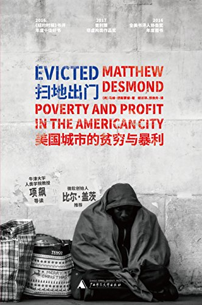

|  |
扫地出门：美国城市的贫穷与暴利 |
导读 家：占有与驱逐
2007年，美国次贷危机爆发。谢伦娜·塔弗（Sherrena Tarver）觉得这是一个千载难逢的发财良机。谢伦娜是威斯康星州密尔沃基为数极少的黑人全职房东之一，靠出租房屋赚钱。次贷危机后，她以每月一套房的速度在贫民区置产。贫民区里大量家庭因为不能按期付按揭，被扫地出门，房价跌至低谷。被扫地出门的家庭不得不租房，所以房租不降反升。
谢伦娜买的这些房子特别便宜，因为它们没什么升值空间。但在黑人贫民区的房租又高得出奇。穷人买不起房，只好租；再者，他们（特别是黑人）在别处租不到房，只能在贫民区里租。贫民区因而成了租房生意的一脉金矿：不少在富人郊区赔了本的房东，都指望着在这里把钱捞回来。
《扫地出门》一书解释了，强行驱逐是将一些人的贫困转化成另一些人的超额利润的关键环节。2009年至2011年间，密尔沃基市每8名房客中至少有1人经历过强制性搬迁。2012年，纽约市的法院每天都会判出将近80笔以未缴租为由的驱逐令。被驱逐过的房客因为有了这个记录，很难再租到好房子。他们只能住进条件更为恶劣的社区。贫穷、暴力、毒品进而聚集到了一起。为保证按时缴租、不再被驱逐，他们更要节衣缩食。这样，驱逐不仅是贫困的结果，还是致使贫困不断恶化的原因。贫穷能够成为利润的源泉，并不是因为穷人被剥削，而是因为他们不断突破自己生存条件的底线——吃本来不能吃的东西，住本来不适合住的地方——为没有价值的房子创造出不菲的租金收入。驱逐是不断突破底线的重要驱动力。
马修的这个能力和他自己的生活经历是离不开的。他出身贫寒，父母曾有过被驱逐的经历。后来他又认识了不少被驱逐的、不得不自己动手盖房的游民。当然，这并不意味着研究者只能研究和自己生活经历相似的群体。人类学实地调查的目的，就是要让我们通过长时间的亲密互动，在对方身上看到自己。要达到这种状态，靠投入、靠执着、靠想象，归根到底靠对生活的关怀和热爱。能与街头小贩随意地聊天、和建筑工人轻松地玩笑，是一种相当重要的能力。如果不培养这种能力，那么方法和理论学得越多，你和这个世界的距离也许就会拉得越远。
造成这个问题的原因，仅仅是我们在后现代认识论的轨道上滑得太远吗？人们一般认为《写文化》代表了人类学学界内部的反思和转化。但是媒体、甚至文学界在同时发生了类似的变化，说明背后可能有更普遍也更深刻的原因。80年代后期的北美和当下的中国有一个相似的地方：具体矛盾复杂多样，个体焦虑凸现，但是社会却没有统一的“大问题”感。“大问题”感，在冷战初期、在民权运动、在反越战运动中是很明显的。身份政治的兴起，使得个体经验替代了公共问题，成为思考的引擎。
马修告诉我，他要把这本书写成一个道德批判。这个道德批判的主要基础，如书在结语部分中强调，是认为家居（home）是生活意义的载体。“家是我们生活的重心。家是避风港，是我们忙完学习工作之余、在街头历劫种种之后的去处。有人说在家里，我们可以‘做自己’。只要离开家，我们就会化身为另外一个人。只有回到家，我们才会褪下面具。”他还援引法国政治学者托克维尔（Alexis de Tocqueville）的话：“要逼着一个人站出来关心整个国家的事务，谈何容易？但如果说到要在他家门前开一条路，他就会立刻感觉到这件公共意义上的小事会对他的切身利益产生巨大的影响。”
马修对家居的阐释，很多中国读者听来可能像丝竹入耳。而书中记录的被驱逐的悲惨故事，更让一些读者感到买房的必要性和迫切性：只有占有了房，才不会被驱逐。一张房产证，意味着安全、尊严、自我、意义，意味着可以放松地去参加同学会。中国的私人住宅拥有率领跑全世界（90%），要比典型的福利国家瑞士（43%）高出一倍左右，也远高于日本（62%）、韩国（57%）等在经济发展和社会福利上较为超前的国家。
有人可能会说，“房奴”总比无家可归者好。如果人人都成为“房奴”，没有人被驱逐，岂不是很好？事实可能没那么简单。当作为基本生活资料的家成为被占有的资产，占有的逻辑可能会不断强化和扩张，不断产生新的排斥和驱逐。驱逐是占有的前提。驱逐也是占有者维持、提升占有物价值的手段。如果没有排斥和驱逐，就不会有额外的市场价值。倒过来，驱逐又成为占有的动力。我们渴望占有，是因为我们害怕被驱逐。历史上，对占有的渴望和面临的驱逐风险是成正比的。“家天堂”的意识比较盛行的年代，比如维多利亚的英国和现在的美国，也是无家可归者数量剧增的时期。在住房问题解决得比较好的西欧，“家天堂”的意识则相对薄弱。上世纪60和70年代，“人人有房住”的公共政策在西欧取得长足发展；当地的年轻人很少会动买房的念头。
虽然中国没有像这本书里描述的驱逐，但那些在城里买不起房、落不了户、租不到合乎标准的房子、孩子因为不够条件上不了学的，常常有被劝退清理的可能。相反，被正式占有的房产进一步升值。这种情况刺激着更多的人去占有，以防再被“扫地出门”。在美国，认为占有房产是天经地义、提倡“人人成为业主”的意识形态，和大规模的驱逐现象是紧密相联的。《扫地出门》告诉我们：2008年，联邦政府花在直接租房补贴上的金额不足402亿，但业主拿到的税务优惠竟高达1710亿美元。这个数目相当于教育部、退伍军人事务部、国土安全部、司法部与农业部在当年的预算总和。美国每年在业主津贴上的投入，包括房贷利息扣抵与资本利得豁免，是全美租房券政策成本预估的三倍。为什么会这样？因为：“人人是业主”是美国社会的主流意识形态。占有者的利益远远压过了居住者的利益。如果“人人有房住”成了主流信条，那么政策可能就会向居住者倾斜，驱逐可能不会那么普遍。
占有者保护资产价值的动机，也在促进驱逐。美国大量的房客被扫地出门，原因不是房子不够。就密尔沃基而言，其人口在1960年是74万，现在却不到60万。驱逐数量的增加与房源的相对宽松是同时出现的。为什么空出来的房子不能成为被驱逐者的家园？占有者不愿意。我10万买下来的房子，白给别人住，岂不是降低了房子的价值？中国二线以下城市政府办公楼前和房产开发商公司门口时不时有业主静坐，对房子降价表示抗议。不许房产降价，直接动机是保护自己投资的价值。但从另一个角度看，也就是不许那些比我穷的人拥有和我一样的房子。宁可让房子空着，也不能让别人便宜地住。业主当然不是坏人；然而，一旦必需品成为利润的源泉，对利润的追逐就难免沦为“要命”的肉搏。
今天，越来越多的年轻人已经看到这些问题。他们在疑问，他们在反思，他们在想象新的生活方式。敢于不占有，在不占有的前提下享受生活，精神昂扬地过好每一天，这也许会是这个时代的最大的革命。向成长中的勇敢的“我革命”者致敬。
序曲：冷冽之城
搬家期限的最后一天，外头天寒地冻，阿琳再不走，房东太太就会把治安官找来。配枪的治安官会带领一票穿着靴子的搬家工人上门，还会出示一纸法官的命令，告知这里已不再是她家了。阿琳有两个选择：卡车或者路边。“卡车”是指她的东西会被装进一个18英尺（5米多）长的货车，清点登记后放入保税仓库。进了仓库，她得另掏350美元才能拿回自己的家当。她哪有350美元？所以她选了“路边”，也就是看着自己的全部家当统统被搬运工堆在路旁：几张床垫、一台落地式的电视机、一本《不要惧怕管教》、一张漂亮的玻璃餐桌和尺寸合宜的蕾丝桌布，还有她的假花盆栽、几本《圣经》、冰箱里切好的肉、浴帘、贾法瑞的哮喘雾化机。
阿琳带着十三岁的乔里和五岁的贾法瑞住进一家游民收容所，大家都管那里叫“旅馆”（Lodge），因为这样父母就可以跟孩子说，“我们今晚要去住旅馆”，听起来像是住进了某间汽车旅馆。事实上，要不是因为挂着那个“救世军”的招牌，你还真会以为这是间汽车旅馆。阿琳在这个有120个床位的收容所住到4月，直至她在密尔沃基北部以黑人为主的旧城区找到房子为止。她的“新”家位于第十九街和汉普顿街口，离她儿时的住处不远。新房子的窗框与门框宽厚，原本漆成了肯德尔绿，但年久月深，油漆早已龟裂斑驳，木头的边缘裸露，看上去宛若一座迷彩屋。曾经有人尝试要把房子漆白，但半途而废，房子的一大半继而没被漆到。在这里，没有自来水已是家常便饭，所以乔里常得用水桶清理厕所里的排泄物。不过阿琳喜欢这栋独门独院的宽敞房子。“那里不吵，”她回忆道，“而且一整套才租525美元，楼上两间房，楼下两间房。我超喜欢那地方。”
几周后，市政府判定阿琳超喜欢的这个地方“不适宜居住”（unfit for human habitation），勒令她搬迁。这栋房子的门窗被绿色木板封死，房东也收到了罚单。阿琳只得带着乔里和贾法瑞往更靠旧城区的地方搬。这次母子三人来到阿特金森大道（Atkinson Avenue）一处邋遢的公寓社区，很快她就听闻此地是毒贩的天堂。阿琳很担心儿子的安全，尤其是乔里：这个肩膀松垮、有着胡桃般褐色肤色的男孩儿，脸上总挂着微笑，而且来者不拒，遇到谁都能聊两句。
阿琳在阿特金森大道挨了四个月，度过夏天，然后才搬到将近两公里之外第十三街跟基辅大道（Keefe Avenue）交叉口一栋双联式公寓的底层。阿琳和儿子徒步把东西搬了过去，开灯前她紧张到不敢呼吸；直到灯亮了，她才笑着松了一口气——这下子她可以靠别人付的电费撑一段时间了。客厅窗户上有个拳头大小的洞，前门得拿一块丑丑的木板卡进金属凹架才能锁上，肮脏的地毯藏污纳垢。不过优点是厨房空间很大，客厅的采光也不差。阿琳拿了块布把窗户的洞塞住，接着挂上了象牙白的窗帘。
房租是一个月550美元，不含水电及燃气。对美国第四穷城市的底层社区来说，这算是2008年两居室的行情价。阿琳找不到比这儿更便宜的房子，或者应该是比这儿更便宜而且还能住人的地方。再说，大部分的房东看她带着两个小孩，也不愿意把小一点的房子租给她。阿琳每个月可以领628美元的社会福利补助，光房租就占去了88%。她或许能够撑过这个冬天吧，熬到番红花和郁金香从融雪的大地冒出头来。春暖花开，那是阿琳最喜爱的季节。
从前，即便在美国城市里最荒凉的区域，驱逐房客也是非常罕见的，这种行为往往会引起众怒。上个世纪经济大萧条期间，虽然被逐出家门的户数跟今日相比不值一提，但还是发生了驱逐引起的暴动。1932年2月，纽约布朗克斯区有三户人家遭到驱逐，结果社区的居民群起反抗。对此，《纽约时报》评论道：“可能是天气太冷了吧，现场抗议的才一千人。”有时邻居们会直接杠上联邦法警，一屁股坐在被驱逐家庭的家具上，让人想搬都搬不走；有时他们会无视法官的命令把当事人的家当搬回去。联邦法警本身对强硬执法也拿不定主意，他们不觉得身上的警章和枪该用来对付老百姓。
到了21世纪的今天，治安官之下有一个个小组，他们的全职工作就是执行驱逐和发布止赎令；有的搬家公司专接驱逐案子，员工从周一到周五都不得闲；还有上百个公司四处挖掘数据，制作房客筛选报告，列出租客过去的驱逐记录与法院档案，将资料出售给房东。现今的房屋法庭人满为患，特聘法官被逼着在走廊上或塞满旧书桌和破档案柜的临时办公室里处理案子——但会去出庭的房客少之又少。对于轰隆隆的卡车引擎声、大清早传来的敲门声，还有街边一整排自己的锅碗瓢盆，低收入家庭早已见怪不怪了。
许多家庭眼睁睁看着自己的收入停滞不前，甚至不增反减；与此同时，居住成本却一路飙升，今天美国大多数贫困的租房家庭得砸超过一半的收入在“住”这件事上，至少有四分之一的家庭要用七成以上的收入支付房租和电费。每年因为缴不出房租而被扫地出门的美国国民，数以百万计。密尔沃基的租房家庭不到105000户，房东却想得出办法每年驱逐大约16000名成人和儿童，相当于每天都有16个家庭经由法庭程序被驱逐。不过，比起走法院这条路，房东其实有更省钱省事的办法让租房家庭离开——有些房东会直接拿出200美元打发房客，叫他们在周末前搬走；有些房东会强拆房门，让人住不下去。密尔沃基半数租房家庭经历的“强制性搬迁”都发生在法律无法触及的死角，属于“非正式的驱逐”。如果把各式各样非自愿的搬迁全部算进去——正式的、非正式的、房东的房子被查封、房子被宣告为危楼等等——你会发现从2009年到2011年，密尔沃基每八名租户中至少有一名经历过强制性搬迁。
本书记录了八个家庭的身影与足迹——有黑人家庭，有白人家庭，有人携家带口，有人孑然一身——所有人都被卷入驱逐的风暴中。扫地出门的情况在这座城市随处可见，牵涉其中的不只是房东和租户，还有他们的亲朋好友、旧爱新欢、法官律师，甚至毒贩和教会长老。驱逐连带的后果不容小觑：一旦没了栖身之所，许多家庭的下一站就是收容所、废弃的空屋，甚至有人会流落街头。抑郁和疾病随之而来；一个个家庭被迫搬至危险的治安死角，住进条件更差的房子；街坊邻里的根基被连根拔起，社区轰然瓦解；年幼的孩子们成了无辜的受害者。驱逐让我们看到了人在悬崖边缘的脆弱与无助，也让我们见证了生而为人的智慧与胆识。
第一部分 房租
Chapter1 房东这一行
谢伦娜一边开车在密尔沃基的北部兜圈，一边摇下车窗听R&B音乐。对密尔沃基的中产阶级来说，走高速公路穿过旧城区是常态，房东们则会开进巷弄；但去哪些地方，他们一般不会开自家的萨博或奥迪，而会开专用的“收租车”。以厢型车或卡车为主的收租车特色鲜明：车体生锈，漏油，车内装有延长线、梯子、一把装好子弹的手枪、管道螺旋钻、工具箱、防狼喷雾、射钉枪和其他一些必需品。谢伦娜多半会让大红色的雪佛兰Camaro——也就是电影《变形金刚》里的“大黄蜂”跑车——在家里留守，另外开一辆有着22英寸轮毂、1993年出厂的米黄双色雪佛兰Suburban“巡房”。Suburban真正的主人其实是昆汀（Quentin），昆汀的另一个身份便是谢伦娜的老公兼事业伙伴，同时也是名物业经理。昆汀拿来发动Suburban的不是钥匙，而是螺丝刀。
谢伦娜要付不少账单：房贷、水费、维修费、房地产税。有时候还会莫名其妙地冒出一笔大开支，比方说锅炉坏了、市政府巧立名目要收个什么费用。在月初收到租金前，她几近破产。
她慢慢弄懂，租房市场里有一类人是中上层阶级，他们租房子时考虑的是自己的喜好与需求，第二类人是“逐水草而居”的年轻人，第三类是既买不起房子、又没资格住政府公租房的穷人。房东在不同的地方活动，但他们一般会将房产集中在一个区域内经营。在密尔沃基这样一座各种界限泾渭分明的城市，房东得锁定特定的族群来做生意：白人或黑人、贫困家庭或大学生。谢伦娜最后决定专攻贫穷的黑人。
四年过后，谢伦娜共计拥有36个出租单位，全部集中在旧城区。她开始携带两只手机外加备用电池、读《福布斯》杂志、租办公室，也开始朝九晚九地接受电话预约。昆汀辞掉了原来的工作，摇身一变成了谢伦娜的物业经理，同时也在自己名下置产。收租之余，谢伦娜还做起了“信用修复”（Credit Repair），也就是类似代偿的生意，同时成立了一家投资公司。另外她购置了两辆15座的小巴，开了家叫“狱友快线”的公司（Prisoner Connections LLC），接送去威斯康星州北部探监的那些女朋友、妈妈和孩子们，一张票收25到50美元不等。谢伦娜找到了自己的职业方向，她是一个靠旧城区吃饭的企业家。
“他没跟我说。”谢伦娜答道。她口中的“他”指昆汀。租户有时候会帮房东做些杂工来抵房租，清理地下室就是其中一种。“那你要打电话跟我说啊，不要搞错谁是老板好吗？”谢伦娜开起了玩笑。拉马尔也很买账地对她笑笑。
枪击案发生几天后，她接到另外一名租户打来的电话。对方说她的房子要被勒令停租了。她一开始还不太相信，但开车来到房前，果然看到穿白色制服、戴安全帽的人，正将绿色木板钉到她房子的窗户上。这间房子的租户被抓到偷电，所以We Energies能源公司的工作人员从电线杆那里断电，然后又打电话通知市政府的社区服务部（the Department of Neighborhood Services，DNS）。这几名偷电的房客当天就得走人。
在美国大部分的地区，包括密尔沃基，多数房客必须自付水电燃气费，但房客越来越拿不出这些钱来了。2000年以来，燃料与水电费上涨超过50%，这“归功”于全球需求增加与价格上限调整的失利。一整年下来，美国平均每五户贫穷的租房家庭，就会有一户因欠缴费用收到公司发来的服务中断通知。因为没有能力兼顾房租跟这些水电燃气费，有些人会铤而走险，付点小钱请亲戚或邻居帮他们偷接管线。全美每年被偷取的电量总值高达60亿美元，仅次于汽车和信用卡盗窃案的金额。偷燃气要难得多，也较为罕见。而且冬天一到，燃气就不需要偷了，因为政府规定冬天不准断燃气。但只要4月一来，不准断燃气的命令取消，燃气公司就会大张旗鼓地带着一叠叠中断服务通知和一箱箱工具来到贫困社区。每年大约有5万户家庭会因为欠缴费用而被We Energies能源公司中止燃气供应。很多房客都是冬天乖乖缴房租，暖气费先赖着；夏天改而欠房东钱，然后努力把燃气费还清。他们的目标是在天气变冷前再次连上燃气的管线，这样才能在冬日享受无间断的燃气供应。这样的背景也说明了为何驱逐会在夏季和初秋飙高，而后在11月燃气开始强制供应后下降。
谢伦娜看到头戴安全帽的社区服务部人员在房子周围巡来巡去，没有什么比手上拿着记事板的房屋检查员更让房东抓狂了，他们每天不是在勒令房子停租，就是睁大眼睛检查公寓的里里外外有无违法之处。每当接到报案，社区服务部就会派出房屋检查员。这个机构成立的宗旨在于保护城市里最弱势的租户群体，视疏于管理的房东为假想敌。但包括谢伦娜在内的房东们认为，租户报案尽是为了些鸡毛蒜皮或流于表面的事儿——而且经常把这些看作是为了不被驱逐采取的缓兵之计或挟怨报复。一眨眼的工夫，谢伦娜算起了自己的损失：电线重拉得花上几千美元，偷电租户赊欠的租金也收不回来了。她还记得自己当初是怎么决定给这家人一次机会的，这个当妈妈的说她想离开有暴力倾向的男友，谢伦娜一听心就软了。尽管对方在过去两年中就有三次被驱逐的记录，谢伦娜还是决定将房子租给她和孩子。我又感情用事了，谢伦娜心想。
谢伦娜深吸口气。这个街区里的烂房子很多，这间位于十三街的房子并不完全符合住房条例，她心知肚明。但认真讲起来，密尔沃基几乎没几间符合规定的房子，毕竟多数房屋极其老旧，建筑法规又极其严苛。“感谢”房客的母亲，房屋检查员会在几天后登门拜访，他会推推看楼梯的扶手稳不稳，会对着窗户上的洞拍照存证，还会摇一摇门轴不知道跑去哪里的前门。反正每抓到一项违规，谢伦娜都得花钱。
谢伦娜思忖片刻后表示同意，于是伸手从抽屉里拿了张五天后驱逐的通知单，马上填写起来。尽管法律明令禁止房东报复通报社区服务部的租户，但如果是欠缴房租或者租户有其他违反租房合同的情况，房东随时都可以申请将他们逐出家门。
Chapter2 凑房租
“子弹可不长眼，”拉马尔接着说，“听我说，先前我们不是陪德马库斯出庭吗？”拉马尔一说起故事，大家的牌就打不下去了。在开庭前，拉马尔说，他们一伙人看到有个年轻人不过才十来岁就被判刑十四年，原因是他哥哥把一个瘾君子活活打死时，他在旁边看着。“他在法院哭得撕心裂肺。”
“他们会这样乱栽赃，是因为那小毛头是黑人吧。”巴克说。
“啧！”拉马尔说。然后他把眼光移回巴克身上：“别做傻事啊，不值得……坐牢可不是开玩笑的。进到牢里你每天都得拼命，不拼你会活不下去。”
这个家并不是一开始就有今天的模样。拉马尔第一次来看房的时候，这里简直一塌糊涂，厨房堆积着没洗的碗盘，蛆都长出来了。但拉马尔需要个家——跟两个孩子窝在自己妈妈家的地下室不是长久之计，而且住妈妈家有“宵禁”，规定所有人都要在晚上九点前回家。再来就是拉马尔看出了这间公寓的潜力——谢伦娜免了拉马尔的押金，主要是她判断拉马尔应该申请得到“社会安全生活补助金”（Supplemental Security Income，SSI），也就是美国逐月发放的“联邦救济金”，发放对象是老年人、残障人士（肢体或是精神有障碍）等低收入人群。没想到审查结果并不如人意。
一放学，男孩子就会陆续到拉马尔家“集合”——有时是跟着卢克与埃迪一起回家，有时是不请自来。天色一暗，这群男生就会凑钱买一两根大麻烟抽，扑克牌也紧跟着开场。拉马尔的管教风格，无论是对自己的亲生儿子，还是他当自己儿子看待的其他孩子，都很开明。“凡事都逃不过上帝的眼睛，所以有事也不要瞒着老爹，”他会这么跟他们说，“就把这里当成自己家好了……同样的事情我宁可你们到我家来，在我的眼皮底下做，也不要跑去街角巷尾偷偷摸摸做。”拉马尔边抽烟边与孩子们谈笑风生，顺便“传授”一些跟工作、性、毒品、警察有关的人生经验。遇到孩子抱怨女生，拉马尔会试着“秉公而论”：“你们都讲女生怎样怎样，但搞乱她们生活的好像都是男人。”拉马尔会看孩子们的成绩单，催促他们把作业做完。“他们觉得我在跟他们玩，但其实我是在看管他们。”拉马尔有办法当这些孩子的“保姆”，是因为他不会一直出门，可以值很长的班。跟拉马尔同街区的人大多都得工作；孩子们很少能见着上班的大人，除了撞见他们穿着熨烫过的制服冲着去开车的时候。
海军退伍后，拉马尔换过好几份工作。他在不少写字楼当过门房，也在阿泰亚实验室里开过铲车，负责在生产过程中倒入化学原料。不过这都是他还能走路时的事。失去双腿后，他申请过两次“社会安全生活补助金”，但都遭到了拒绝。拉马尔回忆他被告知的理由是对方认为他“还能工作”。就这一点而言，拉马尔不想跟对方争辩，但好工作并不是到处都有。
以前在密尔沃基好工作还真是到处都有。但到了20世纪下半叶，老板们为了寻求廉价劳动力，不是迁厂到海外，就是把生产线搬到美国的“阳光地带”。“阳光地带”工会的力量微弱，有些甚至还不存在工会。1979年到1983年之间，密尔沃基的制造业有56000个工作机会凭空蒸发，情况比1930年代经济大萧条那会儿还严重。战后那几年，此地是人人各司其职；现如今，失业率正攀升至两位数。有些幸运儿在新兴的服务业找到工作，薪水却大不如前。根据一位历史学家的观察：“1987年之前，在阿利斯·查莫斯公司的老工厂当机械工人，时薪少说有11.60美元，但在工厂旧址上重建的购物中心里当店员，你只能赚到每小时5.23美元。”
这类的经济转型——当年横扫全美各大城市的经济变革——让密尔沃基的非裔劳工蒙受了重大打击，毕竟他们有半数的人都在制造业工作。一有生意要收摊，老板更倾向把旧城区的工厂关掉，而旧城区正是密尔沃基黑人的大本营。黑人的贫穷比率在1980年升至28%，1990年进一步恶化，达到42%。理查兹街（Richards Street）跟开彼托街路口曾经有一间“美国汽车公司”的工厂，位于密尔沃基以黑人为主的北部，如今这里已经变成沃尔玛超市（Walmart）。在今天的密尔沃基，梅诺米尼河谷（Menomonee River Valley）岸边那排制革厂，就像一座座陵寝，埋葬着这座城市工业时代的黄金岁月。施丽兹（Schlitz）跟帕布斯特（Pabst）酿酒厂也都关门大吉了。现在每两名适龄工作的非裔男性中，就有一名为失业所苦。
1980年代的密尔沃基曾是“去工业化”（Deindustrialization）进程的中心；1990年代，这儿又成了“反福利运动”的焦点。当年，在克林顿总统微调其“终结现行社会福利制度”计划的同时，一位名为杰森·透纳（Jason Turner）的保守派改革者正把密尔沃基变作一项社会福利计划的实验田。这项被命名为“威斯康星要工作”（Wisconsin Works，W-2）的福利政策打动了全美各地的立法者。上述所谓的“要工作”，可不是一句玩笑话：想领到福利救济的支票，你就得去工作。你可以去私营企业打工，也可以去做政府提供的社区服务工作，但就是不能无所事事。为推动此项福利政策，儿童保育补助和医疗补助都扩大了规模，但W-2意味着只有打卡上班的时数才能换算成福利补助，即便这份工作只是把小玩具按照不同的颜色分类；领导将它们打乱之后，第二天你便又有“工作”可做。W-2也意味着不乖乖照着这剧本走的人就会连食物券都领不到。这项福利政策让密尔沃基多达22000户家庭从福利救济人员的名册上被除名。就在密尔沃基建立了美国社会福利制度史上第一个真正“以工代赈”计划的五个月后，克林顿总统正式签署了福利改革法案，将其列入联邦法律。
就这样，在1997年，W-2正式取代“抚养未成年儿童家庭援助计划”，开始提供两种不同的补助：工作者可月领673美元；未工作或无法工作者（多半因为身心障碍而不具备工作能力）可月领628美元。拉马尔被认定是未工作者，所以他领的是较少的628美元，也就是代号为“W-2 T”（W2-Transitions）的津贴。在扣掉每个月550美元的房租之后，拉马尔还剩下78美元可以过活，相当于一天只能花2.19美元。
基本上，每个月多缴些房租来补欠款是不可能的任务。扣除固定的房租，拉马尔剩下的钱都得用来购买家用（香皂、厕纸）和付电话费。为此拉马尔按密尔沃基的行情价，以75美元卖掉面额150美元的食物券换了现金。冰箱跟食物储藏室一到月底就唱空城计。卢克跟埃迪只好跑去祖母那儿蹭饭吃，而平日来串门的孩子都知道不能乱吃拉马尔家的食物。
像这样的会议，在几代人之前会让人觉得匪夷所思。那时候很多人都是兼职当房东：有些是工厂的机械工人、传道的牧师、警察，在很偶然的情况下有了房产之后（比方说通过继承），才开始觉得可以靠房地产赚点外快。但这四十年来，物业管理逐渐成了一门专业，开始走上职业化道路。从1970年至今，以物业经理为职业的人数增长了三倍。随着房东购置的房产越来越多，并且他们多以房东的身份自居（相对于之前提到那些偶然变成楼下公寓业主的人而言），各种职业协会与团体开始如雨后春笋般涌现，配套的后勤服务、认证资格、职业培训教材，乃至于融资工具也应运而生。美国国会图书馆提供的资料显示，在1951到1975年间，以管理租赁公寓为主题的出版物只有3本，但到了1976至2014年间，这个数字却暴涨至215本。即便一些都市里的房东不觉得自己是“专业人士”，“住”这件事成了一门生意已是不争的事实。
这天晚上的讲者是全美自助仓储经纪人公司的肯·希尔兹（Ken Shields）。在卖掉名下的保险公司后，希尔兹便开始想方设法打进房地产市场。他一开始尝试的是公寓合租，租户多是没什么钱的单身男性。“这是收现金的，钱很好赚，但我已经不玩这个了，”他一句话逗笑了全场，“做这个我有赚到钱，请别误会，我很爱赚钱，但我不爱到处跑来跑去，每天跟这些住合租屋的社会渣滓打交道。”同样拥有几间合租公寓的谢伦娜连同屋中其他人一起笑了。就在此时，希尔兹发现了自助仓储这个“宝”。“自助仓储有可以跟租房比拟的利润，但……”他放低声音，眯起眼睛，“但你不用跟人瞎搅和，你只需要收他们的东西！……这简直是美国这么大个经济体里最甜蜜的部分了，保准叫你赚个盆满钵盈。”
其中有个人一边拍手一边站了起来，他是密尔沃基房产投资人联盟的会长，一个留着八字胡、挺着大肚腩的男人。找不到讲者的时候，他会把会议改成“各抒己见、轮流发言”的座谈，让大家有机会集思广益。在一个举办座谈会的晚上，一名来自“铅与石棉信息中心”公司（Lead and Asbestos Information Center，Inc.）的女士一开口就对全场常因为想替房子除铅而亏钱的房东说：“铅其实可以帮你赚钱。”有名房东问到，*如果检测石棉的结果是阳性，自己有没有义务向市政相关部门或租户通报。“没有，不需要。”*这位女士回答。
对话继续向下推进，有其他人问到了扣押欠租人工资的事情。一名律师跳出来为全场解惑，原来房东有权申请扣押租户的银行存款，最多可以扣押其固定收入的20%，只要最后给对方留出1000美元即可。不过，领取福利补助的人不可以碰。
“那可以拦截租户的退税吗？”丢出这个问题的是谢伦娜。
律师表示惊讶：“不可以哦，有这权力的只有州长一个人。”
谢伦娜其实是明知故问，她早就做过功课了。既然如此，为什么还要多此一举呢？她并不是真的在问问题，而是在向现场的“艾瑞克、马克跟凯西”传递讯息，除非收到房租，否则她可不会轻易善罢甘休。不少白人房东知道房价便宜的旧城区是块赚钱的宝地，但不要说有时得送驱逐通知单给租户，光是想到要去密尔沃基的北部收租，许多人就会紧张地打退堂鼓。谢伦娜希望这些白人房东知道可以找她帮忙，只要价格合理，她会替他们管理房子，或是提供咨询意见，比如贫民窟的何处可以置产。她愿意以中介的身份做他们与密尔沃基黑人之间的桥梁。会议结束后，白人房东果然把谢伦娜团团围住。当天谢伦娜穿了件背上用水钻贴成“Million Dollar Baby$”（百万美元宝贝）字样的牛仔外套。她一边谈笑风生，一边收着名片，嘴里还不忘提醒大家：“北部没什么好怕的！”
话说跟孩子们粉刷完之后，拉马尔打了电话让谢伦娜过来验收。谢伦娜到现场一看，发现孩子们不但没有把墙上的小坑小洼补好，还把白漆滴到墙壁咖啡色的边饰上，甚至忘了刷食物储藏室。拉马尔的说法则是昆汀没将填坑料和咖啡色油漆送来。“他没送你不会问吗？”谢伦娜回应道。她连一毛钱也不肯从拉马尔所欠的金额中扣除。
“然后啊，”谢伦娜接着说，“他也没跟我说一声，就把浴室的地板给铺了，还自己从房租里扣了30元。”原来是拉马尔在刷漆的时候发现帕特里斯的旧公寓有一盒瓷砖，于是他就拿这当材料，重铺了浴室的地板。他拿刷剩的油漆当胶水，把瓷砖一片片给贴上去了。“我跟他说，‘不要再自己乱扣房租了！’再说这家伙本来就欠我钱，他有什么资格自己减房租？”
罗拉换了条跷着的二郎腿。“这种人，就是在耍花样啊。可以叫他走了啦……他们满脑子都是要占便宜、占便宜、占便宜。”
Chapter3 热水澡
连尼·劳森（Lenny Lawson）踏出了拖车营（trailer park）的办公室，点上一根宝马牌（Pall Mall）香烟。袅袅升起的烟雾穿过他的八字胡与淡蓝色双眼，消失在棒球帽的帽缘。他望向一排移动屋，它们挤在一条窄窄的柏油路上，几乎所有的拖车都面朝同一个方向，彼此间只有几步路的间隔。机场就在附近，每当飞机从低空掠过，露出机腹，窗户就会被震得哗哗作响，即便是已经住很久的人也会忍不住抬头张望。四十三岁的连尼一辈子都没离开过这里，至于担任拖车营的经理，则是这十二年的事。
连尼知道瘾君子们大多住在拖车营的北边，那些在餐厅或养老院兼两份差（一个人轮两班）的人大多住在南边。捡破铜烂铁做回收的人住在靠近入口处。至于拖车营里“最高端的地段”位于办公室后方，里面住着喷砂除锈工人、机修工等工作最“体面”的一群人，他们的移动屋前廊都有打扫过的痕迹，而且还摆了花盆来增添绿意。靠领联邦救济金过活的人则散居在园区四周，还有那些上了年纪、一些居民口中“跟着鸡叫日出而作，日落而息”的老人家也都住在园区各隅。大部分时候，连尼想把性侵犯安排跟瘾君子当邻居，但事情不可能每回都如他的意。他有次不得不把一名性侵犯安排在兼两份差事的“蜜蜂区”附近。所幸那家伙超级宅，总是待在拖车里，百叶窗紧闭，每周会有人送来食物跟生活必需品。
第二天晚上，游行的群众卷土重来。第三天晚上，第四天晚上……他们连续在十六街高架桥上游行了两百个夜晚。他们最先撼动了整个密尔沃基城，随后吸引了全国的注意力，最终连世界都听见了他们的诉求。但现实几乎没有任何改变。1967年，《纽约时报》在社论里公开说密尔沃基是全美种族隔离最严重的城市。挟带参众两院的绝对多数，约翰逊总统通过了1964年的《民权法案》（Civil Rights Act）与1965年的《选举法案》（Voting Rights Act），但部分国会议员因为背后有房地产相关利益团体的游说，所以不肯跟总统一起推动将居住歧视认定为非法行为的“开放住房”法案（open housing law）。后来是牺牲了一条人命（1968年4月，马丁·路德·金在孟菲斯一座旅馆的阳台上遇刺），加上后续的暴动，国会才迫于压力在同年的民权法案增修中，纳入了真正意义上的开放住房政策。这就是大家所熟知的“公平住房法案”（Fair Housing Act）。
自1930年代以来，为数不多的拉丁裔家庭开始迁入以白人工薪阶层为主的密尔沃基南部，因为制革厂需要拉丁裔男性所提供的劳动力。到了1970年代，拉丁裔的人口开始有了增长。这次白人没有跟他们干仗，而是默默迁往更南或更西边。于是“波兰”变成了“墨西哥”，密尔沃基南部成了拉丁裔专属的“城中之城”。相较之下，密尔沃基的北部仍旧以黑人为主。东部跟西部，加上连尼那间拖车营所处的最南端，成了白人的去处。即便有了开放住宅法案，种族隔离也未曾远离密尔沃基。
“哈！”米特斯夫人哈完这声便走出去，准备推着装杂货的小推车，开始捡破烂的一天。对米特斯夫人来说，联邦救济金才是生活的主要来源，平时捡废瓶子换到的钱则会拿去给她已经成年但有精神障碍的女儿买些零食。若是哪天“大丰收”，那她就会带女儿去“查克芝士”（Chuck E.Cheese's）开心一下，打打牙祭。
但2008年5月的最后一周，他发现连这小小的托车营都有可能保不住。密尔沃基“授权委员会”的五名委员都拒绝给他换发拖车营的营业执照。其中力主不予换照的市议员泰瑞·维特考斯基（Terry Witkowski）满头银发，面色红润，长期在南部生活。维特考斯基指出，按照市府社区服务部的记录，托宾光是近两年的违规事项就多达70次。他提到，在过去一年当中，拖车营内拨出了260通报案电话。他说托宾的拖车营无异是毒品、卖淫与暴力的大本营。他还发现由于园区内的污水管没有接好，结果秽物倒灌，十辆拖车屋的车底成了重灾区。在市府授权委员会的眼里，拖车营正在上演一场“生化危机”。
就此，密尔沃基的市议会在6月10日进行投票表决。如果授权委员会的决定获得认可，那托宾就会在一夜之间失业，而他的租户们也都将无家可归。这时候记者来了。他们头抹发胶，肩扛像武器般的相机。他们访问住户，其中有些人对托宾炮火大开。
问题就出在这里，这是拖车营居民最害怕的事情。拖车营里的每一个人，包括玛丽、蒂娜、米特斯夫人都一样，他们表面上在讲可能得被迫搬家，实际上担心的是住进北部。办公室苏西是园区里少数几个在北部住过的人，她已成年的儿子就曾在那里被人用枪指着。“市议员说我们这儿是个贫民窟，”她不吐不快，“我真想带他见识一下什么叫真正的贫民窟！”这件事让苏西心中一阵绞痛，她儿子担心得将她平常吃的止痛药给藏了起来，就怕她会想不开，吞下一大把。
托宾确实会给房客方便。他会让欠钱的房客今天先缴一点、改天再补缴一点。遇到有租户失业，他会让对方用工作来抵租金。有时他会跟连尼说，“这些人也许会拖欠房租，但他们都是好人。”他曾借钱给一名女租户，让她可以去参加母亲的葬礼。遇到有人喝醉了在拖车营里破坏草皮或翻垃圾被警察逮捕，托宾也会把他们保释出来。
赔了几百或几千美元的事情，托宾都会像记仇般牢牢刻在心里。他不会让欠租的人只还一半就算了，也不会用低于行情的价格把拖车便宜租出去。遇到有人拖欠租金，摆在托宾面前的有三个选项：放过对方而让自己少赚，选择将对方逐出家门，或者他可以找对方谈谈。
拉瑞恩已经没钱了。她从准备缴纳的房租里挪了150美元去补交了欠下的燃气费，希望被切断的燃气可以恢复。她想冲个热水澡，冲去身上的味道。她想把自己收拾得干干净净，最好还能跟漂亮沾上点关系。女儿还在襁褓中的时候，她曾经站在桌子上给男人跳过舞，她想和当年一样清爽美丽。她希望热水可以让她的肌纤维痛好些，那种疼痛像是背上被人千刀万剐一般。医生给她开了乐瑞卡（Lyrica）跟西乐葆（Celebrex）这两种止痛药的处方，但她不是每次都有钱领药。热水或许能适当缓解这种疼痛。但事实证明150美元改变不了什么，We Energies能源公司收了钱但没有恢复燃气供应，拉瑞恩觉得自己这钱交得实在太蠢了。
拉瑞恩悻悻然地走回拖车。车内热到她奢望着淋浴头能喷出水来。她没有开电扇，风会吹得她头疼。她也没有开窗，只是坐在沙发上。她打电话给当地的几家社会服务机构，但几通电话都没有下文，她对着地板呆呆地说：“没有其他办法了。”拉瑞恩试着不去理会那热浪，在沙发上躺了下来，沉沉睡去。
Chapter4 大丰收
市议会公布拖车营命运的那天，托宾穿的是POLO衫、驼色休闲裤和棕色渔夫鞋。他坐在旁听席前排长凳的中央，太太跟律师陪在一旁。宽广的粉色大理石柱向上延伸至看得见横梁的天花板，上面有精巧的红黄色图案。房间的前端安放着一张大大的橡木桌，正对面是为十五位市议员准备的小橡木桌，一人一张排得很是紧凑。前一天晚上，律师递交了一份附件给市议会，由于送达时间太晚，大多数市议员还没来得及看，于是托宾的律师起身清了清喉咙，口头说明。按照他的解释，这份附件包含了托宾将立刻（或者尽快）采取的十项措施：托宾会报名由市政府开办、时长一整天的房东培训课程，并跟全天候服务的保安公司和一个独立的物业管理公司合作，驱逐妨碍居民生活的租户，同时处理园区内有关房地产法的违规事项。律师说托宾不会报复那些开口批评过他的租户；并且，一年之内他会把拖车营卖掉。
“沙尔尼先生放任一个原本很好的移动房屋园区变成今天这副样子，”他毫不客气地说，“我的选区内有四间拖车营，只有他这间有这些问题。”他的视线穿过眼镜上方，看向托宾的律师。“大律师，园区里住的并非全都是老人家、残疾人或小孩，”他转头看着他的议员同仁，“但确实有些人的手头不宽裕，也没什么工作能力。到时候他们就得搬迁。”维特考斯基不是托宾的盟友，但他表示愿意接受附件提出的条款。
听证会结束后，托宾开车来到拖车营。他既没有集合大家来宣布议会的决议，也没有瘫倒在办公室的椅子上愁眉苦脸。他的当务之急是驱逐。市议会同意让托宾保留营业执照，条件是他要积极改善园区内环境、整顿治安状况，包括把会惹事的家伙清一清。
市政府或州政府的官员给房东压力——要他们聘请外面的保安公司或派房屋检查员去彻查他们的物业——很多房东就把压力转嫁到房客身上。重新取得控制权也是同一个道理。要声明、维护土地所有权，最有效的办法就是叫人“离开”。
“我的二十八天驱逐通知单放哪里去了？”连尼问。他在办公室里一通翻箱倒柜，只要搬出预告二十八天的“无理由”终止通知，房东就可以任意进行驱逐，不需要再跟房客解释什么。要把惹人厌烦但又没有欠缴房租的房客赶走，没有比这更好的办法了。连尼转头看向托宾：“这下子你可要填一大堆二十八天通知单了。”
“他们还欠我房租，”托宾答道，“给他们预告五天的通知单吧。”
托宾口中的“他们”，是指帕姆和她的家人。在开车载帕姆去完驱逐法庭后，托宾曾请她去跟媒体讲讲话。帕姆现年三十岁，怀孕七个月，说起话来有美国中西部特有的鼻音，长着一张像是从高中毕业册上复制粘贴下来的脸蛋。帕姆的遭遇值得同情，但托宾现在不得不清理门户。
托宾抬起头来。“连尼，钱没有因为这件事收不上来吧？”他说。
“没有，我自己也吓一跳，”连尼答道，“报表我刚弄出来，情况还不错。”
办公室苏西也补了一句：“我这边也是大丰收。”
为了让托宾改变心意，帕姆把刚收到、还热腾腾的1200美元支票转让给了托宾。会有这张支票，是因为奥巴马总统在2008年推行了一项“经济刺激法案”。她以为这1200美元应该够了，主要是她以为自己只欠1800美元。但托宾却说她的欠款已经接近3000美元。另外，办公室苏西说帕姆“还在吸食快克可卡因”。托宾收下了帕姆的支票，但驱逐令还是照样执行。帕姆一家已经在拖车营生活两年了。
帕姆跟奈德来到学院路移动房屋营的时候，托宾跟连尼表示他们适用“修缮专业人士特惠方案”（Handyman Special），可以免费得到一间移动房屋。按照这个协议的内容，租户会成为拖车屋的所有人，托宾则单纯是提供拖车停放地的地主。因此托宾收的不是房租，而是地租。虽然名字换了，但地租的金额跟一般租户缴纳的房租是一样的。要说哪里不同的话，那就是拖车屋的所有人反而得自行负责拖车的维修保养。理论上，手握所有权代表你可以任意把拖车移到别处，但实际上根本不可能，拖车的所有者对此心知肚明。首先拖车牵引费的起步价就是1500美元，重新将拖车屋固定又得再花两到三倍的钱。要是遭到驱逐，车主也只能无奈地把拖车留在原地。到时候托宾就会回收这个大型的“废弃财产”，再依样画葫芦地“送给”下一位住户。
在全美包括密尔沃基在内的各个城市，租金合理的房屋存量越变越少，乃至于消失，低收入家庭开始抢占便宜的住房资源。放眼全美，廉价房的空置率已经降到百分比的个位数。在连尼的办公室里，天天都有人打电话来问有没有空房（车）。拖车营上新闻之前就已经如此，上新闻之后也还是这样。消息在电视上播出来的那个月，托宾的拖车营一位难求，全部满租。“园区都住满了，”连尼说这话时还呵呵了两声，“电话铃声一直没有停过。”连尼替托宾保管的租约清册显示，平常每个月只会有五辆拖车屋空着，换算成空置率，连4%都不到。廉租房的供不应求也让房东们了解到一件事，那就是在每一个租房家庭的背后，都还有几十个同样的家庭在排队等候。在这种情况下，你很难想象房东们会愿意降租、原谅租户拖欠房租，或是有动力去修缮房屋。
帕姆想办法离开了那个男人。在这之后她成了一名有资格认证的助理看护，工作内容包括倒便盆、把地板上的呕吐物打扫干净，还有帮无法自理的人翻身以防他们生褥疮。私底下她还学会了怎么煮一大锅意大利面和通心粉沙拉。帕姆的妈妈还没来得及教她做菜，就出车祸过世了，那年帕姆还是名高中生。帕姆的爸爸也没空管她，因为他长年在监牢里，罪名不是吸毒就是酒驾。帕姆的兄弟渐渐回到正轨，努力上进。目前他正在服用美沙酮戒毒，还说自己一点也不怀念吸海洛因的感觉。
那是段充满希望与重生，一步一个脚印往前走的安稳日子。只是没想到走着走着，脚下又地动山摇起来。帕姆有天接起电话，就听见另一头的人说她兄弟死了。帕姆问是怎么死的，对方说是吸毒过量。他才二十九岁啊。帕姆先是冲着电话嘶吼，然后将其挂掉。但她随即又抓起了电话，拨另外一个号码。仿佛马上就要溺水身亡的她需要一根浮木，而这根浮木就在电话的另一端。
跟奈德交往的第一年，快克可卡因将两人拧成了一股绳。他们为此而活，也以此为生，同时带小孩。没多久他们就从吸毒变成贩毒。认识满一年，两人双双被捕、被定罪。奈德因为有过毒品前科，所以必须入监服刑。帕姆因为是第一次犯重罪，所以被判缓刑四年，但还是得先在监狱蹲十个月。在牢里，她第一次掉下了眼泪。
出狱之后，帕姆努力想跟毒品撇清关系，她找了个在格林湾最不可能吸毒的朋友当室友，但没想到在她坐牢期间，这位朋友也“沦陷”了。“我在格林湾认识的所有人都他妈的在吸毒，无一例外。”帕姆气呼呼地说。她请她爸爸汇500美元给她，好让她有钱搬家，她爸爸还真的汇了，这点连她自己都感到意外。但格林湾是个小地方，帕姆很快就又跟之前认识的某个毒贩“狭路相逢”了。“他立刻唤醒了我的毒瘾。”
等到奈德出狱后，帕姆又跟他复合了，接着帕姆发现自己有了身孕。奈德要求做亲子鉴定，结果孩子是他的没错。他们给这孩子取名为克里斯廷（Kristin）。没隔多久，奈德跟另外一个女人生的女儿劳拉（Laura）也跑来跟他们同住。劳拉有个小巧的鼻子跟满脸的雀斑，年龄比布利斯大一岁。劳拉搬来同住的几个月后，奈德把劳拉、帕姆，还有帕姆的两个女儿扔在一个他刚在毒品圈认识的女人家里，自己一个人跑了。帕姆带着三个女孩儿在陌生女人家里住了好几夜，最后出于无奈，只好陪着劳拉去她母亲的住处敲门。帕姆记得自己当时站在门口对劳拉的母亲说，“我肚子里的孩子快要生了，但我现在无家可归，因为你以前的男人把我甩了。我身上没钱、没吃的，什么都没办法给你的孩子。我真的很害怕……你可以把女儿带回去吗？”
从头到尾都在通电话的劳拉生母，没有挂断电话，只是拿了包罐头给帕姆跟劳拉，然后就把门合上了。帕姆跟三个女孩儿只好继续住在陌生女毒友的家里。奈德回来已经是一个月后的事了。
托宾带了一票保安，告知帕姆与奈德，退税的支票得归他，而且他还是要执行驱逐程序。虽然托宾最后只给他们二十四小时搬走（否则就要打电话叫治安官来），但事情并没有搞得很难看。要不是因为奈德身上还背着另一宗贩毒起诉还有尚未执行的逮捕令，他一定不会就这样善罢甘休。面临被扫地出门的境地，帕姆跟奈德开始互相责怪。
他们变卖了所有值钱的东西，包括电视跟电脑，还有帕姆的圣诞节礼物。他们需要现金。帕姆每个月得工作30个小时，才能拿到673美元的社会福利支票，另外的390美元会以食品救济券的形式发放。奈德替人改车或修车，生意好的时候一天可以赚个50美元。他们俩的钱各归各管。二人有独立的银行账户，所有的费用都是AA制，一人一半。
坐过牢后，毒品前科让帕姆不好找工作。最后肯用她的是“夸德制图”（Quad Graphics）这家商业印刷公司。夸德一向以愿意聘用没有高中学历和有前科的人闻名，前提是他们得轮大夜班。帕姆愿意。于是从晚上七点到第二天的早晨七点，帕姆会在那些高温且嗡嗡作响的印刷机台前工作。
夸德制图位于密尔沃基西北方的萨塞克斯（Sussex），从拖车营开车要四十分钟。帕姆很珍惜这段通勤的时光，因为这段时间只属于她，她可以暂时丢下奈德和孩子不管。
然后她的车子选了个最烂的时机抛锚，正好是冬天，而冬天他们的手头最紧。奈德原本在一个工地的建筑队工作，但天冷的几个月工程几乎全部停摆，他们又拿不出钱修车，于是帕姆就这样丢了饭碗。也就是从那时开始，他们拖欠托宾租金。政府发放的“紧急援助”（Emergency Assistance）帮助他们撑过了第一个月。几个月后，到了二月，帕姆把退税的1000美元给了托宾，但他们还是入不敷出。帕姆其实可以多还一点，但她想要回去印刷厂上班，这就意味着她需要辆车。于是她花400美元买了辆二手车，但才过了一周，奈德就听见引擎盖里咔嗒作响，他叫帕姆赶紧将老爷车脱手，否则难保车子不会半道抛锚。
把电脑跟电视都变卖掉的帕姆，将剩下的东西塞进大垃圾袋里，走去找住对面的司科特（Scott）帮忙。帕姆问他可不可以收留她跟她的家人，帮他们渡过这个难关，或至少让他们住到把孩子生下来。快四十岁的司科特有吸海洛因的习惯，另外还有一名上了年纪的室友叫泰迪（Teddy）。司科特跟泰迪是在住“旅馆”期间认识的，就是救世军的收容所。虽然司科特曾当着他们的面昏倒过一回，但帕姆还蛮放心让女儿们待在这两个男人的身边。对于帕姆的请求，司科特跟泰迪都一口答应，完全没提钱的事情。
这件事透过办公室苏西之口传到托宾耳里，让托宾非常不悦。对托宾来说，他的拖车就是租给司科特跟泰迪的，可没说拖车里还可以住别人。托宾于是对司科特跟泰迪也发出了驱逐通知，并且把帕姆跟奈德欠的租金都算到了司科特跟泰迪的账上。驱逐就是这样互相传染蔓延的。
Chapter5 第十三街
乔里推开家门，进屋第一句话就喊：“贾法瑞气喘发作了！”他陪着贾法瑞一路从学校走回来，阿琳则继续坐在双人沙发上，等着看今天刮的是“轻度、中度还是强烈台风”。如果只是稍微发作，贾法瑞的嘴巴会像离了水的鱼一样一开一合；严重一些时，他的嘴巴就会张成英文字母的“O”形；到了很严重的地步，他上下嘴唇就会向后翻，从满是牙渍的齿缝呼气。
她每天早晚都会让贾法瑞吸一次舒喘宁。睡前的“例行公事”则是用德国的百瑞牌（Proneb Ultra）雾化器来吸一种叫“强的松”（Prednisone）的类固醇。这台雾化器的配件包括塑料管线，另外还得戴上飞机机舱里的那种氧气罩，阿琳管这玩意儿叫“呼吸机”。贾法瑞的哮喘一直在好转，阿琳还记得贾法瑞以前每周都会被送去急诊。
贾法瑞的名字是他生父取的，但慢慢地，阿琳开始担心起他生父给他的不只是名字而已。他的生父有学习障碍跟情绪管理问题，而贾法瑞在学校也开始表现出类似的特征。他在阅读上的表现很好，但其他的科目则跟不太上。另外，他还会用手去推别的小朋友。学校有做过评估，但最终认定他还不需要额外加以关注。有老师建议可以让他服药控制，但阿琳对这种意见很排斥。“我不想让小孩吃药，尤其反对吃利他林。我觉得他需要的是更多一对一的关心……在他跟心理咨询师见面、接受完辅导之前，我不想让他吃药。”
阿琳跟贾法瑞的生父是在密尔沃基梅费尔购物中心（Mayfair Mall）里的电影院认识的，当时她是餐饮部的员工。“事情好像很自然就发生了，”阿琳回忆道，“但我们说不上在交往。”他们其实有试着认真发展，但阿琳发现对方有暴力倾向。总之，分手后没过多久，那个人就被抓去了监狱。除了把贾法瑞带到这个世上外，这位父亲还真没有给过贾法瑞什么。
阿琳自己的父亲也半斤八两。他把阿琳妈妈的肚子搞大后，人就跑了，结果她妈妈才十六岁就生下阿琳。当时阿琳的外婆在哥伦比亚圣玛丽医院（Columbia St.Mary's Hospital）里的自助餐厅打工，阿琳的妈妈却深居简出，不太出去赚钱。她先是领政府的补助度日，之后嫁了个有稳定工作的老公。这位“老公”后来摇身一变成为牧师，而这也就是阿琳能不进教堂就不进教堂的原因。
十七岁离家的时候，阿琳把母亲逼她上学时穿的旧衣服一口气全扔了。“叮咚”，同学凡是看到她经过，就会拿她身上那条二手喇叭裤笑她。阿琳拿橡皮筋把裤脚扎住，而这却让她被笑得更厉害。后来她在高中毕业前辍学，但阿琳的妈妈一句话也没说。“她哪在乎这个。”
辍学后的阿琳找了份保姆的工作，并搬进了雇主家。也在这段期间，她认识了杰拉德（Gerald）的父亲。杰拉德是她一堆孩子里的老大，阿琳习惯叫他的小名“杰杰”（Ger-Ger）。在阿琳发现自己怀上杰杰的同时，她的男人也官司缠身。“我完全不知道要怎么跟一个老是进出监狱的男朋友交往下去，所以当有其他人出现时，”阿琳说的是杰杰的父亲在某次坐牢的期间，“我就离开他了。”
阿琳说的“其他人”，就是拉里（Larry）。拉里是个精瘦的男人，眼神沉稳，眉宇开阔。拉里自学当技工，然后在后巷替人修车赚钱。到了发薪的日子，他会带阿琳去吃她最喜欢的中国菜。她会把长长的菜单从头到尾看完，但永远只点同一样东西：芝麻鸡。他们虽然穷但很相爱，很快阿琳就怀上了拉里的儿子。他们也给他取名拉里，但平时叫他博西（Boosie）。后来拉里跟阿琳又生了三个孩子，分别是一女两男，其中小儿子乔里，名字是阿琳的妈妈取的，他们俩都觉得不错。
“嫁给我好吗？”某天拉里问。
阿琳的第一个反应是笑。她以为他是在开玩笑，就说了“不”。“他说的不是豪华的婚礼，甚至连去法院公证都不是。”阿琳还记得。但拉里是认真的。弄清楚这点后，阿琳收起笑容说她得考虑考虑。但让她裹足不前的不是拉里，而是拉里的母亲和姐姐。“她们老觉得自己懂得比我多……在她们眼里我永远不够好。”
那之后，拉里开始东游西逛，在家里待不住。这种情况几乎要把阿琳击垮，但只要拉里回来，她还是会为他敞开大门。在交往了七年之后，有一天拉里终于再也没有回来，这一次的“另一个女人”是阿琳当成朋友的人。
拉里把她跟孩子扔下不管的时候，阿琳正在机场旁边的门斯特套房酒店（Mainstay Suites）上班。万念俱灰之下，她辞掉了工作，开始靠社会福利救济金过活。过了一段时间，她找到了在“第三街码头”（Third Street Pier）餐厅打扫的工作。但此时阿琳的妈妈突然离世，失去家人的痛苦将她淹没，工作也做不下去了。她很后悔回去靠领社会福利过日子，但那段时间对她来说真是暗无天日。
搬到第十三街的时候，阿琳领的是W-2T，这是因为她患有慢性抑郁症。2008年她领到的社会福利补助，跟十几年前，美国在推动社会福利改革那会儿没有两样：一天20.65美元，一年7536美元。自1997年以来，全美各地（包括密尔沃基在内）的社会福利补助，几乎都停滞不前，但居住成本却大幅飙升。多年下来，主政者无一不知美国家庭不可能只靠社会福利补助金度日。21世纪开始的头十年间，我们见证了房租与水电燃气费的大幅上涨，此前就已经不可能只靠福利金来支撑一个家了，在此之后不过是雪上加霜而已。
有一天心血来潮，阿琳跑了趟密尔沃基市府的房屋管理局（Housing Authority），去问申请租房补贴的排队名单。结果透明玻璃后的小姐告诉她：“名单根本没有动。”原来早在四年前就有超过3500个等待租房补贴的家庭。阿琳点点头，离开的时候双手插着口袋。不过这已经是比较好的情况了，在美国一些真正的大城市里，比方说华盛顿特区，你要等的可能不是四年，而是几十年。在这些大城市，登记时你可能还是个带着小孩的少妇，等那份申请接受评估的时候，或许你已经当奶奶了。
如今想住上公屋，阿琳首先得存一个月的收入，缴给房屋管理局，这是她年轻时无故放弃补贴公寓而需付出的代价。再来，她得花两到三年等排队名单解冻，然后再耗两到五年等待排在她前面的申请表消化干净。最后她还得祈求上帝保佑，祈祷那些喝着不新鲜的咖啡、手卧沉甸甸的印章的人在审理她的申请书时，可以忽略过去她留下来的驱逐记录，以及他靠社会福利补助在民间租房市场勉强维生的日子。
阿琳跟特丽莎开始一起聊天，分享食物。对刚认识的人，阿琳沉默寡言，心房紧闭；特丽莎却特别率直。特丽莎跟阿琳说时隔八年，她终于又有了真正的家。她上次那个像样的家，是她姐姐的房子。在特丽莎跟她说了她们爸爸的“所作所为”后，姐姐就要求她离开了。从那时起，特丽莎开始浪迹天涯，不时以收容所或废弃房屋为家。但话说回来，大多数时候她还是跟着男人回家。十六岁，特丽莎已经开始学习“利用”自己苗条的身材，大波浪般浓密的黑发，古铜色的皮肤，她是有着黑人、墨西哥人和白人血统的混血儿。前一年，二十三岁的特丽莎当了妈妈，但因为吸毒（主要是快克可卡因），生下孩子后，她就签字把孩子的监护权转给了姐姐。孩子出生之后，特丽莎跟当地一个针对无家可归者的机构“补破口者”（Repairers of the Breach）搭上了线。在这机构的协助之下，她申请到了社会保障收入。
特丽莎不识字，而且很脆弱。乔里曾经把她弄哭，只因为他问了一句“你是有什么特别之处，跟别人不一样吗？”不过她也有让人感觉很轻松、贴心可爱的一面。最重要的是，她就在那里。遇到阿琳和特丽莎想抽根烟排遣下烦恼，或者到了月底想用烟草让自己感觉没那么饥饿时，特丽莎会拿零钱去街角的小店买散烟，或是去快餐店门口的直立式烟灰缸里捞烟屁股出来。阿琳如果需要出门办事，特丽莎会替她看孩子，而在乔里的眼里，特丽莎是同龄人甚至比自己小，总之他没把她当大人看。乔里会叫特丽莎在贾法瑞旁边时嘴巴放干净点，特丽莎则回嘴说：“我生下来就是要骂脏话的。”
特丽莎会成为谢伦娜的租户，主要靠贝琳达·霍尔（Belinda Hall）牵线。在很长一段时间里，认识贝琳达对谢伦娜来说就像是中了头奖。她是一个圆脸且戴眼镜的黑人女性，三十岁不到，就自立门户做起了生意。她是一名代理收款人，负责替那些被判定没有能力自己处理财务的社会保障收入的受领者理财。谢伦娜本来就很爱透过社会服务机构来找租户，主要是社会服务机构常替租户担保，而且还会先替他们垫付现金。但贝琳达的好不止于此。“我一直尽可能满足她的需求，因为我希望每间房都不要空着，”谢伦娜有感而发，“每个月的租金会直接从她那儿过来，这太方便了。”谢伦娜曾经对贝琳达说，只要她开口，自己愿意清出所有房子给她的客户。“我是认真的。因为我能拿到属于我的钱。”两人认识三个月来，特丽莎是贝琳达介绍给谢伦娜的第四个租户。
有些人穷困潦倒，身心也有障碍，所以要领联邦救济金不成问题；但因为他们不够干净整洁，所以不受欢迎、很难申请到公共住房。这些人是贝琳达的主要客户。贝琳达算过，她的客户一般得拿出月收入的60%—70%来缴房租。大部分客户在贝琳达帮他们代缴完房租、水电燃气跟食物的费用后，身上也所剩无几了。找到稳定并且负担得起的房子，对她的客户来说永远是个难题，所以贝琳达很努力地与诸多房东搞好关系——一旦有紧急情况，她就能打电话向他们求助。贝琳达曾在凌晨五点的时候打电话给谢伦娜，因为有栋公寓的暖气坏了，她当天就必须帮住在那儿的女客户重新找套房子安置下来。排解疑难杂症的效率越高，贝琳达就越容易找到客户；客户越多，她的收入也就越高。贝琳达每个月向她的客户收费37美元。在认识谢伦娜时，她手上已经累积有230名客户。
得知阿琳姐姐的事情，谢伦娜也有点于心不忍，于是决定给阿琳一点方便。她们约好只要阿琳可以“分期付款”把欠缴的房租补上，也就是接着的三个月都改缴650美元，那她就可以继续住下去。问题是，即便阿琳把每个月的福利救济支票（628美元）全额转给谢伦娜，钱还是不够。但谢伦娜还是想碰碰运气，她以为阿琳会打电话跟亲戚借钱周转，或向非营利机构求助。而阿琳之所以会接受这个交易，是因为她已经走投无路了。
第二个月的月初，阿琳终于打电话来了，当时谢伦娜跟昆汀正在开着那辆雪佛兰Suburban。谢伦娜跟阿琳讲完话后，看向昆汀。“阿琳说她没收到支票。”
这话其实有语病。阿琳不是没收到支票，她只是没收到那张628美元的支票。原来这段期间她放了社工鸽子，把跟社工约好的时间忘得一干二净。政府的提醒通知单寄到了她之前住的阿特金森大道，总之没到阿琳手上。而缺席面谈，社工做出的裁罚就是缩减补助。阿琳当然也可以把金额缩水的支票给谢伦娜，但她想反正横竖都是欠租，口袋里有几百元肯定强过两手空空。
昆汀没有移动视线，继续专心开车。“他们的生活就是这个样子。”他说。
Chapter6 鼠窝
在帕特里斯收到谢伦娜的驱逐通知单，并跟三个孩子从公寓楼上搬到楼下与多琳同住后，辛克斯顿一家八口（加上科科）算是完成了合体，但他们也发现自己的生活空间又小又挤。帕特里斯、娜塔莎跟C.J.的因应之道是尽量少在家里待着，天公作美时，三人会在外头散散步，天黑了就到家后头找拉马尔打黑桃王。只不过到了夜里，大家还是得挤在一起睡觉。两间卧房，帕特里斯占了当中那间小的，她咕哝着如果要她负担一半的房租，那至少得要有个房间归她，就算房间没门也没关系。在另外一个房间里面，多琳跟娜塔莎合睡一张床，鲁比则蜷曲在椅子上凑合着睡，手脚都无法伸直。米奇在客厅里跟C.J.分享一张没有床单的床垫，旁边就是玻璃茶几和堆得像山一样高的衣服，脏的干净的都有，反正房间里放不下就是了。帕特里斯的两个女儿睡在饭厅一张四角都开花的床垫上，内里的弹簧跟褪色的海绵都已“脏器外露”。
所有人都没办法好好睡觉。娜塔莎睡着后有伸脚踢多琳的癖好，多琳则会习惯性地翻身滚到娜塔莎身上或把枕头偷过来，假如娜塔莎想要回去，多琳就会直接用枕头反击。因为睡不好，年纪较大一点的孩子常错过清晨的校车，小一点的孩子则一整天困得随时随地都可以睡着。有时候多琳从厨房走出来，就会看到他们睡得东倒西歪。头不是枕在茶几上，就是枕在掉地上的几件衣服上。
生日的前夜，往往也是睡得最差的一晚。要是你一个不小心睡着了，帕特里斯一定会溜进房里，用蛋黄酱或番茄酱把对方的脸涂花。已经六年了，辛克斯顿家都没有庆祝过圣诞节——他们庆祝不起。但到了生日那一天，当辛克斯顿家的一分子顶着张黏糊糊的大花脸笑着起床时，会看到生日蛋糕赫然摆在桌上。彼此之间喜欢闹来闹去算是他们家的传统。娜塔莎曾经在帕特里斯的内衣里撒过胡椒，帕特里斯专挑娜塔莎负责照顾弟弟妹妹的时间，把鲁比偷偷带出家门，害得娜塔莎在附近绕了好几个小时找人急得快发疯。
在帕特里斯搬到楼下之后，谢伦娜发现她在偷电。修理电表得花200美元，但只要帕特里斯还跟多琳住在一起，谢伦娜就不愿意花这钱。“我才不出，”她说，“这钱统统要那些黑人出，冬天挨冻是他们的事。”辛克斯顿家后来花了两个月的时间才攒到200美元。在此期间，房子背面那些房间，包括厨房都没有电，冰箱里所有的东西都坏了，一家人终日以罐头果腹：每晚不是意大利方饺罐头，就是通心粉罐头。
面对发臭的冰箱，辛克斯顿家的态度就跟他们面对整间公寓的心态是一样的：忍就对了。对家中的床垫和小双人沙发，他们也秉持着同样的想法。床垫跟沙发缝里的蟑螂多到不像话，他们希望能在搬家时把它们统统甩掉。事实上，这些蟑螂在辛克斯顿一家搬进来前就已在此“驻扎”了：碗槽、脸盆、马桶、墙壁，乃至于厨房的抽屉，蟑螂的身影无所不在。“他们就是看哪里房租便宜就搬到哪里啊，”谢伦娜这么讲多琳这一家，“他们踩着蟑螂就搬进来了。”
在辛克斯顿家搬进谢伦娜位于莱特街旁的公寓前，他们有七年的时间住在第三十二街一栋有五个房间的公寓。那个家当然不是什么豪宅，但空间宽敞，房东人也不错。集所有人之力，他们每个月要付800美元的房租。帕特里斯在一家快餐店当午餐时段的服务员，而娜塔莎在高中辍学之后也开始赚钱。多琳没有念完高中，不过多年前她在就业中心受过职业培训，每分钟能打72个字。即便十四岁就怀了米奇，帕特里斯还是念到十一年级，差点高中毕业；可最后为了维持家计，还是辍学做全职工作赚钱。娜塔莎十六岁时就拿9.5美元的时薪，在夸德制图上班，每天轮12个小时，疲惫时会直接趴在印刷机上睡。公司没问过她年龄，她也没主动提。多琳的月收入是1124美元，其中437美元来自州政府的育儿补助，687美元是联邦救济金，能拿到这笔救济金是因为她的腿受过旧伤——八年级复活节那天，她穿着新买的厚底高跟鞋，一不小心摔到了髋骨，骨折后一直无法完全愈合。父亲当时没有立刻送她就医，而是让她在家待了好几天，否则伤口是可能痊愈的。这个老男人非常不喜欢医生，连后来自己膝盖不行的时候，也只是锯下餐桌的桌脚当拐杖。
在第三十二街，街坊邻居都认识辛克斯顿一家。他们的小孩在邻居家跑进跑出，而多琳会站在自家门前认识认识街区的其他住户。她和街坊的奶奶们有说有笑，遇到住附近的孩子欺负流浪猫，她也会吼他们两句。到了夏天，小孩子会跟某位邻居买冲天炮，把它们往街上射。多琳时不时会举办派对，邀请所有人参加。
2005年8月的一天，多琳打开电视，看到整个新奥尔良都泡在水里。市区变成一片泥泞，黑人的尸体从那些在屋顶上等待救援的民众眼前漂过。她二话不说打电话要好朋友范妮赶快过来。多琳跟范妮都被电视上的新闻惊呆了，“真的是太惨了。”多琳记得她是这么想的。过了几个无眠之夜后，多琳觉得自己不该只是在家担心跟祷告，她觉得自己应该为灾民做点什么，于是把家交给帕特里斯，跟范妮一起搭上前往南方的客运。那年她四十一岁，帕特里斯二十岁。
乘了两天的长途巴士之后，多琳跟范妮来到了路易斯安那州的拉斐特市（Lafayette）。她们加入了志愿者的行列，几十个人一起分发毛毯和食物。
跑这一趟，让辛克斯顿家拖欠了一个月的房租。但他们住那儿已经不是一天两天了，房东也很替他们着想。“他没有为难我。”多琳回忆道。房东跟她说，有钱再还他就好，于是多琳手头一宽裕，就一百元一百元地还。她努力上班，但意外总是会一件件冒出来，钱感觉怎么都还不完。就这样几个月过去了，几年也过去了。
2008年初春的一个晚上，三十二街上两名当地少年持枪互射，结果流弹贯穿了辛克斯顿家的前门，窗户玻璃碎了一地。当时十七岁的娜塔莎正在扫玻璃，警察在那会儿要求上门查看。根据辛克斯顿家人对当时情况的描述，警官们严格搜索房屋，想要找到枪支或毒品（帕特里斯怀疑枪手跟某位邻居有关，她把事情赖到当时正在辛克斯顿家的三名男性身上：帕特里斯的男朋友，娜塔莎的男朋友，还有一个男性同辈亲戚）。但屋里并没有枪支或毒品，警察能找到的只有一堆脏东西：水槽里成堆没洗的碗盘、桶里多到满出来的垃圾、还有在一旁飞舞的苍蝇。辛克斯顿家本来就不太爱干净，恰好前一晚又举办了派对。当然，也有一些不是那么表面的问题：如果观察入微，你会发现房东随便拿胶合板钉在厕所摇摇欲坠的天花板凹陷处。也许是因为这个家实在太乱了，也可能是因为帕特里斯从凌晨两点起便对警官嚷嚷，又或者是因为警方认定辛克斯顿家跟枪击案脱离不了干系——总而言之，后来的发展是：警察打电话给儿童保护服务局（Child Protective Service），儿童保护服务局又打给社区服务部，社区服务部派出房屋检查员，房屋检查员下令房东改善，房东则填了张五日的驱逐通知单要辛克斯顿家走人，理由是房租未缴清。原来枪击案发生时，多琳的欠租只补上了一半。他们从来不觉得这钱得急着还。
被驱逐之后的窘况，往往让穷困家庭被迫接受非常糟糕的屋况。密尔沃基的租房者在迫迁之后，长期陷于居住困境的几率会高出一般低收入租房者将近25%。多琳说她之所以会在谢伦娜的公寓住下，是因为他们家真的走投无路了。“但我们也不会在这待太久。”被驱逐会让人先搬一次家，紧接着再搬第二次：其中第一次搬家是不得已被迫搬到破落或甚至有安全疑虑的房子里，第二次则是自发性地想要逃离。顺利的话，第二次搬家也得等上一些时日。
搬进谢伦娜的公寓没多久，辛克斯顿家又开始找房。这次他们是按照出租传单上的电话打去问，另外就是翻红皮书找公寓出租的广告——红皮书是指旧城区杂货店的免费刊物。只不过刚搬完家让人筋疲力尽，新添的驱逐记录又对租房不利，所以想找地方并不容易。不久后，帕特里斯就搬到了二楼，全家一下子多了点空间可以呼吸。到了秋天，辛克斯顿家慢慢习惯了这一带，但他们仍旧觉得住这儿不是长久之计。只不过想归想，日子还是要一月一月过下去。这里跟三十二街不一样，多琳并不会很努力地想要认识街坊，也不会去留意社区里的孩子在做什么。帕特里斯被驱逐的时候，辛克斯顿家已经搬来十八街跟莱特街口六个月了，但邻居里多琳只叫得出拉马尔的名字，而且也只是知道名字而已。“我都没再串门了，我以前很爱去别人家的，”多琳对这个新社区有感而发，“以前看到陌生的面孔，我会主动过去打个招呼。但现在我只会在一旁站着看。”冬天一来，多琳一连好几周都大门不出二门不迈。
单单一次驱逐，松动的不只是一个街区，因为受影响的不仅是被驱逐家庭所在的那个街区，他们心不甘情不愿搬去的那个街区也会一并受累。在这样的过程中，搬迁会直接“催生”简·雅各布斯口中的“永久性贫民窟”（perpetual slum），因为当所在社区的流动率升高，日常生活中的愤恨跟淡漠也会随之爆表。“永久性贫民窟的问题症结在于太多人能搬就搬；不能搬的也梦想着能早点搬。”多琳被驱逐，三十二街损失了一股稳定的力量——一个深爱这里，想要与这里荣辱与共、以一己之力让社区变得安全的居民——莱特街却两手空空，并没有相应地增加一位这样的居民。
教会的女士在白色的袋子里塞了祈祷文，祷告完后，辛克斯顿家就会开始吃免费的午餐，并聊起那些难发音的单字，“Royal”，“Turquoise”，任何能让他们忘记屋子里的冲天臭气跟凌乱不堪的事，都是好事。厨房和浴室的状况已经糟糕到多琳考虑要打电话给谢伦娜跟昆汀，而她最不想做的事就是联系这两人。辛克斯顿一家或许不太想承认，但这两名房东真的还挺吓人的。“昆汀脾气不好、非常挑剔。”帕特里斯经常这么抱怨。昆汀每次来，都会批评说屋子里很难闻。带工人来修东西，常常不收拾干净再走，满地都是弄剩的材料，多琳跟帕特里斯都觉得这样很不尊重人。“他是把我们当女佣吗？”帕特里斯说。昆汀会这样，很难讲是不是为了让租户即便碰到房子出问题也不敢打电话给他，但这的确奏效了。
所谓“自己修”，常常就是“不修了”。第一个堵住的是厨房的碗槽。过了几天，鲁比跟帕特里斯就开始把碗搬去浴缸洗。但食物残渣多少会流进下水管道里，因此没多久就轮到浴缸堵住了。浴缸里淤积了水泥色的脏水，于是辛克斯顿一家就开始在厨房用燃气炉烧水，然后拿海绵蘸着水擦澡。紧接着，有人会把剩下的水倒进马桶，然后拿搋子去通马桶，引得一小群蟑螂四处窜逃。拿搋子的人得很用力，一般来说，你得通上整整五分钟，才有办法让水顺畅地往下冲。遇到通不了的时候，全家人就得把用过的脏纸巾集中在塑料袋里，跟着垃圾一并丢出去。
多琳终于忍无可忍，为了管道堵塞的事情打电话给谢伦娜，但怎么也联系不上。在留了一周的语音信箱之后，谢伦娜终于回了她电话。谢伦娜说，她跟昆汀去了趟佛罗里达，所以没接到电话。他们刚在那儿置产，买了间度假用的三居室独立产权公寓。至于多琳打来申诉管道堵塞的事情，谢伦娜并没有直接回应，她只是提醒多琳一件事：让帕特里斯母子住在她那儿，已经违反了租约规定。
既然谢伦娜这么说，帕特里斯也就信了。帕特里斯于是拿了押金加上第一个月的房租，一共1100美元给谢伦娜，但修理房子的进度慢得可以。帕特里斯家浴缸里的水已经排不掉了，但谢伦娜还是没回她电话。那一次她是跟昆汀照惯例去牙买加度年假。“你在牙买加，而我们连在家洗个澡都没办法。”帕特里斯说。她曾经连续两个月都没有正常的洗碗槽可用。而且帕特里斯也曾发现某面墙上有个大洞，但谢伦娜只是拿了本手册给她，里头讲的是如何不要让她的小孩受到含铅油漆的伤害。甚至于当门的合页脱落的时候，“她竟派了些有毒瘾的人来修理。”帕特里斯没完没了地抱怨起来，最后她选择摊牌。
隔了一个月，帕特里斯试了个新的策略。她想如果乖乖交房租没用，那不交呢？不交是不是能逼着谢伦娜对她有所回应？帕特里斯扣下一半的房租没缴，说这个月的房租先付一半，剩下的一半等房子修好再给。房租花了帕特里斯每个月65%的收入，花这么多钱住在这种烂环境，她咽不下这口气。
结果帕特里斯的新策略不但无效，还弄巧成拙。谢伦娜告诉帕特里斯如果不把房租付清，房子她就拒绝修理。对帕特里斯来说，这真的是挖了个洞给自己跳。准时交租后，谢伦娜就来阴的，月初一过就不接电话；扣住房租，谢伦娜就来硬的，大言不惭地说不修。“我那么拼命干吗，你房租又没付清。”谢伦娜说。但即便被呛，帕特里斯还是没有要搬走的意思。她喜欢住在妈妈家的楼上，也觉得这地方修一修其实还不错。但屋漏偏逢连夜雨，她工作的快餐店Cousins Subs削减了她的工时，让她连原本那一点谈判的筹码都没了。在收到谢伦娜拿来的驱逐通知单后，帕特里斯已经没有补房租的钱了。她跟谢伦娜说一收到退税，她就有钱可以还，但一切都晚了。原来谢伦娜的好朋友贝琳达打来电话说她有客户在找房子，而谢伦娜自然不会让到手的鸭子飞了，她保证只要几周，帕特里斯的公寓一定能空出来。
如果非搬不可，多琳也知道她不可能找到比现在便宜很多的新住处，毕竟他们一家八口。在当时，密尔沃基两居室公寓的月租中位数是600美元，其中月租在480美元或以下的占10%，月租750美元或以上的也占10%。同一座城市里最便宜跟最贵的房子，月租差距不超过270美元。而这意味着即便你不追求住在最好的社区，甚至愿意牺牲生活品质住到很差的地方，省下的房租也不会多多少。以密尔沃基最穷困、至少40%的家庭处于贫穷线以下的区域来讲，两居室公寓的月租中位数也才比全城平均水准低50美元。谢伦娜是这么形容的：“两居室公寓就是两居室公寓，搬到东是两居室公寓，搬到西也还是两居室公寓。”
这样的情况，早就不是一天两天了。19世纪中期，也就是廉租公寓开始在纽约出现的时候，当地最底层的贫民窟租金还要比上城高出30%。到了20世纪的1920与1930年代，密尔沃基、费城或其他北美城市中的黑人区，年久失修的房子租金还是超过白人社区里屋况比较好的住处。甚至到了1960年代，以美国大城市里相同的居住条件来看，租金也是黑人付得比白人多。穷人不是为了房子便宜才群聚到贫民窟里，穷人（特别是黑人穷人）会聚集在那里，是因为社会对种种不合理现象的放任与纵容。
凡是房客欠租或违约在前，法律的保护伞失效后，房东就可以对租房内坏掉的东西采取放任不管的态度。或者就像谢伦娜对房客说的：“你让我好做事，那我也不会为难你。”有些租户会拿自己的尊严与孩子的健康去交换一个栖身之所。在2009到2011年间，密尔沃基近半数的租房者得忍受“严重且长期性”的住房问题。超过1/5的租房者曾苦于窗户破损、电器故障或家鼠、蟑螂、野鼠为患达三天以上才获得处理。1/3的曾经忍受水管不通达一天以上，1/10的人至少曾一整天没有暖气可用。其中首当其冲的就是非裔的美国家庭，连小孩子的卧室也不例外。但无论租房处的屋况是好是坏，有无上列问题，密尔沃基的公寓租金都不会有太大的差异。
一旦没办法准时缴租，房客们就得勉强自己接受不舒服、不理想，甚至不安全的居家环境。要是不想勉强自己，另一条路就是等着被驱逐。但在商言商，这一整套做法确实有（暴）利可图。能入住四个家庭的房产（双联式外加两层楼），也就是像多琳跟拉马尔所住的那种公寓，是谢伦娜手里最会下蛋的金母鸡。她第二赚钱的房产类型，就是阿琳在第十三街住的地方。在谢伦娜的所有投资中，条件最差的房产反而是她投资回报率最高的摇钱树。
多琳跟帕特里斯不觉得这事有什么好担心。“反正他（马利克）也靠不住。”多琳说。但自从知道要当爸爸以后，马利克变得非常有责任感。他开始一个人轮两班以便存钱，带食物来找娜塔莎，还找适合两大一小三人同住的出租公寓。但事实就是，多琳跟帕特里斯对马利克不抱期望，不是因为马利克做了什么十恶不赦的事，而是因为这对母女都吃过男人的苦头。多琳先是被帕特里斯跟娜塔莎各自的父亲抛弃，然后鲁比跟C.J.的爸爸人在监狱。帕特里斯的三个小孩也不是同一个爸爸生的，而且这些男人全都可有可无。至于帕特里斯现任的男朋友就更不用说了，他最近还对自己的女朋友大打出手，推她去撞餐桌。多琳跟帕特里斯完全不能理解养小孩为何需要男人，更别说给小孩起名了。多琳对娜塔莎说：“你在我肚子里踢来踢去的时候，我旁边也没有男人帮我按摩。”帕特里斯跟妹妹说的版本则是：“我们从来没有过爸爸。我的小孩没有爸爸，你的小孩也不需要爸爸。”
Chapter7 病号
帕姆跟奈德已在几天前搬走，目前暂住在一家便宜的汽车旅馆。但放话要驱逐他们的托宾并没有因此放过泰迪跟司科特。他们从两个月前便欠缴房租，主要是颈部X光跟脑部扫描花了泰迪507美元。一年前，泰迪从十六街高架桥附近的阶梯上滚落，醒来人已经在医院；从那之后，他的健康状况就急转直下。他喜欢在高架桥下喝酒，喜欢那种头上有车子呼啸而过、脚下就是谷底的感觉。去桥下时他带了瓶酒，还找了密尔沃基救援协会（Milwaukee Rescue Mission）认识的朋友。到了医院，泰迪得知他身体的左半边瘫痪了，几个医生将他的脖子重新接了回去，用骨钉跟螺丝固定各个部位。
司科特把驱逐通知单往凌乱的桌上一摆，边上还有账单、啤酒罐、拍立得相机和一个烟灰缸。时间接近正午，两个男人坐着喝号称“密尔沃基首选”（Milwaukee's Best）的花旗啤酒。泰迪戳了戳通知单。“我觉得他是想要多收一点。他的口袋比我深得多。”
司科特生于爱荷华州的一座奶牛场，后来那里改养猪了。他曾养过一匹马，那是他的圣诞礼物。司科特不知道生父的模样，因为生父是在一次约会时“硬上”了司科特的妈妈。为了让家族留点颜面，司科特的母亲琼（Joan）被迫嫁给了强暴自己的人。那年她才十六岁。虽然成了婚，但司科特的父亲很快就跟母子俩一刀两断，音讯全无。琼的第二任丈夫是个恶劣的家伙，会动手打老婆，两人后来离婚，但琼还是跟他生了一个小孩，一个名叫克拉丽莎（Clarissa）的女儿。再之后琼邂逅了卡姆（Cam）。卡姆是名牛仔，琼跟他又生了三个小孩。在这些孩子当中，司科特的一个弟弟进了消防队，另一个弟弟替康丽根公司（Culligan）送水，最小的妹妹则是一名护士。至于酗酒的克拉丽莎，住在司科特老家环境最差的公寓社区里，当地人都管那地儿叫“蜂窝”（Beehive），因为租在那里的人进出都匆匆忙忙地，像蜜蜂一样。
租房时，他的公寓都选在像湾景（Bay View）以及同样临湖的东侧（East Side）等新兴优质社区。最好的那一年，司科特赚进了88000美元。当时他还会寄钱回家给妈妈。
五年之间，司科特把行动不便的男人女人抬上抬下，帮他们上下床、进出浴缸，而他自己的后背却滑脱了一节椎间盘，为此医生开了扑热息痛（Percocet）给他止痛。差不多在同一时期，艾滋病夺走了司科特两位好友的生命。“我崩溃了，完全不能接受这样的现实。”这时扑热息痛不只治疗了他的腰疾，也麻痹了他的心痛。
服用扑热息痛几个月之后，司科特遇见了“芬太尼”（Fentanyl）这个新欢，有如坠入爱河般飘飘然，因为芬太尼作用在中枢神经系统的速度是吗啡的一百倍。芬太尼让司科特沉浸在纯粹而平静的幸福感里，他觉得自己简直超脱了一切。“我这辈子都不知道原来人可以过得这么愉快，这么满足。”他说。
在疗养院里，司科特会把要给慢性疼痛病人服用的“多瑞吉”（Duragesic）透皮贴剂拿来，然后用针筒抽出其中的芬太尼成分，吞下去或用针直接将芬太尼打进自己体内，最后把只剩空壳的贴片给粘回去。没了止痛药的病人只能在床上虚弱地呻吟。“你会在内心深处强辩自己比病人更需要它（芬太尼），”司科特回忆说，“有了它，我就能照顾三十个跟你一样的病人。”
和真正的恋爱一样，司科特很快便结束了与芬太尼的热恋期。他们的关系不再充满新奇与刺激，开始变得更深沉也更消耗。很快，他使用芬太尼已不是为了追逐快感，而变成逃避戒断反应。“难过死了。”司科特是这么形容的。一旦没有了芬太尼，他从头痛到脚，而且发抖、盗汗、拉肚子。“一停药，真的是生不如死。”走到这一步，司科特不吃药就没办法正常生活了。为了不要那么难熬，他发现自己什么事都做得出来，包括那些他以前觉得自己不可能去做的事。
2007年8月的一天，司科特的几名同事发现站着的他双眼紧闭，身体像摇椅般前后摇晃。他们暂且让他回家，然后检查了多瑞吉贴片，果然贴片都已被吸得一干二净。司科特的主管叫他去验毒，结果芬太尼验出来（自然是）是阳性。同样的戏码三个月后又重演了一遍，但司科特没有立刻被开除，主要是他的主管是药物滥用的过来人，所以愿意再给他一次机会。没过多久，那年圣诞节期间，病人抱怨有个男护士会乱动他们的止痛贴片，疗养院于是叫了辆出租车拉司科特到诊所进行第三次体检。到了诊所，司科特关门下车，站在一股寒气中。
诊所的候诊室里挤满了瘫坐在塑料椅上的瘾君子，另外就是戴着手套但面无表情的护士，你在她们脸上看不出同情，也看不出嗤之以鼻。圣诞歌曲还在播放，这点倒是在司科特的意料之中。总之，最后他转身离开了诊所。
惊吓之余，司科特加入匿名戒毒者互诫协会，希望可以摆脱药瘾，只可惜天不遂人愿。“我的人生并没有因此改变。”他回忆说。又过了四个月，司科特穿着自己最体面的衬衫，来到威斯康星护理委员会面前。这天开的是他的惩戒听证会。委员会最终的裁定是：“认证执业护理师司科特·W.邦在威斯康星州境内执业的证照，将无限期遭到吊扣。”那一瞬间，司科特放弃了自己，他决定就这样待在谷底，放手让自己想吸毒就吸毒。“护理师执照对我真的很重要，”他回忆，“他们一句话就夺走了我的护理师资格，万念俱灰的我心里想的是：‘他妈的，随你们吧，我不玩了。’”
他们的组合很奇特：一个是住在街上好几年、来自南方的直男，另一个是年轻、初来乍到社会底层的同志。但他们成了朋友，并决定一起离开收容所当室友。
泰迪的月收入即632美元的联邦救济金，而司科特只有食物券可领。他们需要找间便宜的公寓，而且房东不会严加过问。因此学院路移动房屋营完全符合他们所需，因为它是出了名的“谁都进得去”。他们来到园区查看状况，办公室苏西带他们去了一间没有炉具的小拖车。拖车状况很差，但托宾说拖车可以送给他们，而车位的租金只收每个月420美元。所以他们当周就搬了进去。
离开疗养院之后，药变得很难搞到手。司科特原本会去Woody's、Harbor Room或其他的同志酒吧碰运气，看谁可以供应。但搬家后他发现，拖车营里就有好几位邻居有美沙酮的处方笺，还有些人直接在做卖药或贩毒的生意。跟人借杯糖有多容易，买毒品就有多容易。
苏西开口问司科特是不是毒瘾犯了。他点头回应。她朝比利使眼色，比利便取来一个小皮箱。打开箱子后，里头是一组新的针头、酒精棉片、瓶装的无菌水、小棉球和黑焦油海洛因。
死也别用针打。在鸦片类药品全面控制他的生活之际，司科特曾在心里这样跟自己约定，绝对不用针管注射海洛因，他不想落得艾滋病朋友的悲惨下场。
比利举着汤匙在炉火上烧，里头在熬加了水的海洛因焦油。比利小声哼着歌，拿着棉球吸饱烤好的海洛因，再用针管抽出棉球里的液体。成品的颜色深得像咖啡。司科特后来才知道颜色越深，代表海洛因的药效越强。司科特将针管对准右膝后的一点扎入。完事之后他闭上双眼，等了一会儿，然后得到了解脱，整个人轻飘飘的，仿佛进入了失重状态。他就像个刚从泳池中浮出水面的孩子，池边的跳板还在摆荡着。
苏西、比利成了司科特的新朋友。司科特后来知道苏西的一些事：苏西会写诗，她喜欢讲述1970年代卖大麻砖的往事，另外，她注射海洛因已经有三十五年的“资历”。比利习惯从手臂注射，苏西则是大腿。经过多年的注射，她的大腿已经千疮百孔、毫无血色，连曾是专业医疗人员的司科特看了都有点害怕。苏西有时候得花好几个小时才找得到地方下针。每当她找得不耐烦了，比利会将针管拿过来，一把朝她脖子上的颈动脉扎下去。
有时，比利与司科特会去捡破铜烂铁或铁铝罐来换钱买毒品（黑焦油海洛因不贵，装在气球里大概0.1克的量，行情是15到20美元）。偶尔，他们三人会去商场诓人。他们的分工是先由比利去百货公司里偷些像珠宝一类的值钱东西，然后苏西会负责假装是发票弄丢了但又想退货的客人。因为没有发票，不能退现金的店家会拿礼券把商品换回。礼券到手之后，苏西会交由司科特在卖场的停车场里兜售。说是兜售，其实也就是想办法贱价脱手。如果是80美元的礼券，他会打五折，然后带着40美元现金直奔芝加哥，因为那儿有苏西“评价最高”的药头。
CCAP是一个法院案件的管理系统与资讯公开平台。跟美国不少州一样，威斯康星也认为公民对州内的各种刑事、民事案件有知情权。4因此，州政府架设了CCAP，将超速罚单、抚养责任争议、离婚官司、驱逐案件、重罪与各种司法相关业务分门别类，然后供人免费查询浏览。其中驱逐记录和轻罪会公告二十年，重罪会公告至少五十年。即便驱逐案经判定不予受理，或是刑案被驳回上诉，CCAP还是会记上一笔。如果有人被逮捕但没有定罪，CCAP还是会将案件公之于世，并可有可无地在后面声明：“检方的起诉未经证明，不具法律效力。‘某某某’仍适用无罪推定。”但这些内容若是被雇主或房东看到，他们会怎么想就很难讲了。CCAP网站上的“常见问题”里，这样的留言尤为频繁：“我不希望‘威斯康星巡回法庭数据库’（Wisconsin Court Circuit Access）里有我的个人隐私信息，应该如何移除？”结果下方的回答是：“基本无法办理。”你要是问连尼这网站好不好用？有没有在上头找到过申请人的案底？他会觉得你在开玩笑，然后告诉你说：“几乎是百发百中。”你要是再问他什么样的前科或起诉记录会让他拒收，他会说吸毒或家暴的那些。但事实上，苏西、比利，还有拖车营里的其他住户，不少都曾因跟毒品相关的犯罪被起诉过。
凯伦告诉与会的房东要掌握房客的出生年月日（方便查犯罪前科）、身份证号（查看信用状况），然后得按要求出示两种身份证明材料。“一定要请对方提供充足并且可供查验的收入资料。面对自称为自由职业或自己当老板的，你得小心谨慎，因为卖毒品的都是自由职业或自己当老板。”凯伦这时提到了CCAP案件管理系统。另外，在会场的房东们也都拿到了提供租户筛选服务的“有效筛选”（ScreeningWorks）广告宣传单，上头注明会提供“最完整的租房者身家背景”。只要29.95美元，申请者的驱逐记录、犯罪前科、信用评估、租房旧址等多项资讯就都会在报告上一览无遗。“有效筛选服务由‘多收租’（RentGrow）租户筛选公司提供，”广告上印着，“‘多收租’在租户筛选方面有十年以上经验，每年服务的出租公寓超过五十万户。”
“听好，”凯伦说，“遇到近期被法院下令驱逐或有犯罪记录的家伙，你连考虑都不用考虑了。被驱逐的人，你觉得他们会有钱付房租吗？”凯伦本身也是个房东，她习惯在带着租户看房子时观察对方的行为举止。报到时，每个房东都会拿到一本厚厚的培训手册，当中也强调了这点：“他们有仔细查看每个房间吗？他们有在比划将来家具要放哪儿、儿童房是哪个、厨房的格局要如何规划吗？还是他们刚进门就立刻说‘租了！’而对房子的细节意兴阑珊？想要踏踏实实生活的人，一定会在意自己的家是什么模样，而这不难从他们看房子时的态度看出。如果房子会被拿来做一些不法勾当，租的人通常都会忘记要‘演’一下，忘记假装他们如何向往将来住在这里的生活。”
筛选的过程一竿子打翻一船人，容易让犯罪跟贫穷共生。把罪犯跟穷人通通贴上“拒绝往来户”的标签，结果就是把弱势家庭往火坑里推，让他们不得不住进那些“来者不拒”的区域，与毒贩、性侵犯或其他作奸犯科者比邻而居。不少地区深陷贫穷的窘境，犯罪率也居高不下，原因不单是如下的恶性循环：“贫穷会引发犯罪（饥寒起盗心），而犯罪前科又会回过头来让人无法脱贫”。还因为房东采取的各种手段在成功杜绝“不法与破坏行为”的同时，也堵住了贫穷者的求生之路。也就是说，暴力犯罪、毒品交易、深度贫困与其他各种社会问题，会在比邻里社区更小的范围内结成一体，其程度也更为严重——这些社会问题会集合在同一个住址里。
对经常处于饥饿与匮乏，沉迷于毒品、进出于监牢的人来说，租房的筛选程序常常意味着他们从此被阻断了回归职场的道路，并且暴露在罪恶与暴力之中。但另一方面，同是天涯沦落人的他们可以畅所欲言，就问题互相交流：他们可以在吃穿上互通有无，交换各种资讯，可以在烂工作、烂社工、烂监狱的话题上聊得非常投机。往往一个人起了头，另一个人就知道他想说什么（“监狱里头不管煮什么菜——”“都一定会浇肉汁！”）。这还意味着他们原本可能只是处于戒断反应的初期，想在拖车营里走几圈来缓解发抖的症状，却没想到其他瘾君子手里有他们想要的东西。
有个戴着迷彩帽的男人举手，问了跟驱逐有关的问题：“我们真的要给他们三个月的缓冲期，或是其他什么鬼东西吗？”
“不，假如不付房租就没有什么宽限期。”
“我们可以不通知房客就进到房子的公共区域，走廊，或开放的地下室吗？”
凯伦为了做效果而刻意顿了一拍，先对提出问题的女性笑了笑。这位五十来岁的黑人女士坐在前排，抄了一整天的笔记。
“所以答案是什么？”凯伦反问全场。
“可以。”几名房东异口同声地说。
凯伦点点头，视线转回发问女士的身上。“来，跟我念一遍：这是我的房子。”
“这是我的房子。”女学员很听话。
“这是我的房子。”凯伦放大音量，举起双手，示意全班也念一遍。
“这是我的房子。”现场的房东齐声说。
“这是我的房子！”凯伦用手指着地板低吼。
房间里的声音一致变响了，像一支骄傲而充满力量的合唱团。“这是我的房子！我的房子！”
“有时候你走进一间房子，感觉那些房客除了随身衣物外，什么都没拿就拍拍屁股走了，”说这话的司科特正在和泰迪喝啤酒，这也是他们的早餐，距离两人收到驱逐通知单大概过了一周，“这其中别有深意，我还没有参透。”
同一天傍晚，就在司科特跟着米拉手下人员外出时，他的拖车被盗了。泰迪走了，拖车营里的人都知道司科特也撑不了太久。小偷一开始还比较客气，拿走了像衬衫、电影光碟、夹克、背包这些小东西，后来连桌子、沙发、耶稣在十字架上的画像等大家伙也能搬就搬。
Chapter8 400室的圣诞节
谢伦娜决定了，她要驱逐阿琳。丧礼费用跟后续社会福利救济金的缩减让阿琳的房租越欠越多，总共累积了870美元。谢伦娜觉得是时候“对阿琳放手，好迎接下一位房客了”。当月早些时候，她整理好了必备的文件。等着接开庭通知，已是12月23日，算是赶上了驱逐法庭在圣诞节前的“末班车”。谢伦娜知道这个时节法庭的“生意”会非常好——不少做爸妈的租房者都宁可跟房东赌一把，也不愿在圣诞节的早上两手空空的面对孩子。一名新来的房客已经问过谢伦娜能否先把一部分的房租还她，好让她可以给孩子买礼物。谢伦娜回了她一句：“房子都没了你礼物要放哪儿……十一个月前你就该知道现在会是圣诞节吧。”
谢伦娜在想阿琳会不会来。大部分时刻房客不会来，而那就正中谢伦娜的下怀。她的经验是，都到了这个份上，你之前对房客有多好都不重要了。在法庭上，“那些事情就跟没发生过一样”。谢伦娜带过牛奶跟生活用品给阿琳，甚至还让工人从空房搬了一个没人用的炉子给她。但她知道只要来到法庭，阿琳会讲的只有坏掉的热水器或窗户上那个昆汀至今未修的洞。尽管如此，谢伦娜那天早上还是打电话给阿琳，提醒她今天记得出庭。她本没有义务这么做，但说到阿琳，她总是会有一点心软。此外更让谢伦娜担心的是那些委员，她总觉得这些委员内心比较同情租户，所以老是用一些技术性的问题来为难房东。谢伦娜有过一两件申请案被驳回的记录，原因都是书面资料上出了差错。一旦遇到这种状况，谢伦娜的驱逐工作就得全部从头来过，而时间就是金钱，谢伦娜因此又会少收一个月的房租。但若是顺利，谢伦娜也有可能在十天之内就让治安官的驱逐队集结在房客门前。
房东要她签下和解的协议，当中载明，迟缴房租要多罚她55美元的滞纳金。她没有异议，接过了笔。
在法庭前一个特定的区域里，摆着几张桌子跟一堆空椅子，里头坐的是身穿浅细条纹西装、打着“权力领带”的大律师。这些人是房东请的。他们面前放着一大叠文件夹，有些人为了打发时间，不是看报纸，就是在玩填字游戏。还有些律师跟法警有说有笑，但聊着聊着，有些法警会停下来要求房客们在室内脱帽或小声一点。专区的律师与法警全都是白人。律师面前摆着一张大木桌，对着人群，木桌的两端各坐着一名女性，负责当日的案件传唤并做成出席记录。只不过大部分的名字念了也是白念，大约70%的房客即便被传唤，也不会大费周章地前来驱逐法庭。在其他的大城市，情况也几乎相同。在某些城区的法庭，租户的出席率低到只有1/10。至于租户不来的理由：有些是因为工作不能请假，有些是小孩找不到地方照看，有些是根本搞不清楚状况，甚至有些人觉得烂命一条无所谓了，当然也有人是因为觉得丢脸不愿意来。遇到租户不见人影而出庭的只有房东本人或代理时，传唤人员就会在档案上连盖三个章——意思是缺席的租户已经默认接受驱逐。一旁的档案文件像盖房子般，越叠越高。驱逐法庭里常有几十个人在同时叹气、咳嗽、低语、跟孩子说悄悄话，当中穿插着高低跌宕的点名、停顿与三次重重的盖章声，最后合奏出一曲柔和的嗡嗡声响。
一名聆讯刚结束的黑人女性牵着孩子的手，重新回到房间。她包着头巾，一直没脱下身上厚重的蓝色冬衣。她一路从400号房的中央走道穿过，与貌似贫血、带着文身的白人男性、坐轮椅且穿着睡裤跟Crocs洞洞鞋的白人女性、还有一名膝盖上搁着顶软帽子的盲眼黑人男性、一名身穿“为我们祷告”，脚踩工作鞋的拉美裔男子擦身而过——他们全都为了驱逐案件在这里等候传唤。一般而言，租房的都是穷人，而且几乎没有例外都是因为没有按时交租而遭法庭传唤。他们大部分人把半数的家庭收入花在房租上，其中1/3的人更得把收入的80%以上缴给房东。每六名出庭后遭到驱逐的房客中，只有一名马上可以入住收容所或亲友的公寓，不至于落得前途渺茫。剩下的会在大马路上安家落户。绝大多数人无法找到一个容身之处。
在密尔沃基最贫困的黑人社区，驱逐已经是家常便饭，女性遭到驱逐更是见怪不怪。在这些社区，每十七名女性租房者中就有一名会被法院判定驱逐，这一比例是同一社区中男性的两倍，更是密尔沃基底层白人社区中女性的九倍。来自黑人社区的女性仅占密尔沃基人口的9%，但在所有被驱逐的租房者中，她们所占的比例却高达30%。
讲完这些，谢伦娜回到400号房坐下。她还记得第一桩驱逐案，紧张又不知所措的她事先把书面资料来回看了几十次，所有的流程也都很顺利。一回生二回熟，没过多久，她就申请了第二次、第三次。在填写法院表格时，谢伦娜学到了几招：要在租户的姓名后头加上“等人”的字眼，这样驱逐判决的效力才会覆盖到租房处的所有人，包括她不见得认识的那些人。文件上问估计的损失金额时，要回答“不超过5000美元”，也就是法定上限；经验告诉她，委员们不认同超过55美元的滞纳金；并且花89.5美元的手续费把拖欠房租的租户拉到法庭上是划得来的，因为一旦这么做，很多租户就会努力把钱生出来，再说这手续费只是垫付的，之后她还是可以把这一条列到租户的账单上。
等了两个小时才被叫到。谢伦娜抽到的特聘法官是劳拉·格拉姆林·佩雷斯（Laura Gramling Perez），这名白人女士有着军人般挺拔、端正的身姿，穿着深色西装，戴着珍珠项链，露出线条轮廓。格拉姆林·佩雷斯法官一开口便先请阿琳在她办公室前候着，她另外有件事情要先跟谢伦娜处理。谢伦娜于是跟着特聘法官来到办公室内。这是间颇为大气的木质办公室，四壁点缀着法律著作、裱框证书，还有家族合照。这名特聘法官在偌大的硬木桌前坐下，并问：“发票有着落了吗？”
谢伦娜已经连续两天来这间办公室了，昨天她来是希望特聘法官能核准她向另一名从危楼中驱逐的房客索讨5000美元。拿民事诉讼来说，每笔驱逐申请都可拆成两部分来看，其中“第一请求”（first cause of action）专门处理“租户是否应该被驱逐”的判定，再来的“第二、三请求”（second and third causes of action）则处理应当付给房东的款项，包括：欠缴的房租、开庭费用、其他损失赔偿项目。换句话说，多数租户在驱逐法庭上会被起诉两次：第一次要求归还房子，第二次要求上缴欠款。这也意味着他们得出庭两次。前面说过很少人来的是第一个出庭日，至于第二个出庭日，可以想见会来的就更少了。也正因为第二次出庭的租户少之又少，在庭上就容易演变为房东说多少就是多少，没有人跟他们唱反调。通过起诉房客来讨回欠租跟法庭费用，一点都不麻烦。房东可以合法要求房客支付欠缴的租金、法庭核定的滞纳金，还有租约终止后滞留期每日两倍的租金。但要是说起房屋损坏赔偿款项，那可就是一笔烂账了。有时，谢伦娜在来法院的路上还在犹豫不决。“后门应该算多少钱呢？150元？200元？”有时，她会多算一笔除虫的钱，但其实这一条昆汀可以自己处理。总之只要金额别太夸张，传唤人员都会咚咚咚地让“第二、三条请求”快速通关。要是金额大到让传唤人员愣住，那他们就会把资料上呈给特聘法官把关，这就是格拉姆林·佩雷斯在做的事情了。她跟谢伦娜要发票，是希望她能提出凭据来证明前租户有必要赔到5000美元的上限。
格拉姆林·佩雷斯把谢伦娜的索赔金额从5000砍到1285元，月初那八笔驱逐案一共判了10000多美元。谢伦娜当然知道判赔不等于钱进口袋。除了把租户的押金没收之外，房东其实没有太多渠道可以拿钱。谢伦娜可以尝试扣押租户的薪水，但那也得在前租户有工作、生活又不在贫穷线以下的情况下才能实现。她可以扣押银行账户，但是很多前租户根本没有账户可扣。就算有，房东也不能碰州政府发放的社会福利补助，而且永远要在账户里留1000美元，不可以扣得一干二净。
即便如此，谢伦娜和许多其他的房东还是前仆后继地发动“第二、三请求”。这会对房客带来不良影响，因为金钱判决（money judgements）会登记在驱逐记录上。驱逐记录上积欠的租金是200美元或2000美元会让房东的感受天差地别。另外金钱判决也有可能事隔多年又重新落到遭驱逐者的头上，尤其当房东将这些判决结果纳入法庭正式记录的话。金钱判决一旦被法院正式记录，房客的信用记录里就会被烙上一个印记，十年内他／她只要在密尔沃基县境内置产，该笔金钱判决就会跳出来对这笔房产享有“优先权”，而这将大大限制新业主利用重贷或变卖房产进行理财的空间。对房东来说，将金钱判决纳为正式记录是放长线钓大鱼，房东赌的是未来。毕竟谁都不知道或许某年某月，某个房客会突然想要振作起来恢复信用，会自己跑回来把账结清。到时候房东还可以要求“连本带利”还，因为金钱判决累积的年利率会让所有投资人艳羡不已：高达12%。对于大半辈子都穷到趴在地上、早就没什么信用可言的最底层人来说，金钱判决有没有登记在案，只是地狱十七层跟十八层的差别而已。但对于那些后来找到了不错的工作、遇到好对象走入婚姻、申请学贷想读书、或买了人生第一个家，总之希望能再拼一次看看的房客而言，这就像是原已崎岖不平的安定之路上出现了难以跨越的天险。
终于轮到处理她的案子，阿琳在特聘法官的桌前坐下，她决定就坐在谢伦娜身旁。两个女人互相对视了一会儿，不知情的还以为她们是老朋友甚至是姐妹，只不过其中一个人的命比较好罢了。谢伦娜还在为刚刚的5000美元犯嘀咕，特聘法官阅读阿琳的档案，头也没抬地问：“房东太太说你欠缴房租要驱逐你，所以你没有按时交租吗？女士。”
“是。”阿琳答道。
才讲一个字，她这案子就已经输了。
特聘法官看向谢伦娜：“你这边愿意和解吗？”
“不愿意，”谢伦娜回答，“主要是她欠得太多了。上次她的好姐妹过世时，我有给过她方便，她那个月的租金就没缴全，现在又过了一整个月，算起来她足足欠了我870元。”
“好，好，”特聘法官要她打住，然后将目光转向阿琳，“所以房东太太的意思就是要你搬走。”
“好。”
“你家里有未成年的小孩吗？”
“有。”
“几个？”
“两个。”
法庭有个不成文的规定，每多一个孩子要抚养，就要多给被驱逐者两天的时间缓冲。法官们有时候会给这么一点点“优惠”，格拉姆林·佩雷斯也是其中一位。
“我跨年前会搬走，”阿琳说，“最晚新年当天。”
“等等，但这样就卡到下个月了，那又是新的租期了。”谢伦娜反应。
“那要是她可以在1月1日前搬走，你愿意提个和解方案吗？”特聘法官还没死心。
“可是，”谢伦娜连仅有的耐性也没了，“还有一票人在排队，想在1日搬进来。”
谢伦娜看似坚定，但特聘法官看到了突破口。她知道阿琳是走定了，她只是希望阿琳尽可能不要留下驱逐记录的“污点”。抱着这个想法的法官再试了一次：“如果她愿意在12月31日离开，我是说她自己乖乖走人，你能不能得饶人处且饶人？”
“我要饶她什么？”谢伦娜冷冷地问道。
“比方说你要不要把驱逐判决撤销？”
“那她欠我的钱怎么办？”驱逐判决撤销，就代表金钱判决也一并撤销。这么辛苦地透过法庭来驱逐房客，谢伦娜为的就是要取得金钱判决，即便对方是靠社福度日的单亲妈妈也在所不惜。
“嗯，我想说的是，你要是愿意少拿阿琳两三百美元，一月入住的房客就可以保住。”法官这么说是因为她知道谢伦娜可以没收阿琳的押金，这样她实际上少收的租金只有320元。“交换的条件是她不会挡着你……”
阿琳突然打断法官：“我并没有要挡她的财路。”她说得非常用力，脸上挂着受辱的表情。阿琳看出来了，眼前这位戴珍珠项链的白人女士说个不停，但她显然没有能力发号施令。
一直若有所思的谢伦娜挺起身。“我什么都不撤销。我就是不想……我真的受够了，不要每次都要我吞下去……”她一边说着每一个字，一边开始敲桌子。
阿琳看着特聘法官说：“我也没有想赖着不走。我知道她说的意思，那毕竟是她的房子。”
“我了解。”特聘法官说。
“我没有硬要待在那儿。”
“我了解。”
特聘法官没再继续说下去，只是自顾自地翻起了资料。在三人的静默之中，阿琳稍稍地转守为攻。她想起了破掉但没补的窗户，还有时灵时不灵的热水，以及肮脏的地毯，于是她说：“我也有理由可以责难她，只是我不愿意提，算了。”这就是她仅有的辩护词。
特聘法官看着阿琳说：“女士，条件是这样，你要在1月1日前自行搬离……要是做不到，1月1日你人还在那儿，那房东太太就有权直接回来法院领驱逐令，不需要再另行通知你，然后治安官就会出动。”
谢伦娜跟阿琳走出法庭，轻柔的雪仍旧在下。谢伦娜依约要载阿琳回去。进到车里，谢伦娜马上先揉了揉脖子，阿琳则把脸整个埋进手掌里。她们都很头痛：谢伦娜是因为上法院，她还在为了格拉姆林·佩雷斯砍了她的金钱判决而耿耿于怀；阿琳则是饿到头痛，她一整天都没有吃饭。
第二部分 驱逐
Chapter9 外送服务
拉瑞恩的拖车可以用两个词来形容：一尘不染、井然有序。一有客人夸奖她家看起来干净整齐，她就会笑着说是手持式蒸气拖把的功劳，要不就会兴致勃勃地分享起居家小常识，比方说，洗白衣服的时候可以丢下一颗阿司匹林。以拖车为家已经将近一年，她慢慢喜欢上了这里的生活。尤其是清晨——当流言蜚语尚未在邻里蔓延的时候。她觉得所有的一切都恰到好处。她找了白色的餐具来搭配她白色的碗橱，还有张小书桌可以摆她的旧电脑。只不过这些都只是小确幸，月租金占去了她收入的77%，负担仍然重得可以。
随着太阳慢慢升起，拖车营开始骚动起来，孩子的叫喊与车辆发动的引擎声传进耳里。拉瑞恩望着电话若有所思。她知道密尔沃基对被驱逐者有两款方案，第一种是“紧急援助”（Emergency Assistance），这种方案针对的是即将无家可归的高风险家庭。若收到法院驱逐令的美国公民，收入低于贫穷线的115%（含）以下，且能以离婚文件、犯罪报告、解雇通知等证明你的收入骤减，那就有资格申请每年一次的紧急援助。但其实申请紧急援助还有一个额外的条件，就是你家中有孩童需要抚养，所以对拉瑞恩来说紧急援助就免谈了。
第二种是“无家可归预防方案”（Homeless Prevention Program），主要由联邦提供、“社区倡议者”发放。但要适用这个方案，你不仅得证明收入减少，还得证明收入无法缴纳房租。此外，你还要找到愿意接受这个方案的房东才行，光这最后一点拉瑞恩就办不到。一如紧急援助，无家可归预防方案也是为遭逢意外者预留的，比如被资遣的劳工或是抢劫案受害人，长期负担租金的人不在此列。换句话说，这两个方案都是“救急而不救穷”。就拿第二种方案来说，“社区倡议者”每年投注的资源只能顾及950个家庭。密尔沃基不到六周就可以驱逐这么多家庭。
拉瑞恩拨了一个已经烂熟于心的号码。“喂，我想请问，听说你们有提供房租协助？……喔，没有是吗……好，我知道了。”她挂掉电话。拉瑞恩的第二通电话拨给了社会发展委员会（Social Development Commission），这是个以打击贫穷为宗旨成立的民间组织，但他们同样爱莫能助。她想起有人说过第二十七街上的基督教青年会（Young Men’s Christian Association，YMCA）提供紧急贷款，于是她又打给了他们。“喂，有人跟我说可以打来这里，听说你们提供房租协助……我的房租，对……fánɡ，zū。”结果又白忙活一场。拉瑞恩倒没有打给租房者联盟，因为密尔沃基没有这个组织。这并不奇怪，美国许多城市都没有这一组织。
上午的时间才刚过半，拉瑞恩已经打遍了所有她想得到的非营利组织、市府单位跟州级机构，但四处碰壁。抱着姑且一试的心情，这时候她又多拨了一个号码。她抓起电话，透过话筒听到了无情的嘟嘟声，这个号码果然又在“通话中”。拉瑞恩无奈地耸耸肩，玛西亚·P.考格斯公众服务中心（Marcia P.Coggs Human Services Center）——俗称“社福大楼”（welfare building）——的电话本来就不好打，占线中并不令人讶异。
搬家师傅们一大早就发动卡车。在柴油引擎声的低吼声中，他们聚集在一起，烟跟马克杯里的黑咖啡是他们的标配。昨夜有雨，今天的密尔沃基因而变得湿答答的。有些年轻师傅看起来像是运动员，跟着潮流穿了耳洞；有些中年师傅胸膛厚实，皮手套插在牛仔裤的口袋里；当中最年长的是蒂姆（Tim），身材精瘦，表情严肃，棕色的皮肤略带红色，留着一头短发，胸前口袋还有一包新的Salems薄荷烟。几乎所有工人都是黑人，穿着靴子和工装外套。外套上除了印有公司名“老鹰搬家寄存”（Eagle Moving and Storage），还有些自作聪明的口号：“搬家这事，就交给‘鸟’吧”，“哼哧着干活”，“外送的来了”。
布里顿（Brittain）三兄弟——汤姆（Tom）、戴夫（Dave）和吉姆（Jim），从父亲手中继承了这家搬家公司。1958年，也就是老鹰搬家公司在上一代成立的时候，每周最多只跑一两趟驱逐，父亲将公司设在家里，全公司就两辆卡车在东奔西走。人手不够的时候，他们会在出车的路上绕去密尔沃基的救援协会（rescue mission）请游民当临时工。几十年过后，公司的员工数量成长到了三十五人，而且大部分是全职；拥有一个由厢型车跟十八英尺卡车组成的车队；总部也从自宅搬到超过三千坪、前身是家具工厂的一栋三层楼建筑。驱逐业务占了公司四成业绩。
老鹰搬家公司的员工会固定搭配两名助理治安官。助理治安官会先敲门宣布执行驱逐，然后搬家工人鱼贯而入，将室内清空。搬家的钱由房东付。但要能“调动”治安官办公室的人，房东得先跟有担保的搬家公司签约。像这样的公司在密尔沃基有四家，老鹰就是其中最大的一家。若要请动老鹰五人一组的搬家工人，房东得先缴一笔350美元的押金，这也是驱逐委托的平均花费。押金到位后，老鹰会提供一张授权书。房东得备齐搬家公司的授权书、必要的法庭文件，以及额外的130美元手续费，前往治安官办公室办理。手续完成后，治安官会在十天内驱逐房客。如果把法院的裁判费和手续费都算进去，出动治安官跟搬家师傅的正式驱逐令，至少会花掉房东600美元。理论上，房东可以把这钱加到法庭判决里，但实际能拿回来的少之又少。
要是房子里的床垫一张张横亘在地上，天花板有油污，蟑螂在墙上乱窜，衣服、假发、玩具丢得满地都是，那他就不会特地确认了。有时候房客早已不见人影，废弃的房子里只剩死掉的动物跟腐败的食物，恶心地让搬家师傅吐一地。“驱逐守则第一条，”约翰常这么挂在嘴上，“就是开冰箱时要小心。”倒霉一点的话，房子里会到处都是垃圾跟狗屎，还有师傅在现场发现针头，身为老板的戴夫就会挥挥手说，“垃圾屋，撤退”，然后把烂摊子留给房东处理。
“驱逐之旅”的第二站是一间浅蓝色的双层住宅，无人应门。执行驱逐时，有一半房子的房客不在现场。有些人在治安官来之前就搬走了，有些人根本不知道会有人来，少数人则会主动打给治安官办公室，询问自家是否在当日的驱逐行程上。不过，最多的还是那种等到治安官上门还毫无准备、手足无措的人。他们当中有的坚称自己没有收到通知，有的一针见血地指出通知上并没有说明哪天要赶人，甚至没有给出一个时间范围。对此治安官们不以为意，他们知道房客想钻漏洞，能拖一天是一天。戴夫的分析更为深入，他觉得知道要被驱逐后，房客们会产生一种逃避的心态，就好像他们没办法接受或想象这样一天的到来：两名荷枪实弹的执法人员带着一群搬家工人出现在自家门前，将他们曾经住在这里的痕迹统统抹去。心理学家也许会同意戴夫的看法。研究显示，在物质生活匮乏的状态下，人们的双眼会紧盯当下，忘了要看一看前方，这种“短视”往往会让他们吃大亏。为了解释这种现象，心理学家还援引了一个世纪多之前出版的《另一半人如何生活：纽约居住状况研究》（How the Other Half Lives：Studies Among the Tenements of New York）：“为了基本生活所需而奋斗，是一场尖锐且永无休止的争战，远方看不到任何值得你眺望的风景……邪恶的审判日可能就在明天，也可能永远不会有这一天。若是有天审判终于降临……那也不过是给出生以来就源源不断的苦难再多添一笔而已。”
现场两名助理治安官退到一旁，交换意见。“这些人被捉弄了，”约翰跟搭档说，“房东收了租金却没缴房贷。”
拉瑞恩在学校过得很艰难。到十年级的时候，她终于觉得自己读不下去了。“我身边的每个人都在出人头地，就我一人像无头苍蝇。”于是她先辍了学，做缝衣女工，时薪1.5美元，后来在专做企业招牌的埃弗布赖特公司（Everbrite）工作。一次罢工后，她离开了那里，去舍曼大道（Sherman Avenue）上的R-W实业（R-W Enterprise）当机械工。她的父亲一想到女儿在那里喷砂、处理金属片、操作冲床，就有操不完的心。或许正因如此，当一个金属碟盘压在拉瑞恩的手上，夹掉她两根中指的上半部分时，她唯一记得的就是哭着喊着要找爸爸。
二十二岁的时候，拉瑞恩嫁给了一个叫杰里·李（Jerry Lee）的男人。这个男人先是开口要她辞掉在R-W的工作，待在家就好。当拉瑞恩学开车时，杰里又问她考驾照要干吗，于是她放下了手中的资料。婚后三年，他们生下了大女儿，隔两年又生了二女儿，也就是梅根（Megan）与洁美（Jayme）。只不过二女儿出生后不久，这段婚姻就开始貌合神离。到后来，杰里甚至开始带女人回来。这对结婚八年的夫妻最后走上了离婚一途，拉瑞恩也开始过单亲妈妈的生活。她兼了两份差使却依然捉襟见肘，但不得不说，她们的生活要比以往更自由、更快乐。那是拉瑞恩人生中最开心的一段时光。她开始去那种要在桌上跳舞的俱乐部上班。一方面是她觉得薪资不错，另一方面是她喜欢那种被簇拥的感受。白天她会带着女儿去别人家里打扫。两个孩子会给妈妈帮忙，拉瑞恩也会把领到的薪水和女儿们分享。
格伦生性浪漫，爱喝酒。他们的争执常常会演变成大打出手。有时候格伦会追着拉瑞恩跑，而拉瑞恩会抄起电话把格伦打到见血。某次他们就因为打得太凶，把事情闹大了，被房东驱逐。但床头吵床尾和，隔天早上他们又会亲亲对方，说声对不起，一切又和好如初。只能说他们是真爱，但这种爱在旁人看来是夹杂着耗损与暴力的爱。
至于接下来发生的事情，拉瑞恩一直自责到现在。那天格伦醉醺醺地从他亲姐姐家里回来。吸毒后的他看起来狼狈不堪，一副跟人打了架、心情糟糕的模样。格伦不时会陷入抑郁的情绪中，严重时甚至还有幻听。那天回家，格伦一手拿起了处方药，而拉瑞恩以为他心情不好想吞下一大把，于是抓住他的手臂阻止他。就这样，二人为了药丸大打出手。过程中格伦不小心滑倒，头撞地板，血溅当场。拉瑞恩打了911，在急救人员帮格伦包扎好之后，警察旋即给他上了手铐。他吸食麻醉性毒品违反假释规定，所以又得送回牢里。
拉瑞恩最后一次探监时，发现格伦不太对劲。除了坐立难安以外，眼睛也黄黄的。最后格伦说他人不舒服，一反常态地要提前结束会见。隔天早上，拉瑞恩在家接到一通电话，她还记得电话那头一个女人告诉她：“我真的不知道该怎么启齿，但是格伦死了。”狱方说他用药过量。
之后几年，拉瑞恩慢慢觉得格伦是被同房的狱友毒死的。但无论格伦的死因为何，生活在一起十六年的男人走了，这是无法改变的事实。拉瑞恩松开电话，用尽全身力量嘶吼格伦的名字。“那瞬间我像是死了一次，”拉瑞恩说，“我的身心裂成两半，我整个人的存在也……他一死，我的人生像掉进了无底洞里，到现在我还爬不出来。”
进门后，搬家师傅发现有五个孩子待在里头。蒂姆认出了其中一个小女生的爸爸是自己请过的搬家工人。驱逐驱到熟人并不值得大惊小怪，大部分的师傅都住在北部，所以多多少少都有“服务”到教友或邻居的尴尬经验，蒂姆甚至驱逐过自己的亲生女儿。只不过这间公寓有股说不出的怪异，戴夫按捺不住好奇心上前询问，约翰解释说驱逐令上的当事人是这几名孩子的母亲，但她已经去世两个多月了。这些孩子在没有大人的情况下住了两个月。
清空房子后，搬家师傅们聚集到卡车旁。他们反射性地跺脚，就怕身上还有蟑螂。抽烟的师傅正在口袋里搜寻香烟。他们不知道孩子们跑哪去了，也没多问。
搬家工作会让你彻底了解什么叫一样米养百样人。有个男人家里有10000盘UFO的录音带，嘴里还嚷嚷着：“准备就绪！准备就绪！”有个女人装了不少罐的尿液。还有个男的自己住地下室，楼上的房子则任由一群吉娃娃跑来跑去。不过一周之前，一名男人要助理治安官约翰等他一分钟，没想到他要这一分钟是为了把门关好后拿枪往自己头上轰。不过真正让人受不了的还是“脏”这件事，无论是闻到的味道还是看到的景象，师傅们下班后都得去喝个痛快，只求能把记忆“格式化”。
兄弟姐妹中较为幸运的是鲁宾（Ruben）：他不仅没有遗传到他们爸爸克罗地亚式的鼻子，也不用在拖车营里跟哥哥姐姐们做邻居。事实上，他根本没有住在任何拖车营里，也没有跟大姐奥黛莎一样住在卡达希（Cudahy）。鲁宾真正的住处是在橡树溪（Oak Creek）他自己的房子里。那是间大房子，大到可以办一场感恩节晚餐，所有亲戚都能聚在一起。弟弟有这种财力，理论上拉瑞恩可以跟鲁宾借钱付房租，但问题是她跟自己的弟弟不熟。此外，还有另外一个问题，那就是向日子好过的亲族求助并不是那么单纯的事。通常这些关系会被保留下来作应急之用，或者被当成有机会咸鱼翻身时的本钱。一般而言，穷人都会小心翼翼地不要透支自己的人脉，因为家族里的有钱人一旦烦了，觉得不堪其扰，那么想要借到钱就该是很久很久以后的事情，他们会觉得亲戚这么穷是他们自己不争气。这解释了为什么家族中条件最好的那个，往往不太会被问到借钱。
在阿比汉堡工作并非洁美自愿，而是她监外工作安置的一部分。没错，她身上背着两年半的有期徒刑，现在只剩下最后几个月了。傍晚下班，她会被遣送回位于基辅大道的女子监狱。两年前她第一次被逮捕，也是她第一次入监服刑，在牢里的大部分时间她都在读《圣经》。洁美会被抓是因为她在厕所生产，然后将新生儿遗弃在那里，家里人都不清楚原因。当时她已经有个在蹒跚学步的孩子了。洁美从小一直是个爱读书的小孩，大大的圆眼镜戴在脸上，给人以超龄早熟的感觉。
现如今，服刑快要期满，洁美专注于一个目标：存够钱租间公寓，好让现在跟爸爸待一块儿的六岁儿子可以搬过来住。
洁美入监前把她的车子交给了拉瑞恩，还给了她500美元当保养费。但接手没多久，拉瑞恩就把车子卖了，保养费也被她拿去缴了一笔忘记是什么的费用。拉瑞恩对洁美的姐姐梅根也做过类似的事——借钱不还。梅根为此耿耿于怀，好几年都在跟拉瑞恩冷战。但洁美的个性没办法记仇这么久。
戴夫踏上门廊。“女士，”他说，“我们可以把你的东西搬上车或堆到路旁，你想要哪一样？”她选了路旁。“好，路旁！”戴夫大声喊，让师傅们知道“客人的需求”。
这名女子在原地打转，似乎思索着要怎么开口。最后她跟其中一位助理治安官说，她知道房子要被查封，但她不知道是哪一天。以查封房屋而言，将通知书送达的责任不在治安官办公室，而在债权银行。女子的律师有跟她说过要有心理准备，但没人知道她能在这里再住一天、五天，还是一周，而她想撑过一天算一天。她跟三个孩子住在这里已经五年，去年有人说服她去找次级贷款再融资。就这样，她的月付越来越高，但同时她在波塔瓦托米赌场酒店的打工时数却在产假后变少。
在美国，拉丁裔跟非裔社区曾经是次级贷款业者锁定的目标：租房者会被哄着去购买有问题的房贷产品，而业主会半推半就地拿更离谱的条件再融资、让自己陷于险境。之后的事情大家都很清楚，房市崩了。在2007年与2010年间，白人家庭的财富平均缩水了11%，黑人家庭平均折损了31%，拉丁裔家庭更是下降了44%，几近腰斩。
随着清空工作持续进行，女房客的步调也慢了下来。一开始她显得格外专注且精力十足，在屋内近乎奔跑着横冲直撞，一手拿着东西，一手还抓着电话讲个不停。而现在，她漫无目标地在走廊上晃来晃去，像是喝醉了。她脸上的“那种表情”，搬家师傅跟治安官们已经见怪不怪。会露出这种表情，代表一个人意会到自己跟至亲即将无家可归，代表这个人正从“逃避现实”过渡到“觉得眼前光景很不真实”：这一切的一切都发生得太快、太猛。嚼口香糖的治安官靠着你家的墙，手放在枪套上；一群满身大汗的陌生人把家里的东西往外头搬，想喝水就开你的水龙头，用的还是你的杯子，上的也是你的洗手间。这副表情代表一个人被一堆问题给打败了：我今晚过夜需要哪些东西？如果要撑过一周呢？我该打电话给谁？药呢？我们能去哪里？这副表情就像是一位母亲从地窖里爬出来，却发现龙卷风已经把家夷为平地。
房东跟物业经理在决定要不要驱逐住户时会权衡利弊。租房者如果能说动房东，让房东相信他们马上会有钱进来，比方说常见的退税，那他们就有机会可以躲避被驱逐的命运。但假如租房者积欠太多，又看不出有办法偿还，就难免要被驱逐。话说回来，驱逐这个“果”，其前因并不只是住户的行为不当，或是房东的财务规划。在决定要不要把事情做绝之前，房东会有多层考量，因此他们会对某些房客网开一面，对其他房客又会不假辞色地公事公办。说到这点，住户收到驱逐通知单后的反应是一大关键，其中女性较少跟房东谈判，这点男性就明显不同。欠租的女性比较爱躲房东，而这在房东心中绝对是扣分项。
事实上，杰里不仅在收到驱逐通知单后的第一时间跑去找托宾，后来还主动表示愿意承担拖车营的清洁与维修工作，希望换得托宾取消驱逐。杰里之前就替托宾工作过：给拖车钩上油漆、做水管的防冻处理等，以证明自己的“手艺”。时间一长，他就多了一个手头紧时可以抵房租的选项。当拉瑞恩打电话向社会服务机构问询、跟兄弟姐妹求助的时候，杰里直接找上了驱逐的始作俑者。托宾后来解除了杰里“待驱逐之身”。而拉瑞恩只能被动地等待当地的非营利组织、家族成员或她所属的教会善心大发——只有这样她的做法才能奏效。
男性经常可以通过砌水泥、补屋顶或漆房间等劳务来与房东交换免于驱逐，但会拿这些筹码去跟房东商量的女性则少之又少。有些女性是因为照顾孩子、应付社福补助的要求、或者上班，抽不出时间来替房东做这些事，但更多女性是根本没考虑到用劳务抵租的可能性。许多找房东商量以工作抵债的女性会牵扯到性交易。
在所有人都见死不救的时刻，鲁宾那里有了回应。鲁宾因为在PPG工业集团（PPG Industries）有一份全职的工作，算是咸鱼翻身，跻身中产阶级。总之要代缴房租给托宾的事，他勉为其难地答应了。为此鲁宾亲自来到拖车营，但托宾不肯把钱收下，只跟拉瑞恩说他不要这钱。他自顾自地步行离开，留下拉瑞恩跟鲁宾在办公室外头面面相觑。鲁宾把钱收回口袋，与拉瑞恩一起缓缓地走回她的拖车。
师傅们的手脚很快。前后不到一个小时，拉瑞恩就被扫地出门了。她眼巴巴地看着卡车开走。她的东西会被送到老鹰搬家的仓库存放。仓库里，粗壮的木头梁柱撑起天花板，天花板上垂吊着显眼的灯泡，灯泡下方则堆叠着数以百计的物件，每一叠都代表着一个遭驱逐或被查封的家庭。堆在这里的东西会刻意维持在及目的高度；个别会用胶膜包住，仿佛是被蜘蛛丝裹住的昆虫。稍微靠近点，还能清楚看到紧绷的透明胶膜内有哪些物品：被刮花的家具、灯具、放在浴室的体重秤，还有几乎是家家必备的儿童用品：玩具木马、婴儿推车、秋千床、弹性婴儿椅。在布里顿三兄弟的眼里，公司的仓库就像个“巨大的胃”，消化着整座城市残余物。每块栈板的存放费是每个月25美元，而平均每个遭驱逐的家庭会用上四块栈板来储放财物，合计大概是四百立方英尺。
拉瑞恩的当务之急是想办法筹到存放费，否则老鹰搬家可以在90天后把她的东西销毁，以便腾出空间来堆别人家的东西。事实上，凡是因为驱逐或查封而被送到这里的东西，七成的下场都是“被处理掉”。多年前，布里顿兄弟曾经想跟“友好慈善超市”合作，结果却不尽人意，因为老鹰搬家这边的存储量实在太大，慈善超市根本吃不下来。布里顿兄弟并没有就此死心，他们又主动接洽了收废五金的厂商，还问询他人论捆把旧衣买走做成抹布的意愿。他们请人在杂物中寻宝，看当中有没有什么可以拿去卖的东西。每个月，他们会办两场公开拍卖，少则十堆、多则四十堆物品任人挑选。即便做到这个份上，丢掉的东西永远要比再利用的东西多。
大功告成之后，拉瑞恩给了两名男生各5美元小费，独自在毕可的拖车里坐下。飞舞的果蝇让她不得不挥手拍来拍去。她吞下止痛药，在一片寂寥之中，静静等待止痛药生效。感觉到药效后，她望向四面的混乱与不堪，那些被搬家师傅当成垃圾、而被自己抢救出来的东西。拉瑞恩闷声怒吼，把沙发当成沙包，一拳又一拳地打在上面。
Chapter10 随叫随到的瘾君子
拉马尔知道自己的辛苦被便宜卖给了谢伦娜，但他也知道，更廉价的人力比比皆是。旧城区的房子遇到管道坏了，屋顶漏了，房间需要粉刷了，聪明的房东不会拨电话给专业的修理师傅，他们的口袋里有两种什么都愿意做而且不用白不用的人选：房客和找不到工作的人。菜鸟房东会嚷嚷着他们“认识某个很厉害的管道师傅”，但有经验的房东会说他们“知道可以找谁来”。拉马尔知道谢伦娜“有一堆可以找的人”，所以他心里有数，她不太可能让自己续住。他之所以接着把油漆活儿做完，是抱着一种死马当活马医的心态。
隔周周二，拉马尔醒来时屋子是暖的。冬天为了御寒，他一整晚让燃气炉嘴开着不关，这是密尔沃基北部常见的做法。对像拉马尔这样住在漏风的双联式公寓、暖炉又老旧的人，这算是一种变通之道。已经过了一周，但谢伦娜完全没有动静。
“有是有，但楼上就只有一台微波炉能用。”卡玛拉看似心平气和地说着。
和很多旧城区的房东一样，谢伦娜跟昆汀尽可能不让房客在屋内摆太多电器。少一样东西在用，未来就少一样东西要修。所以无论是燃气炉或冰箱，房东大多都能免则免。
“是喔。”拉马尔把轮椅转个方向，把自己推向食物储藏室。再度出现时，他大腿上多了台电磁炉。前几天跟卡玛拉初见面，拉马尔对她说不会跟他们“混得太熟”。“我不来‘可以借我杯糖吗？’那一套，我们这儿不搞敦亲睦邻……我只管自己，这样对大家都好。”但明明才撂过狠话，他现在却又拿出比一杯糖贵很多的东西送卡玛拉，感觉有点自打嘴巴。
昆汀打电话给谢伦娜，把叫不动蒂尼的事情跟她一五一十说了，谢伦娜的回应是：“找个人补他的空就好了。”你没听错，工人就是这么好找，就是这么容易被替代。就算蒂尼不来，谢伦娜还有个爱吸快克可卡因的亲兄弟，再不然昆汀的叔辈有一个叫凡尔纳（Verne）的酒鬼，他会很乐意为了买酒赚些零用钱。除此之外，房客也会打电话来问有没有工作可做，连独腿里基都曾问过。这些都不算的话，谢伦娜还有一组瘾君子“团队”可以垫档，她管他们叫“快克三脚猫”，说白了就是滥竽充数，但这些人总是心甘情愿地为少得可怜的薪水上工。就算再走投无路，昆汀也可以从街上直接拉人。路旁找人没有想象中难，因为旧城区的失业人口很多。谢伦娜跟昆汀会备好工具、材料，还负责接送。薪水的话，无论是论件或论日计酬，钟点费都落在6到10美元之间，视工作的性质或难度而定。“对这些人来说，1美元也是钱，”谢伦娜说过，“他们不会错过任何工作，你不用担心钱少他们会没兴趣。”
Chapter11 贫民窟是个好地方
在规划度假行程时，谢伦娜与昆汀都不会忘记要在月初之前回来。月初是他们最忙碌的时候：要开驱逐通知单、会有新房客入住、还要收租金。他们的房客大多没有银行账户，所以得亲自上门收租。
接着塔巴莎犯了个错误，她把多琳在另找房子的事情说漏了嘴。谢伦娜挂上电话，立刻往法院跑。如果多琳为了准备搬家扣留租金，她一定得拆穿多琳。谢伦娜付了法院的费用，预约好开庭的时间，同时也在CCAP案件管理系统上公开驱逐多琳。这么一来，辛克斯顿家要想搬家的难度就瞬间跳了好几级：想离开，可以，但怎么离开得谢伦娜说了算。
收到昆汀送来的粉红色驱逐通知单后，多琳打了电话给谢伦娜，她想亲口跟谢伦娜把事情解释清楚。“我们真的需要大一点的地方，”她说，“娜塔莎就要生了，我们没办法继续挤在这里。我并不打算马上搬，我也不可能大冬天的搬家……她（娜塔莎）的预产期大概在五月吧，到时候我们或许会想办法找个大点的新家。”
谢伦娜跟多琳说，驱逐申请既然发出去了，就不会再收回来。
“我知道你的意思，”多琳说，“你要的钱我有。”
但谢伦娜不肯收。辛克斯顿家的存在是对她资产的一种威胁。“万一州政府的人跑来怎么办？”她提出质疑，“他们一来，可能会勒令房子不准出租，这样大家不就一块儿倒霉……我没办法让你们一大家子住在我的公寓里，人太多了，房子都给你们住坏了。”言尽于此，多琳只能祈祷谢伦娜会突然回心转意，那是辛克斯顿家在出庭前的唯一一线生机。
昆汀把车子停在合租公寓前，进行他的小小“仪式”。他把脖子上的链子塞进衬衫里面，脱下小指上的尾戒，戴上护腕遮住手链。经验告诉他“有些人觉得你收了他们的房租，然后拿去买一些很贵的玩意儿”。不久前就有一名房客指着昆汀身上的饰品说：“我们对你来说就是钱吧，你只是想收我们的租，然后悠悠哉哉地过日子。”他把这件事转述给谢伦娜听，谢伦娜只觉得莫名其妙，“不然他想怎样？”她的意思是：不然当房东的日子要怎么过？
已经接近晚上九点，谢伦娜还是让昆汀开车去找一名准房客。拉多娜（Ladona）请谢伦娜进门，并且介绍了她八岁的儿子纳撒尼尔（Nathaniel）。既是职业妇女、又是单亲妈妈的拉多娜急着要搬家。“他们大白天的就在那儿开枪，而且是在马路中央，”她说，“我们在楼上是有地方可以躲。但动不动就得跑上跑下，躲躲藏藏，我真的受够了。”
拉多娜有租房券可用。话说回来，谢伦娜跟昆汀手中大部分的房子，都不收领租房补贴的房客，因为社福方案的要求太多，而他们不想把事情搞那么复杂。“租房补贴真是麻烦。”谢伦娜说。持租房券的人只占租房市场的一小块（大概是密尔沃基租房家庭的6%而已），但处理起来特别头大，根本划不来（相较之下，“领联邦救济金的人才是未经开垦的矿藏”，谢伦娜想）。
但谢伦娜最近刚入手了一间拉多娜非常喜欢的房子，一栋两层楼的宝贝，而谢伦娜有信心这房子一定能通过检查。只要检查能过关，这栋房子的收益会非常可观。凭着租房券，拉多娜只需要付少部分的房租就好——精确一点说是她收入的三成——剩下的则统统由纳税人买单。这代表谢伦娜几乎不用担心收不到房租，而且收到的房租还会高于市场行情。
针对每一处都会区，美国住房与城市发展部（Department of Housing and Urban Development）都会设定一个“公平市值租金”（Fair Market Rent，FMR）：也就是房东对持有联邦租房券的家庭所能收取租金的上限。公平市值租金的计算以市为单位，而在行政区的划分上，一个市往往包含远近的郊区；换句话说，这代表无论你所处的社区环境是惨绝人寰还是得天独厚，统统都会被送进同一个算式中。纽约市的公平市值租金计算包含了苏豪区跟南布朗克斯，芝加哥的公平市值租金计算则同时包括富裕的黄金海岸（Gold Coast）跟南部的贫民窟。这种设计的初衷，是要让领租房券的家庭可以在安全繁荣的市内或其邻近的郊区找到栖身之所。但在促进种族或社会经济水平的融合上，这样的政策确实有力有未逮的地方。持有租房券的人一般不会搬太远，顶多搬去像样点的拖车营或安静些的贫民窟。但对房东来说，能有这样的政策就已经等于中头奖了。
这是因为郊区的租金比旧城区高，所以一高一低平均起来，公平市值租金会高过底层社区的租金行情。也就是说，穷人拿着租房券在底层社区租房，房东可以向他们要比在民间租房市场里更高的房租。2009年，也就是拉多娜要搬进谢伦娜新购入公寓的那一年，密尔沃基一个四居室的公平市值租金是1089美元，但同类公寓的市场行情只要665美元。若有机会可以多收钱，房东自然不会放过。虽然谢伦娜并不觉得城市房屋委员会会去核查公平市值租金的上限，但她还是打算跟拉多娜收775美元。这比市面上的平均房租高出100美元，但还是远低于公平市值租金的上限。拉多娜对此没有什么意见，因为拿着租房券，她实际的房租负担只跟她本人的收入有关，与谢伦娜开多少租金无关。拉多娜的房租负担不受谢伦娜要价多寡的影响，受影响的是全美的纳税人。
在密尔沃基拿租房券租房子的人，平均每月会比住在同类公寓与社区的租房者被多收55美元。而多收的那些领租房券房客的钱，就等于在揩纳税人的油。光拿密尔沃基来说，每年360万美元的民脂民膏就这样被浪费掉——这些钱拿去当作租房补贴的预算，可以再多帮助588个弱势家庭。
“租金证明计划”（Rent Certificate Program）的概念首见于1930年代。提出这个想法的不是华盛顿的某个官员、也不是租房者联盟的某个代表，而是**全美房地产经纪人协会（National Association of Realtors）**的前身全美房地产协会（National Association of Real Estate Boards）。成立迄今，全美房地产经纪人协会已累积超过1000万名会员，堪称美国国内最具规模的不动产经纪人公会。按照这些房产中介从业人员的说法，租金证明计划会优于公共住房计划。在房东和中介的眼里，政府兴建的廉租公共住房将直接危害他们存在的合法意义与底线。一开始，联邦政府的官员并不认同全美房地产协会的看法。就在20世纪中叶，美国政府决定大兴土木，将政府预算投入公共住房社区的建设。只不过在同一时间，房地产利益团体仍旧反复对国会进行游说，并且获得不同政治立场的众多团体奥援，像民权运动人士就认为租房券的发行有助于种族融合。到了最后，政府紧缩银根，美国的公共住房实验以失败收场，房产中介们终于“迎来春天”。随着公共住房计划一一停摆，租房券趁势兴起，一举成为美国扶持低收家庭最主要的住房补贴政策。政客们认为，租房券政策是一次“政府与民间的通力合作”，但在房地产从业人员的口中，这是一场不折不扣的“胜仗”。
从次贷风暴造成法拍屋危机以来，谢伦娜就持续在密尔沃基的北部置产，买进的速度约莫是一个月一间。在一些城市，每两间遭查封的房子里就有一间是用来出租的，也就是说里头住的不是业主，而是租户。虽名曰危机，但大增的法拍屋对房东来说可算是天赐良机。“现在这个时机，会诞生很多百万富翁，”谢伦娜突然正经起来，“你知道，你现在要是拿得出钱来，就可以踩着别人的失败摘取自己的成功……反正人丢我捡，捡多少是多少。”
“你现在要是拿得出钱来”，这句话是症结所在。房贷作为一个行业，已经在金融危机那会儿萎缩得差不多了。光在2007年，放款机构的数目就减少了25%。因为怕借出去的钱收不回来，银行都变成了“小气财神”，放款的标准变得异常严苛。想从他们手上借钱，信用记录得完美无缺，首付也要多准备一些。“想在今年申请房贷，”《华盛顿邮报》报道说，“你必然做好成本会增加的心理准备，有些甚至需要多付几千美元。”房东讲话不像记者那样文绉绉，他们直白地说：“银行真是笨到家了。”房东会对市况恶语相向，是因为银行的政策有变：先是毫无风险概念，之后又过度谨慎。总之，对于手上没有大笔现金的房地产投资人而言，银行缩紧让他们很困扰，因为明明有那么多难得一遇的便宜等着他们去捡。在法拍屋危机的前夕，房租骤然上涨，原因很大程度上归咎于房屋市场的繁荣跟炒房者在短线上的买进卖出，让房东背负的房贷月付跟税款都膨胀得厉害。房市崩盘后，房价一落千丈（连带房贷月付跟税款也大幅缩水），房租却还是居高不下。2009年1月，在密尔沃基房地产投资者之间流通的“免费法拍屋名单”上，列有大约1400笔要价“比估价低至少3万美元”的房产。它们依照价格由低到高排列。最上头、也就是最便宜的两居室开价2750美元。往下数十笔，你会看到一个三居室要价8900美元。再往下十笔，四居室的开价则是11900美元。
遇到没办法全部付现的时候，谢伦娜会用几种办法筹钱，比如申办传统或浮动利率的房贷。看上某处房产但拿不出首付的时候，谢伦娜会去找“别人的钱”（other people's money，OPM）或所谓的“硬钱”（hard money）：这是指布鲁克菲尔德（Brookfield）或肖尔伍德（Shorewood）地区一些有钱白人放的高利贷，他们不要首付，但会要你房子的“留置权”。谢伦娜是这样解释的：“通常你去找银行借房贷，他们会说：‘我们希望你能自付两成。’但跟民间的金主借钱，他们会说：‘嘿，我全部帮你出，但我要收12分利，而且你得在半年或最多一年的时间里把钱还清。’”到时候谢伦娜要是还不出钱来，房子就变成那些民间金主的了。
在穷困的黑人社区买房，不算很明智的投资，毕竟那里的房子没什么增值空间。但也正因为那儿的房子便宜，买来放租不失为有利可图的决定。类似条件的房子搬到密尔沃基的白人中产社区，房价可能就是两倍或三倍起跳，但两边的房租水准却不会差到两三倍那么多。拿条件差不多的两居室来说，房东可以在沃瓦托萨（Wauwatosa）的郊区收750美元，在密尔沃基邮编53206的贫困地区收550美元。表面上差了200美元，但持有沃瓦托萨的房子还得负担高出许多的房贷月付和税金，遑论屋况维护也得采用较高的标准。所以说，谈到投资报酬率，旧城区的房子所向无敌。“会选择买在北部，是因为那里的‘现金流量’足够充沛。”这是一名包租公的经验谈，他在旧城区有114间出租单位。“在布鲁克菲尔德，我是赔钱的；但如果你做低收入者的生意，每个月钱就会稳稳地进来。房东置产不是为了等房子增值，而是为了收租，我们买的是当下，不是未来。”
谢伦娜置产的要求是，房子扣除费用，每个月至少创造500美元的净现金流入。按照这个标准，她要租给拉多娜的房子可以“轻松过关”。谢伦娜买这栋房子没有贷款，只花了1500美元整修，但它的月租竟高达775美元。一想到自己的投资约摸着两年内就可以回本，谢伦娜高兴得手舞足蹈。她渐渐开始习惯这样的投资回报。在买下“黑白屋”后不久，她又花费8500美元购入了基辅大道上一栋双联式公寓，这次她花了3000美元整修，但估计只要八个月就能回本。八个月后，“就都是在赚钱了”。
谢伦娜估计自己的身价应该在200万美元左右，她那些房产的价值只能算零头而已，真正在创收的是租金。谢伦娜每个月可以收到约2万美元的租金，她的房贷月缴在8500美元左右。付完水费后，谢伦娜估计她每个月可以净赚1万美元——她在旧城区有36个单位出租，里头住的全是在贫穷线上下挣扎的弱势者。而月入1万美元是什么概念呢？包括阿琳、拉马尔在内，谢伦娜很多房客的年收入都不到1万美元。“贫民窟是个好地方。那儿是我的金母鸡。”谢伦娜自鸣得意地说。
娜塔莎的肚子越来越大。超音波检查显示肚子里只有一名胎儿。如多琳所料，是个大头男婴。
多琳看着冰雪皑皑的街景在公交车窗外像跑马灯般不断闪过。到驱逐法庭后会发生什么，她毫无头绪，于是那个即将出生的小婴儿重新占据了她的思绪。娜塔莎要当妈妈了——年纪轻轻、喜怒无常的娜塔莎竟然也要为人母，这让她忍不住笑出声来。多琳记得生帕特里斯时，因为孩子个头太大，医院不得不帮她剖腹。婴儿的衣服也换成了大一码的尺寸。此外，娜塔莎跟C.J.也都是巨婴。所以当面对出生后只有六磅重的鲁比时，多琳不知该怎么抱她。“她那时候搞得我有点恼火，因为太小了，我不会抱。”娜塔莎最近申请了W-2，这也意味着她不能算在多琳的抚养亲属里了。法律上少了一个人要抚养，多琳的食物券就会变少。如果娜塔莎可以留在家里，帮忙分摊家计，那一来一回就还能打平。但马利克最近一直问娜塔莎要不要搬到自己的妈妈家。娜塔莎信誓旦旦地说这不可能，但多琳明显感觉她有认真在考虑。
谢伦娜一直都在兼顾所谓“先租后买”的生意。她会挑选比较稳定的房客，把房子租给他们六个月。这六个月当中，谢伦娜会通过“快速重新打分”来恢复房客的信用额。顺利的话，接下来她会帮助房客申请房贷来支付她开出的房价。联邦住宅管理局通常只会要求房价3.5%的首付，大多数有工作的房客都可以用退税来支付。在房市泡沫化的那段时间，谢伦娜手头一些资产的价值翻了倍，而她知道泡沫总有破灭的一日，所以才会想到趁着高价位来卖房变现。她当时有间房子要卖一名房客9万美元，而这房子是以超低价买进的，也没欠银行或谁什么钱，所以赚头非常大。卖房赚到的钱，她一般会拿去买其他房子，累积更多资产，而新业主则要接下一大笔房贷的烂摊子。谢伦娜自己都说，背这么大笔房贷，要比没有房子还惨。
多琳跟谢伦娜在法庭见面的时候，谢伦娜并不在状态。跟切尔西的谈话让她不太愉快，更别提前一天市府才从她账户强制收取了2万美元的水费跟欠税。这钱扣得谢伦娜措手不及，她名下的公司账户不多不少只剩3.48美元，个人账户的余额为108.32美元，口袋里还有几张没兑现的支票。谢伦娜并未习惯破产，所幸过几天又是月初，到时候她就可以解套。
在400号房外的走廊上，多琳解释了她急着搬家并不是想讹骗谢伦娜。她说她找房子是想为全家的未来打算。多琳会这么说，早就在谢伦娜的盘算之中。多琳有所不知，塔巴莎当天早上给谢伦娜打了通电话，想为多琳求情。她觉得自己是始作俑者，有责任帮忙辛克斯顿家脱困。在谢伦娜似乎有签约和解的意愿之后，塔巴莎赶紧拍她马屁：“在钱上面你表现得真像个大姐大！”谢伦娜听罢露出了骄傲的笑容。
谢伦娜拟了一份和解协议。她可以撤销多琳的驱逐申请，条件是多琳下个月必须多缴400美元，并且接下来的三个月，每月都得多缴50美元。多琳签下合约。她们暂时躲过了被驱逐的命运，而这同时意味着搬家的打算得再等等了。
Chapter12 “一次性”关系
那名年轻的女子问阿琳要搬去哪里，阿琳说她还不知道。这位小姐又看了看房子四周，尤其是墙壁上缘，感觉好像在判断地基是否牢固。她跟谢伦娜说这房子她租了，然后对阿琳说她跟小孩可以待到找到新家为止。阿琳看了眼谢伦娜的脸色，谢伦娜扬起眉头，好像弄不懂这个年轻人葫芦里在卖什么药。总之谢伦娜说她无所谓。
克里斯特尔·梅伯里（Crystal Mayberry）搬进第十三街的家当是三个垃圾袋的衣服，没有家具、电视、床垫或微波炉。虽然阿琳的东西也不多，但这几样必需品她还是有的，所以她想，克里斯特尔是不是因为这个原因才让自己跟儿子留下。阿琳让乔里与贾法瑞搬进她自己的房间。另外一个房间成了克里斯特尔堆放东西的私人空间，因为没有床，所以她干脆睡在阿琳放在客厅的双人沙发上。
阿琳并不打算久住，所以克里斯特尔也没有要她分摊房租。但社福支票寄来时，阿琳还是会给克里斯特尔150美元，算是负责自己的电话费和逾期的电费。这样算下来，剩下的钱还能给乔里换双新的运动鞋，简直叫人难以置信。
1990年春天出生的克里斯特尔十八岁，比阿琳最大的儿子杰杰还小一点。她出生时是个早产儿，主因是妈妈被抢匪在背上刺了十一刀引发阵痛，提前分娩。经此劫难的母女俩都活了下来，但这不是克里斯特尔的妈妈第一次遭受攻击。从克里斯特尔记事以来，她的爸爸就一直打她妈妈。她的父母都在吸快克可卡因，就连外婆也是。
时至今日，血亲或家庭已不再是穷人的生活支柱。中产阶级的亲族通常不想插手，或不知如何插手。此外，本身已经深陷各种麻烦或毒瘾的穷亲戚自顾不暇，更不可能去多管闲事。司法体系也经常扮演半路杀出的程咬金，罗达阿姨不肯在克里斯特尔超过寄养系统规定的年龄后对她敞开大门，很大程度上是因为法条太过僵硬。警方曾经在罗达家抄出了她儿子的毒品，为了帮儿子顶罪，罗达被判缓刑两年，而这也代表执法人员可以合法临检她的公寓。知道罗达有这样的苦衷，克里斯特尔曾问过能不能让她睡在前廊，但罗达还是说不（怕被发现收容超过寄养系统规定年龄的成年人）。
要靠一己之力在赤贫的状态下生活，几乎是不可能的任务。要是没有家族亲戚可以依靠，去跟陌生人碰运气，建立“一次性”的人际关系总可以吧。但话又说回来，开口要一个你几乎不认识的人帮忙，有时候真的是强人所难。
Chapter13 E-24号拖车
“付了保管费，我就可以去看看我的东西吗？”拉瑞恩问。
“不行喔，女士。仓库这里是有投保的，我没办法让你进来。”财产一旦入库，就不让人随便翻了，不可能因为天冷就进去抽件冬衣出来。
“好吧。”
“我们这儿进来要钱，出去也要钱，然后你还得缴第一个月的保管费，”柜台后的黑人说，“这样大概是375元。从第二个月开始，保管费会以每月125元的金额往上加。”拉瑞恩得到的建议是东西能早点领走就早点领走，这样才不会多花冤枉钱。问题是她刚刚上缴的钱就已经超过她这个月联邦救济金支票的一半，所以她只能这样耗着。因为同时要拿钱给哥哥毕可跟老鹰搬家，她得存上好几个月的钱，才有办法搬进新的公寓。
同是乡巴佬，连尼了解这些人的出身。他不否认托宾做得有点过分，但为了护主他也要把话说得清楚。“一堆人说：‘托宾就是个浑蛋啊’。但托宾怎么会是浑蛋呢，他是苦主，欠钱的是你们啊。”唐尼、罗比在内，整个园区都不知道的一个内幕是，他们交的租，连尼其实可以分红。以月计算，连尼要是能替托宾收到5万美元，那他就可以抽100美元，若在5万元以上，每2000美元他能再多分100美元。
罗杰不置可否地耸耸肩，继续向前走。违规当然有，怎么可能没有。比方刚那个热心房客的拖车后头有大堆垃圾，原本应该是窗户的地方变成了三夹板。有拖车的窗户玻璃破了好几块，有晚上用来生火的汽油桶，有垃圾浮在久久不退的积水中，还从园区两头那两个巨无霸垃圾桶中满溢出来。偌大的园区会只有两个垃圾桶，是因为托宾拒付年费来设置个别的小垃圾箱。而问题是，这两个垃圾桶在垃圾车前来回收的几天前就会爆满，招来浣熊和负鼠。罗杰来巡的前几天夜里，就有一名拖车营的住户拿刀宰了负鼠，就连连尼自己也曾用枪干掉过一只。清洁队员来收垃圾时，面朝垃圾桶的住户会好说歹说，希望清洁队的驾驶把垃圾桶移到别处。他们会指着某间拖车说：“那里面没住人！”通常他们说的是真的。
罗杰叹口气。“你们收敛一点吧，不然我真的会越写越多。”
“那你就不要那么勤快嘛。”连尼耍嘴皮子，想让罗杰放水。
“连尼，我是为你们好，真的。我每回来看，每回都有问题。”而且这还是在外头走马观花而已，罗杰通常不会巡到拖车内部，不然他会看到塌陷的浴缸被车子的千斤顶给硬架起来，还有热水器根本没连到通风管上。
“这一条我不会报上去的。”罗杰回答，他指的是窗户破损这一项。他知道把种种违规的罪状写得巨细靡遗，不但不切实际，也不见得符合租房者的最大利益。
接手拖车营后不久，比克管理公司就开除了连尼跟办公室苏西。看完合约终止书后，连尼便着手收拾他工作了十二年的办公室。各种工具、连墙上用螺丝拧住的鹿头也被他取走了。
这时门被推开，一名戴着墨镜的男人问：“我想办续租，可以吗？”
连尼顿了一拍。“我不清楚，”他终于还是开口，“这儿不归我管了。”
再熟悉、再平常不过的手续，现如今却仿佛悬在半空，令人手足无措。推门进来的男子脸上露出了愁容。离开后，他把所见所闻告诉了遇到的第一个人。人事变动的消息不胫而走，恐惧笼罩在整座拖车营之上。新的管理公司会承认口说无凭的租约吗？房租这下要涨了吗？驱逐潮该来了吧？连尼跟办公室苏西在园区里虽说不上万民拥戴，讨厌他们的人也有，但至少两人是熟面孔。“换一批人来，可能以后都要公事公办了，”药头道恩说，“办公室以前会给我们方便，是因为这里大家都是穷人。”消息传到了道恩的邻居谭美（Tam）耳里，这位怀着七个月身孕但有毒瘾的准妈妈，走进园区办公室，给了连尼一个大大的拥抱。
上班的最后一天，办公室苏西从语音信箱系统里删除了她预录的声音，连尼则把一串沉甸甸的钥匙留在了办公桌上。
比克管理找来接替连尼的，是最近才从威斯康星大学欧克莱尔分校（University of Wisconsin at Eau Claire）毕业的小年轻，二十三岁，要说是连尼的儿子都可以。突然间要接手这样一个地方，年轻的经理有点摸不着头脑，还有点趾高气扬的感觉，总之他撑下来了。至于没能撑下来的，是只来了一周的维修师傅，他的“临别赠言”是：“这里的拖车屋九成九都无药可救、修无可修了……我修拖车屋也有七年的资历了，但没看过这么烂的。”
连尼和苏西离开之后，许多事情只能托宾亲自出面。这点他倒是不介意，因为他一直都是那种事必躬亲的房东。在经营学院路移动房屋营的这十二年里，托宾学会了如何将131辆残破的拖车变成一门赚钱的生意。最让人震惊的是，他可以把一辆几乎报废的拖车变成会吐租金的提款机——前后只要几天的时间，成本还几乎是零。
花了两个小时，鲁弗斯终于把所有东西都搬上他那辆蓝色雪佛兰老爷车的车斗。托宾没付鲁弗斯一毛钱，回收厂给的废铁回收金倒有将近60美元。米特斯夫人忙了五个小时没有休息，最后才从托宾那里得到20美元。
清理完拖车，托宾便在报纸上刊登广告。没多久，就有一对对的夫妻或情侣上门看房。托宾又搬出了那套“修缮专业人士方案”吸引他们。拖车的屋况很差，为此托宾只得低头道歉——屋里仍有猫尿跟烟草的味道残留，有些窗户玻璃破了没修，马桶上的黑垢依旧顽固——为了补偿，托宾免除前两个月的租金。西奥走了几周后，托宾为E-24找到了一对新的住户。这对男女用之前存下的租金把房子整理一番。两个月后，他们才开始付托宾每个月500美元的车位租金。
在办公室苏西看来，托宾给米特斯夫人的那点钱实在少得可怜，但她也没说什么。托宾麾下有一群人帮他割草或捡垃圾来赚点啤酒钱，苏西管他们叫“拖车营里的零工班底”。在维特考斯基议员规定托宾得从外面聘请专业的维护人员之后，托宾便开除了这个班底。他们当中有人还是照常做着这些工作，反正闲着也是闲着，搞不好托宾还是会付点钱。特洛伊（Troy）是个失业的摩托车机修工，他帮着托宾把闹上电视新闻的污水外溢解决了。这么拼死拼活，特洛伊只换得了珊曼莎（Samantha）的一顿嘀咕，其他什么好处都没有。珊曼莎是他“有名无实”的老婆。
托宾身上已经没有房贷要背：他1995年以210万美元的价钱买下了拖车营，然后花了九年的时间把贷款还清。但他还是得付财产税、水费、定期的维修费、连尼和办公室苏西的薪水跟租金优惠、广告支出，乃至于驱逐衍生的成本。扣除掉上述成本，再考虑空租、欠租等因素，托宾可以放进口袋里的年收入在44.7万美元上下，大概是议员所说的一半。不过话又说回来，托宾这样的收入在美国绝对是前1%，而缴租给他的却是最穷的那10%的美国人。
Chapter14 能忍则忍
有一天，皮托从另外一名房东那里得知有个老人死在附近一座拖车营里，遗物无人认领。于是他安排让司科特跟D.P.去清理那辆拖车，有想要的东西就归他们。老人的柜子里有个拉链袋，司科特从袋子里找到了一套烫好的西装，另外还有一个丝质衬里的公文包。在浴室，他发现《美国退伍军人协会》（American Legion）杂志，上头的邮寄贴纸印着这名已故男性的姓名。不过更能透露内情的，是床边香烟烧出的痕迹。从这些迹象来看，死者生前应该有吸食吗啡。在司科特的眼里，毒品解释了世间的很多问题：这个男人为什么“孤独死”，帕姆跟奈德为什么从拖车营被赶出去，他又为什么会在陌生人的家里捡破家具并搬回他的新公寓，将这一切串联起来的就是毒品。
司科特还在米拉的“零工班底”上，但工作量明显少了很多。米拉让手下的工人一天做十二小时，不管是搬洗烘衣机、床垫，还是沙发床，工作很快就消化完了。遇到工人说他们搬不动或腰酸背痛，米拉就会向他们兜售止痛药。但司科特觉得她卖得太贵了。当他要“轻松一刻”时，司科特不会找米拉，而是把海洛因苏西约出来碰面。
在帕姆跟奈德收到驱逐通知单的前不久，司科特还在跟这对毒鸳鸯一起嗨，拖车里的沙发、床、柜子等大件家具被搁在一旁。司科特觉得奈德跟帕姆算也算自甘堕落吧，被驱逐也在情理之中。在“一失足成千古恨”之前，司科特可能还会同情帕姆跟奈德。但一路走来，他开始觉得同情只是天真无知的一种变形，是不痛不痒的中产阶级在远处滥情。“他们可以悲天悯人，是因为他们的人生海阔天空。”司科特是说那些不用住在拖车营、自诩心态自由开放的觉醒青年。说回奈德跟帕姆，司科特觉得他们会落得被驱逐，就是吸快克可卡因造成的，简单明了。海洛因苏西跟他的看法一致。“说穿了，被扫地出门常常出自同一个原因，”她说，“连我有一次都差点被驱逐，房租被我拿去买了‘别的东西’。”
无论要走的人是不是瘾君子，拖车营的住户鲜少会对邻居被驱逐发表意见。在他们的观念里，被驱逐是罪有应得，是那些人自己不长进。甚至有人会说驱逐是好事，因为驱逐可以“把人渣清一清”，等于是替园区去芜存菁。最觉得穷人该死的，往往就是穷人自己。
在以往，租房者会自认为是一个“阶级”，他们着眼于共同的利益跟理念，团结起来与房东们对抗。20世纪初，房客曾经团结一致抗议驱逐与不卫生的生活环境。遇到频繁涨租或租金居高不下的问题，房客们会冒着被房东驱逐、被警察逮捕、被用钱请来的流氓痛扁的危险，团结起来拒缴租金，在租房外围统一拉上警戒线。这些人没有什么特殊背景，就是普通的为人母、为人父者，他们认为，房东的确有权利享有租金涨幅跟合理利润，但租客不能任由他们坐地起价，以涨租之名敛财。以纽约为例，租金战争在“咆哮的二十年代”烽火四起。州议会在巨大压力下通过立法进行租金管制。时至今日，纽约州仍是全美租金管制最严格的地方。
在罢缴租金的过程中，租房者们会觉得大伙是“革命同志”，彼此之间有一份道义相联结。租房者之所以愿意站出来反击过高的租金与不合理的驱逐，是因为他们的切身利益跟住处、社区绑在一起。换句话说，他们对住所怀有一种归属感。而在拖车营内，上述的社区意识可以说是荡然无存。对大部分的住户（包括司科特在内）而言，拖车营是他们想要逃离的场所，没有人要在这里落地生根或改变什么。有些人明明已经在此过了大半生，却仍旧以“过客”自居；当中包括一名带着三个孩子生活的失业父亲，他在偷电供应拖车所需之余说：“我们不会请亲友来这里玩，拖车营的生活不代表真正的我们。社会底层的人才在这里度日，而我并不属于这里。”曾经嫁给连尼、连同一起嫁给了拖车营的连尼前妻喜欢对人说：“你会忘记自己也曾经爱去歌剧院听戏。”至于在怀孕期间又吸毒的谭美心中，拖车营“就是间旅馆”。
邻里间的相互帮衬若要顺利启动，大家就必须要把自己的需求公开，也必须坦承自己人生中的种种失败。
这周真的是祸不单行。先是弄丢了钥匙，司科特不得不一拳打穿前窗才进得了家门，然后是他的电没了，最后是米拉炒他鱿鱼。米拉不是故意找碴：她另外找到一群瘾君子愿意接受25美元的日薪，她只是在商言商而已。在匿名戒毒者互诫协会里，司科特学过促使毒瘾发作的“四大天王”是：饥饿、愤怒、寂寞、疲倦，英文简称“HALT”——这四样在司科特身上合体了。被米拉开除之后，司科特用他所剩无几的薪水去朋友家买醉，还要嗨一下。在这个朋友的家中，他打电话给在爱荷华乡下医院当清洁工的妈妈。电话里，司科特跟妈妈说了他酗酒（但没提吸海洛因），也说了他因为止痛药瘾被吊销护理师证照的事情。她原本并不知情，因为这是母子俩一年来的首次对话。
司科特放弃了回爱荷华的念头，他决定去戒毒。在要去戒毒所报到的那个早上，司科特天未亮就起床了，他修了胡须，将T恤塞在裤子里。他想要离开这样的生活，他很紧张，但已不再犹疑。
早上七点司科特踏出电梯，距离诊所开门还有一个小时，但他发现自己已经迟了，现场有十五个人在排队。这当中有盛装而来、上了年纪的黑人；有在飙脏话的白人女性，五十多岁了，穿着一双牛仔靴；两个年轻的墨西哥男子跪坐在地上用西班牙文祷告；一名二十来岁的黑人男性的裤子掉了；一个眉头深锁、心事重重的白人少女拨开遮住眼睛的刘海，袖子长过了她的双手。司科特往墙上一靠，加入人龙。
排了几分钟之后，电梯门又开了，这次走出来的是一名墨西哥裔的老女人。她有一头全黑的长发，中间一道灰色。她的脚上打着石膏，视线从厚重的眼镜上方探出来，那是双有如洪水般混浊的眼睛。她在司科特身旁找了块地方，百无聊赖地坐下。
这位女士告诉司科特说她昨天就来过了，但诊所只收了四个人。社工开始在玻璃窗后的桌前就位时，她又发表了评论：“他们在打电话给密尔沃基县，看那边说今天有几个人的额度。”
“额度？什么额度？”司科特有些不耐烦地问。
“给你的额度啊，你来这里是要接受治疗的，不是吗？”
司科特抬头看着天花板上的荧光灯，缓缓地、刻意地吸了口气。说什么他也要忍下来。“是。”
“你看那个女生，”这女人用身体示意着前面那位阴郁的白人少女，“她看起来一副快要想不开的模样，所以我猜他们会把她收下来。你的话可能要睡在这里才排得到。”
司科特开始用脚敲击地面。
时间到了上午八点十分，一名戴着金色耳环、身穿丝质上衣的女子来开门，然后宣布说今天能收的人数是五名。紧接着一名男子拿着手写板现身。“一号、二号。”他开始数人头。排队的人纷纷站起来。司科特朝电梯走去，按钮准备下楼。他原本可以第二天过来重排的，但他选择连灌了三天的酒。
Chapter15 妨害行为
入夜之后，从天花板接连传来更多的声响。顿挫声穿插着巨大的撞击声，是特丽莎重重摔到了地上。阿琳拿枕头把自己闷起来，但克里斯特尔却坐立难安。“我没办法眼睁睁看着男人打女人。”她说。她想做点什么，想帮特丽莎，但她同时也对如此软弱的特丽莎感到反感。她觉得特丽莎既可怜又可悲。“男人这样打你，你还让他进门；你这不是犯贱吗？”克里斯特尔不禁这样想。到某个点上，她实在听不下去了，于是走上二楼，隔着锁住的门高喊：“我要插瞎你的眼睛，你这个没用的贱货！还有克里斯你也给我听好，有种你来打老娘啊，你试试看！”阿琳铆足了劲才把克里斯特尔给拉回一楼。
隔天警方就联系了谢伦娜。打来的女警官口气听来十分严厉，但谢伦娜也不是省油的灯，这种事她早就经历过了。去年她就曾经收到密尔沃基警察局（Milwaukee Police Department）寄的信，内容跟她后来租给阿琳的公寓有关。“根据密尔沃基自治条例第八十条第十项的规定，”这封公文开门见山地写道，“本人（承办人）特以此函通知您，密尔沃基警察局受理了发生于您房产中的妨害行为……三十天内累计已达三起。”信中详列了接获报案的是哪些妨害行为，包括某场斗殴、外加有名女性被刮胡刀片割伤。接下来，这封公函又告知谢伦娜在她的房产中，若再发生“关于信中所列的任一违规情况，将来执法所衍生的成本将向您索讨”。市府列举了警方大大小小的服务价目表，其中打911报案的要价是4美元一通，并要求谢伦娜必须以书面回复要以何种方案来“减少名下物业房产中发生的妨害行为”。妨害行为若还是继续发生，谢伦娜将被处以1000—5000美元不等的罚款或遭到羁押。
依照要求，谢伦娜回信给了密尔沃基警局，并在信中解释说那些911报案电话是因为有人家暴。“这些问题如果无法改善，”她写道，“我会请当事人搬离。”管区的主管看过谢伦娜的回函之后，拿笔在“请”字下面标了横线，然后又在横线下方的留白处打了个问号。“无法接受。”他草草写下意见。
在得知改良方案遭驳回后，谢伦娜拿订书机订了张驱逐通知单在她给警方的第二封回函上。管区主管对此回应：“您的书面行动方案已获警方认可。”
这通电话让谢伦娜觉得很没面子。“我本来还期望能跟他们这些‘低端人口’合作。”她搁下电话后说。她原本觉得“睁只眼闭只眼让阿琳留着”没什么大不了，谁知道现在连警察都扯进来了。那位女警官建议谢伦娜把新旧房客一起赶走，但谢伦娜决定先对阿琳开刀。她打给阿琳，隔着话筒拉高嗓门。“你们这些破事儿我真是受够了，”谢伦娜说，“去你妈的……现在是你欠我钱啊，怎么搞到好像你是这里的老大，凡事都要听你的。你的小孩没东西吃，是谁去教会搬了一大箱食物、牛奶跟有的没的给他们？你刚来的时候，是谁自掏腰包也没跟你收钱？而且你知道吗——喂？喂？”
警方是在周六打电话给谢伦娜的，而谢伦娜叫阿琳周一前就滚。周日早上，阿琳在清洁地毯，特丽莎在一旁看。厨房料理台上的煎锅里还烤着玉米面包，颜色从边缘的棕色过渡到中间海绵般的黄色。前一天晚上，阿琳做了玛芬蛋糕，煮了斑豆跟带骨猪颈。她的几个兄弟跑来吃饭、抽烟，又去楼上的特丽莎家打黑桃王。他们另外喝了酒，但知道不要招呼阿琳。阿琳几乎滴酒不沾，她不喜欢那种感觉。“我最讨厌密尔沃基的一点，”阿琳说起另外一件她不喜欢的东西，“就是房租太贵。”
克里斯特尔跟乔里去了教堂，屋子里顿时变得十分安静。乔里是跟他生父一起去的。贾法瑞坐在地上一声不吭，注意力都在画画上。阿琳估摸着自己还剩多少时间。如果谢伦娜可以第二天拿出法庭的书面命令，“那在治安官来之前，我还有五天时间可以把东西搬走”。
特丽莎点点头。
阿琳在桌前坐下来，一边看着贾法瑞，一边跟特丽莎说话。“这段时间我们有房子住，所以没怎么去想搬家的事，也没怎么想小孩要转学去哪的事，这些事情我全都没有想。可现在哭也没用啦，”她边说边振作起来，“还是把眼泪擦一擦，去做该做的事情吧。”
阿琳打电话给谢伦娜，最后却欲言又止，如鲠在喉。不过她最后还是挤出了一点声音，问谢伦娜能不能让自己留到周四。谢伦娜拒绝，为此阿琳发出了不平之鸣：“搞事情的是克里斯特尔！除了克里斯打特丽莎以外，又没有因为别的事情打电话给警察，整你的是克里斯特尔好吗！”
在20世纪最后的几十年当中，司法体系采用了一整套生硬粗暴的政策，警力逐渐扩张，受刑人数呈爆炸式增长。与此同时，维护治安的责任越来越多落到了手无寸铁的老百姓头上。说说那些把枪卖出去的当铺吧，枪流到外头杀死了人，当铺老板难道不用负一点责任吗？再来说说那些没能甄别自己房客的房东，出租房成了大毒窟，房东难道可以独善其身吗？警方和法院越来越倾向“他们应当负责”，“他们不该独善其身”。在这样的情况下，物业妨害条例（nuisance property ordinance）应运而生。有了这个条例，警方可以因为房客行为不端而处罚房东。某处房产会被归类为妨害设施，多半是因为那里在一定时间内出现了大量的报案电话。以密尔沃基为例，房产被列为妨害设施的“门槛”是三十天内出现三通或三通以上的911电话。相关的法令迫使业主“改善妨害行为”，否则就等着被罚（钱）、撤销租赁执照、查封房屋，甚至有可能关进监狱。支持者认为些新法有助于警察部门将人力优先投入更需要处理的犯罪案件上，这样不但是帮纳税人省钱，同时也省下了宝贵的警力资源。
在2008年和2009年，密尔沃基警局每三十三小时就会开出一张妨害设施的传票给房屋所有者。其中最常见的妨害行为是“人际纠纷”，这是个无所不包的分类项目，适用于五花八门的事件，当中包括有人拒绝离开住处而相持不下、或者发生严重口角。这之后排名第二的是居家噪音，排第三的则是家庭暴力。事实上家暴的件数（大部分是拳打脚踢或使用某种武器），比各式各样的伤害、妨碍社区安宁的指控和与毒品相关的犯罪案件全部加起来还要多。曾经有一个案例中有名女子被泼了漂白水，另外还有一位女性“被食物罐头砸中头”。两件案子皆牵涉孕妇遭暴力相向，美工刀、小刀、枪等，都被施暴者用上了。另外一起案件的“报案人声称她男朋友刚用打火机里的液体泼她，还找了张纸点火”。
大部分妨害行为的传票都是寄去密尔沃基北部的。在白人社区，每41处符合开票标准的房产，只有一处会真的收到传票。但换到黑人社区，真正收到传票的比例则是16比1。住在旧城区的女性若报案说遭到家暴，房东收到传票的几率就更高了。
在绝大多数（83%）的案件里，房东收到传单后的反应不是立马驱逐房客，就是威胁再接到警察来电就驱逐他们。有时候这意味着男女双方会一并遭到驱逐，但多数时候房东只会驱逐遭施虐的女性房客，因为男方并没有和女方正式同居。
有一名房东去函密尔沃基警局说：“这只是我其中一间公寓里的某位女孩子跟她男朋友出了问题。她一直都是我的好房客，是后来交了男朋友才会有这些状况。但我估计事情也很难扭转了，所以随函附上我今天送出（给她）的租约中止通知副本。”另外一名房东写道：“我跟她（房客）讨论过收到的报告书……她的男朋友威胁要伤害她的人身安全，所以才会有报案电话。我们达成的协议是她男朋友不得进入公寓。万一这男人跑回来造成房屋损害，将由她全权负责，同时我也会把她驱逐。”还有一名房东写下了：“开门见山，我们决定驱逐席拉·M，也就是那名数次报警求助的女士。她的‘男人’跑来踹门、殴打她，然后被羁押了一两天（逮捕完就放人的话效果不大）。我们建议席拉去买把枪，然后以正当防卫的方式将这男人击毙，但很显然她没有接受我们的建议，所以我们只好将她驱逐。”
上述三名房东从密尔沃基警局收到了同样形式的回函，行文都是：“您的书面行动方案已获警方认可”。
警方打电话给谢伦娜的那一年，威斯康星州每周平均超过一人死于（现任或前任）交往对象或亲戚之手。这组统计数据曝光后，接受地方电视台访问的密尔沃基警察局局长表示很困惑，受害者怎么一次都没有向警方求救？一名夜间新闻记者这么总结了局长的观点：“他认为若能经常联系警方，受害者就可以获得援助，避免日后遭遇致命的危险。”但我们的局长有所不知，或者根本是在装傻，他手下单位那不成文的规矩，正是造成受虐女性进退两难的主因：沉默以对会被渣男打，报了案又会失去家。遭受暴力的女性找警察，根本就是在做一场魔鬼的交易。
克里斯特尔开门冲进来，一阵寒风随即灌进室内，全屋的人都抖了一抖。上教会花了克里斯特尔不少力气，她饿得前胸贴后背，给自己倒了碗克朗齐船长（Cap’n Crunch）谷物早餐，然后一屁股瘫坐在双人沙发上。这时她身上还穿着黑金双色的丝质上衣、过膝的长裙，头系一条红色的头巾。克里斯特尔在回家的公交车上回了谢伦娜电话，所以她知道阿琳的处境。谢伦娜已经愿意稍作让步了。阿琳现在可以待到周四，前提是克里斯特尔同意搬进谢伦娜名下的另一处房产。如果克里斯特尔说不，那阿琳隔天就得走人。
“没关系，我可以明天就走，但你从冰箱哪儿拿我的饼干，就最好给我放回哪儿去。”阿琳怒吼道。
Chapter16 雪地上的灰烬
昆汀朝着房屋走去，谢伦娜则留在原地。这场火让她想起，一个心怀不满的房贷顾客曾把土制炸弹丢进她办公室的窗户。从那之后，任何一点火花都会让她惊慌失神。
一名消防员扛着用白布盖着的担架往救护车上送，看到这一幕，帕特里斯朝卡玛拉的方向张望。只见她瘫在地上扭曲着身子呼喊：“我的孩子！我的孩子！”她的头发有一边已经被烧掉了。她弓起背，把脸整个埋在地上。一个上了点年纪但没人认得的女士试图抱住她。“好了，”她安抚着卡玛拉，“好了。”后来这位老人家也累了，她松开手，卡玛拉重新倒落于地，哭得声嘶力竭。
一名资深的消防人员踏进辛克斯顿家中，跪在卡玛拉身边重复她已经知道的噩耗：她才八个月大的小女儿死了。卡玛拉向后一瘫，颤抖着发出了一声难以名状的哀号。
“他杀了我的孩子！”卡玛拉在嘶吼，身体不自主地抽动，“我要杀了他！我要杀了他！”
德文手握拳头在房子里踱步。低声重复着：“第二个了，这是第二个了。”到了某个点上他停下脚步，站在卡玛拉的身旁。屋里一片沉默，大家静静注视着这一切。德文看似已经到了失控的边缘。所幸情绪的峰头过了，他也只是继续踱步，口中念念有词。“这是第二个了。”原来一年前他们才因为死胎失去过一个女儿。她的骨灰就装在卡玛拉和德文脖子上那一对锁盒里。
“喔，老天爷啊，”谢伦娜在听到昆汀的描述之后说，“他们怎么会把婴儿独自丢在家里。”谢伦娜的思绪飘回了还在当四年级老师的那段日子，卡玛拉就是她班上的学生。“她一直是个乖孩子。”谢伦娜说。
事发的隔天，火场调查员联络了谢伦娜。他说这场火会烧起来，是因为卡玛拉的一个女儿下床时不小心踢翻了灯。卡玛拉的爸爸有可能第一时间就逃命去了，也不管自己有个孙女还是婴儿。但更有可能的是他那晚早早地把三个孙女扔在家里，偷偷溜出家门。卡玛拉跟卢克都想要抢救年幼的孩子，但大火铺天盖地，人从外头根本没办法进去。卡玛拉的另外两个女儿是自己走出来的，当时火势还没有完全失控。至于烟雾警报器，没有人听到丁点儿声响。
火场检查员对谢伦娜说：“你没什么好担心的。”这次的事情她一点责任都没有。知道自己可以全身而退之后，谢伦娜追问起火场调查员另外一件事。她想知道自己有没有义务要归还卡玛拉跟拉马尔的租金，毕竟1日刚过，这个月的房租还没交几天。对方说“不用”，她心中的石头才算落地。“我的钱他们别想要拿回去。”她说。谢伦娜估计卡玛拉跟拉马尔都会想要拿回租金，而她猜得一点都没错。
谢伦娜想把着火的整块地推倒，再将保险金收入囊中。“不幸中的大幸，我还可以发笔财。”她说。当然，能顺便摆脱拉马尔，对她也是“好事一桩”。红十字会会安置拉马尔跟他的两个儿子，省去了谢伦娜还得自行驱逐他们的麻烦。
第三部分 后来
Chapter17 这就是美国
卡罗尔决定当场“面试”阿琳，她在空无一物的客厅一屁股坐下，然后请阿琳拼出她的姓名，还要了她的出生年月日和社保号码。卡罗尔问的第一个实质性的问题是：“你最近三年有被驱逐过吗？反正我会去CCAP案件管理系统那儿查，所以你还是老实点好。”阿琳给了卡罗尔真名，而她不确定自己的真名会联结到哪几次驱逐记录。所以从被迫搬离那间没水的房子开始、和在之后的一切经历，她都一五一十地跟卡罗尔说明。她提到了阿特金森大道的毒贩、自己好姐妹的离世。这花了她一些时间，毕竟当中包含了多次搬迁和不少细节。卡罗尔听得一头雾水，慢慢失去了耐性。她直接打断阿琳，问了她的收入：“你参加威斯康星的W-2有多久了？为什么会参加？”
“其实，他们把我放进W-2 T是因为……嗯……我因为抑郁症去做了咨询，每周我都会跟治疗师见面。然后他们让我做职业配对，想要我做好就业的准备，但他们也想让我去申请联邦救济金。”
“最好不要靠这两种福利过日子。”卡罗尔一边这么说，一边叫阿琳去找份真正的工作。
“我知道。”阿琳答道。
阿琳搪塞了自己的收入，说自己有在领取育儿津贴。但卡罗尔说：“我们这栋都没有小孩喔。”这之后，阿琳连孩子的事情也撒了谎。收入她是以少报多，小孩她是以多报少，只提了贾法瑞。“我得去看看你现在住的地方。”卡罗尔这么跟阿琳说。她说两个小时后她会绕去第十三街看一下。
“我懂你的意思。”阿琳总觉得白人喜欢听到“我懂你的意思”、“我正想办法要振作起来，不做那些蠢事”，还有“我打算回学校去取得高中同等学力”。然后就是眼神交会，很多的眼神交会。
“我不是说你的这些遭遇没什么，”卡罗尔接着说，“但我的意思是，我们也有个员工母亲过世，她也没有保险什么的，但政府会付钱。那个，他们会给你300美元吧，让你去办后事。我们那个员工就这样把丧礼给办了。”
四目相对。
“所以你打算怎么洗心革面？我可不想没过一个月就出手赶人。”卡罗尔点了点手中的笔。
这个节骨眼上，阿琳申请过或是去看过的公寓已多达二十五间，卡罗尔是她最后一线希望。如今连这最后的希望也即将飘走，阿琳只好打出手里的最后一张牌。她主动问卡罗尔要不要跟W-2的主管机关申请成为“卖方支付款”（vendor payment）的收受对象，让房租自动从每个月的W-2支票金额中扣除。“这样我一领到支票，你就会收到房租。”
“这样好！”卡罗尔快人快语，甚至有点喜出望外。“这样算是大家各退一步，”但她马上又补了一刀，“不能养猫喔”。
“好。”
“我说这话的意思是，你应该先想法子喂饱自己和孩子。”
“我想跟你拥抱一下，就现在抱一下。”阿琳硬是抱了卡罗尔，卡罗尔的脸一下子红了起来，仓皇地冲出房门。阿琳又抱了克里斯特尔，边抱边跳，手舞足蹈。“我找到房子了，太扯了，我找到房子啦！”
卡罗尔跟阿琳说她可以在月初的1日搬进来，在那之前，阿琳打算把家当锁在出租的仓储空间，然后自己带着两名小孩去收容所暂住。住进收容所的一个好处是可以领取红十字会的善款，这样她的押金就有着落了。也只有通过这个办法，她才能把房租缴清。阿琳跟住处附近的贩酒店要了纸箱，开始收拾行李。
搬家的前夜，阿琳黏上了新的假发，鞋子也擦得干干净净。她想尽量看起来年轻一点，说不准会在收容所或大众仓储（Public Storage）那儿遇见谁。问过的收容所都还没有回电，所以一家三口要在哪儿过夜，她还全无概念。但这会儿还轮不到担心睡觉的事情，眼下她只想多塞点东西进仓储空间。
大众仓储的柜台后面站着一名男员工。他手上戴着尾戒，顶着向后梳的油头，身上除了酒气，还混杂着便宜的须后水味。阿琳的仓储空间号码是C-33，大约三平方米。“这跟你的卡车后厢一样大，”男柜员讲话带着尾音拉长的美国德州口音，“只要你发挥创意，就一定够放。”东西的确轻轻松松地塞进去了。阿琳凑了21美元（为此她卖了些食物券和一台电暖器），付了一月的优惠价（二月仓储空间的租金就会跳回41美元）。但人算不如天算，阿琳没想到她还得买锁头，外加有8美元的保险费要付。这些钱临时叫她去哪儿生？柜台那位“德州哥”抬起饱经风霜的脸，对她说，他也落魄过。他不仅替阿琳弄来锁头，还在保险费上放了水。阿琳谢过德州哥，拖着脚步穿过寒冷的水泥空地，关上了C-33的橘色铝门。至少现在她的家当有家了。
阿琳又打电话给“旅馆”（Lodge）和其他收容所，但他们一如既常地人满为患。周一早上，她试着打给各处家暴收容中心，结果她在多年前待过的一间中心找到了房间，她曾在那儿躲过贾法瑞的生父。阿琳后来打电话给卡罗尔，要跟她说收容所的名字，还要商量拿红十字会津贴当押金的事。没想到卡罗尔说房子已经租给别人了。阿琳没有多问什么，但她猜应该是卡罗尔找到了更好的房客，收入比她多，又没有拖油瓶。阿琳有气无力地长叹一声，在椅子上缩成一团。“又回到原点了。”她说。
阿琳打算把她的双人沙发留下，自从克里斯特尔把沙发当床睡以后，它就已经塌了。除了双人沙发和四散在各处的几件衣服、毯子，还有坏掉的灯具，此地已是一片荒芜。阿琳忽然想起她买过一个5美元的转接器，能把炉子连接到燃气管线上。她叫乔里把转接器拆下来。这样的话，燃气炉就成了一堆废铜烂铁。
童年的阴影在她心里留下了烙印。“在人际关系上，克里斯特尔对预期会发生的拒绝、抛弃与伤害经验极其敏感，”心理学家在报告里写下这样的评语，“对于生命中重要的他者，她内心深处隐藏着巨大的怒气。一旦察觉出旁人不愿意或没能力回应她对于照料、安全感或自尊心的需求，这股怒气便会显露……她对于挫折、焦虑的忍耐程度不高，倾向于不假思索地将内心的纠缠化作具体的行动……她的心理防线随时都会崩溃。”同一份报告推测克里斯特尔的智商在70左右，并预期她会需要“长期性的心理卫生治疗与辅助性的专业协助，才有可能以成年人的姿态维系社区中的生活”。
Chapter18 用食物券买龙虾
拉瑞恩乘着电动扶梯下到食物厨房，离开的时候手上提了两个塑料袋，里面全是罐头牛肉跟腰豆，外加一堆她恨之入骨的食物。有时候，有些不识相的亲戚会问拉瑞恩怎么不打通电话跟社工约时间见面，拉瑞恩只好挤出笑容回应：“你要不要打打看？”她每次打都是占线。
对拉瑞恩来说，分期累积预付跟存钱是一个道理。“我不能把钱放在银行，”她说，“要领联邦救济金的话，账户里就不能有太多现金，最好不超过1000美元。因为超过这个数目……他们就会砍你的给付，直到你花掉储蓄为止。”拉瑞恩说的是联邦救济金制度里的“财力上限”（resource limit）。其实拉瑞恩最多可以在银行户头里存2000美元，而不是她以为的1000美元。但要是这层2000美元的天花板不小心被捅破了，她的救济金资格就可能被褫夺。对拉瑞恩来说，这条规定让她完全失去了储蓄的动力。“反正钱不能往银行存，干脆买些有用的东西……因为我知道只要把钱付下去，这东西就是我的了，没有人可以抢走，就像我的首饰一样。”嗯，没人可以，拉瑞恩可能忘记把老鹰搬家算进去了。
在拉瑞恩被扫地出门之前，毕可问过她为什么不把首饰卖掉，这样不就有钱给托宾了。“当然不行，”她说，“我这么拼命工作赚钱买的珠宝，怎么可以说卖就卖……就算无家可归或被房东赶走，我辛辛苦苦攒来的积蓄也绝不卖人。”这话的意思并不是说拉瑞恩不小心跌进了一个小坑，不日就可以爬出泥淖；而是她这辈子都翻不了身，都得跟房租纠缠不清了。如果穷困和租房是她的宿命，那她希望自己至少还能拿出珠宝来“现”一下。她要新电视，不要莱恩跟苏珊留下来的那台又旧又笨重的烂东西。她要没人睡过的新床。她爱香水，在路上和美女擦身而过后，她可以马上告诉你对方喷的是哪一款。“就算像我这样的人，”拉瑞恩说，“我们也有资格用新的东西。”
拉瑞恩那天并没有用分期累积预付订下任何东西。但食物券一下来，她就直奔杂货店买了两条龙虾尾，买了虾、国王蟹脚、沙拉与柠檬蛋白霜派。把这些真材实料带回毕可的拖车后，她开始做料理。她往国王蟹脚加了卡真粉当调味料，还用摄氏一百七十六度的高温煮了龙虾尾佐柠檬奶油。料理完毕，她一鼓作气，一个人囫囵吞下全部，搭配百事可乐呼噜下肚。这顿饭用掉了她整个月的食物券，但这天是她和格伦的周年纪念，她希望能过得特别一点。“我知道我跟他处得不算好，但毕竟夫妻一场，”她说，“有些疙瘩我永远没办法解开。”显然龙虾可以让人好过一点。
对珊米、达里尔牧师等人来说，拉瑞恩会穷是因为她花钱如流水。但真相其实恰恰相反——拉瑞恩花钱如流水正是因为她穷。
在被驱逐之前，拉瑞恩每个月付完房租还会剩下164美元。倘若不看有线电视，不上沃尔玛商场，她多少可以存下点钱。如果拉瑞恩每个月可以存下50美元，也就是收入付完房租后剩下的1/3左右，那年底就能累积600美元——这已经够付一个月的房租了。当然，为此她也得牺牲不少东西，包括像热水澡和新衣服这样的小确幸。你会说拉瑞恩至少可以省下有线电视的钱吧。但对一个住在荒郊野外的拖车营、没车、没网络、偶尔才有电话可打、没工作、时不时会犯纤维肌痛和密集偏头痛、同时又不再年轻的女人来说，电视是她最割舍不了的朋友。
拉瑞恩代表的这类人处于多重困境的夹击之下，你根本无法想象他们得上进或自制到何种程度，才有机会振作起来脱贫。仅仅是从在贫穷中挣扎度日进步到在贫穷中安稳度日，两者间的鸿沟就已经让在底层的他们望而却步；就算是锱铢必较地存钱，脱离贫穷的希望仍然渺茫。于是他们选择“放弃治疗”，选择在苟活中光鲜亮丽、在磨难中寻欢作乐——这些是他们生活的调味剂。他们会吸点小毒、喝点小酒、怡情小赌，看到电视会说买就买。他们会把食物券往美食上砸，比方说拿去买龙虾。
“早安，不好意思，我们现在要把你的燃气停掉。”男人说。
随着秋天转换成冬季，拖车里的暖意渐渐消失了。薄薄的车壁、料理台面、水、抽屉里的金属餐具等，仿佛全套上一层冰冷的外皮。拉瑞恩跟毕可窝在好几层毯子底下，毛衣一件不够就穿两件，还开了两台小型的电暖器取暖。两人因为怕冷，睡得更多了。拉瑞恩要是在沙发上睡着，毕可会替她添条毯子。清晨是“决战时刻”，毕可会如临大敌地穿上他的厚重大衣，但拉瑞恩的冬衣正躺在老鹰搬家的担保仓库里。除了他们兄妹，拖车营里还有很多房客没能力在第一场雪降临前接回燃气。托宾虽然不是房客，对雪他也一样恨之入骨。一到冬天，他便会踏上避寒之旅，奔赴温暖的地方。
“我得马上申请紧急救助，”拉瑞恩这么跟刚接替连尼的大学生说，“我快冷死了……我需要暖气，不开不行。”
“是啊，天呐。”大学生低着头说，有些不知所措，对于这份工作他显然还在探索的阶段。这个大学生拨了比克管理公司的号码，接通之后他让拉瑞恩跟另一头的经理杰拉尔丁（Geraldine）沟通。透过电话，杰拉尔丁告知拉瑞恩她哥哥毕可积欠将近1000元的房租未缴，燃气费不是他唯一没缴的项目。拉瑞恩在办公室的椅子上正襟危坐，手撑着额头。“求求你，杰拉尔丁，请帮帮我。你能体谅我一下吗？”几分钟后，拉瑞恩挂上电话。假如她想留下来的话，只能想办法说动毕可缴清房租。
毕可的“新家”是学院路跟第三十五街路口的伍兹公寓（Woods Apartments），对街就是马德湖（Mud Lake）。一堵白墙让那地方看起来十分清爽、有新居的气味，同时也够温暖。拉瑞恩请毕可去跟比克管理公司把账清一清，但他说没法缴两头的租金。拉瑞恩说她也缴不出上个月的房租，因为钱已经拿去付仓储空间的存放费了。到了这个份上，从拉瑞恩手里进到老鹰搬家口袋里的钱已经高达1000美元。7鲁宾那里其实还有空间可以放拉瑞恩的东西，莱恩也有辆卡车。但他们俩都让上门求助的拉瑞恩吃了闭门羹。
拉瑞恩得在六天内搬离毕可的拖车。毕可已经写信给比克管理公司，里头是这样说的：“我要搬家了，拖车就留给比克管理，算是抵我欠他们的钱。除了我搬出来……我妹妹也会走。”拉瑞恩得知了毕可的背叛（至少她主观认定如此）是在她去伍兹公寓找毕可的三天后，比克管理的一名物业经理跟她通电话说的。经理请她务必在月初的第一天搬离。她不是没有苦苦哀求过，“拜托，我真的没有地方去了”，“我不是坏人”，但经理听完只给了她这样的回应：“我了解，我了解。感谢您的配合，祝您万事如意，上帝保佑您。”奋战过后的拉瑞恩一屁股坐了下来。“我真不知道下一步该怎么走，”她说，“什么办法都没有了。”
HUD就是美国住房与城市发展部的缩写，而密尔沃基分部就位于市区蔚蓝大厦的顶楼，镜面外墙交错着一排排蓝色糖果般的玻璃。拉瑞恩穿着湿透了的鞋子，在大厅的水磨石地板上发出“咿呀咿呀”的声响。前台的接待人员递了份《多户住宅存量报告》（Multifamily Housing Inventory）给拉瑞恩。足足有13张8.5×14英寸（法律用纸尺寸）的白纸，上头列出了密尔沃基都会区所有联邦补助的租房处。“上面有一半的地方我压根不知道在哪儿，”拉瑞恩看着列表上长长的地址与电话咕哝着。这些租房处其实和她没什么干系，因为当中大部分的社区都是身障或高龄者优先。事实上，经验告诉拉瑞恩，公共住房或社会住房多是只提供给老人家。“但即便是老人，很多都租不到提供给低保户的房子，”她回忆说。“所以我想说，就连他们都没辙了，我也无话可说了。”正是这个原因，拉瑞恩之前从没想过要申请公共住房。
搞政治的都知道一件事情，那就是选民讨厌养老的社区，但他们更讨厌被当成贫民窟的社区。老爷爷老奶奶总是能激发人们心里比较柔软的那一块，而银发族专属公共住房让成年子女有了养老院以外的另一种选择。因此，低收入者的公共住房鲜少再被兴建，老人的公共住房提案却方兴未艾。那些原初面向一家几口推广的高楼层建案，后来不少被改成了老年公寓。
在搬离毕可拖车的最后期限，整座城结上了一层冰。十二月的降雪比预期更早，紧接着融雪，气温骤降让水结成冰。在厨房里杵着的拉瑞恩听见外头仿佛有锯东西的声响，那是人们在擦拭车窗或把冰从车门上弄掉。地板上的垃圾堆成了小山，主要是毕可的Maverick牌香烟空盒和巧克力牛奶瓶，厨房碗槽里还有一堆脏碗盘没洗。寒冷让拉瑞恩在沙发与毛毯之间动弹不得，心里一片茫然，也让她不想起身。入冬之后，她几乎没有清理过任何东西。“我无所谓了啦，”她一边说，一边把止痛剂和抗抑郁的药往嘴里送。
拉瑞恩申请过和看过的公寓累计已经四十间了。在民间房屋市场，她租房的成功率是零，而公共住房的申请则还在“处理中”。拉瑞恩觉得走投无路。她有考虑找年纪与她相仿、同样也在拖车营里独居的托马斯帮忙，也想过要问住马路对面的老人家贝蒂女士。拉瑞恩把剩下的东西收拾好，打算花50美元租个地方存放这些东西。
那天很晚了，拉瑞恩才去敲贝蒂女士的门。她是个娇小的白人，有双水晶般澄澈的眼睛，过肩的金发正慢慢变白，还绑成了两条辫子。坐着吞云吐雾时，贝蒂太太看来还算年轻，但走起路来却是十足的老人家，驼背不说，一只手还常贴着身体。这两名女人对彼此仅有的认知，只是擦身而过时的点头问候和在其他时间的流言蜚语。但当拉瑞恩问贝蒂可不可以借住的时候，贝蒂说了声“好”。
要比乱，贝蒂的拖车在公园里恐怕是数一数二。首先空间有限：拉瑞恩勉强可以挤进去，要说有空余则是痴心妄想。另外，贝蒂的桌上堆满了杂志、信件、罐头、酱油，还有糖果。客厅里有棵树朝着窗户弯去，树叶掉了一地，架子上有幅耶稣的照片，旁边散落着各种纪念品。浴室的抽屉让人想起五金行里整齐排列的螺丝帽，旅行用的小管牙膏跟发夹、发带、指甲剪，各安其分地待在专属的隔间。来到厨房，贝蒂在那儿挂上了一道标语：“自制就是明明有个人很该死，但你可以忍住不去落井下石”。拉瑞恩答应每个月付贝蒂100美元。
搬到贝蒂那儿的几天后，拉瑞恩收到了公共住房申请的两笔回音，但两封信都是坏消息，上头都列明了打回票的理由：“威斯康星州提报欠税”与申请人“经查有遭驱逐的记录”。
“经查有遭驱逐记录”这点拉瑞恩没有话讲，但州政府提报欠税却让她百思不得其解。于是她打了通电话，结果对方跟拉瑞恩说她欠了地产税。“地产税！”她笑着挂上了电话。“也太好笑了吧，我倒要看看我这地产税是怎么欠的。”
贝蒂觉得拉瑞恩应该申诉。她透过大大的眼镜镜片看向拉瑞恩，“拉瑞恩，你不能不争取，就像医疗补助计划（Medicaid）也是我自己争取来的。”
“我累了。”拉瑞恩说。“而且我真的不想再申请又被驳回。”贝蒂点点头。她懂。
Chapter19 小不点
祸不单行，奈德搞丢了他在工地的兼差。会被辞退，是因为他花了两天帮家人从拖车营搬家，没有出工。失业会导致被房东扫地出门，但反过来也一样有可能。遭遇驱逐会占用房客的个人时间，让他们被迫请假或旷工，不然就是让他们背负极大的心理压力，而压力一大工作就会频频出错。被驱逐的压力笼罩着，会让人无法施展原本的专业水准，还经常让人不得不搬至距工作地点更远的地方，这就又如恶性循环地增加了他们上班迟到或旷职的几率。奈德没了工作，不是什么值得大惊小怪的事情，但帕姆也不会因此得到慰藉，毕竟钱用完了是不争的事实。
特拉维斯为二人的好运开了个头，在这之后还有德基。德基是个一头白发、满身肌肉的机修工，在自家车库开了间店面。德基私下分放差事给奈德，工作内容是组装客人定做的摩托车。奈德是透过一个也是机修工的朋友认识他的。在特拉维斯家睡了一个月的沙发后，帕姆跟奈德感受到了一张无形的“逐客令”。克里斯廷还小，不可能不哭闹，而只要她一“开机”，特拉维斯就会受不了：他板起脸孔，把自己关进卧房，毕竟他清晨四点半就得起床准备上班。特拉维斯之前收留过自己的亲兄弟跟侄子，结果这对酒鬼搞到特拉维斯被驱逐，连自己租的房子都待不下去。奈德会叫帕姆“让你小孩安静一点”，但帕姆会回话说“这他妈的也是你的小孩好吗”。
某天早上，他们驱车前往德基的车库，克里斯廷则跟她的彩虹熊熊（Care Bears）一起被绑在后座。帕姆距离预产期还剩九天。但自从托宾把他们踢出拖车营后，他们找新家的进度就停滞不前。他们可能得搬到密尔沃基南区附近，那里是墨西哥人的聚集地。奈德的烟全被抽光了，帕姆为了抑制压力和饥饿引起的痛感，烟抽得越来越凶。另外克里斯廷因为她心爱的熊熊被送去仓储而在闹脾气。工作上德基要奈德改一个变速箱，这意味着他可能得卯起劲来熬夜加班。妻女寄人篱下，让他心里很不是滋味。一转头听见隔壁车道传来轰隆隆的音乐，车上坐着两名年轻黑人，奈德更加不爽。“去他妈的黑鬼，”奈德恨得牙直痒痒。
“你会跟谁一起住？”
“我家人。”帕姆顿了一拍，然后咬牙把有几个孩子都跟对方交代了。“我现在有三个小孩，肚子里还有一个，但我们家全部都是女儿！”
“喔，不行，不行，不行。我们只收大人。”
“好吧，谢谢。”帕姆放下电话。“他们不收小孩。”
奈德身穿一件黑色的奥兹·奥斯本（Ozzy Osbourne）削肩T恤，头上反戴着一顶哈雷摩托的棒球帽，吹起了口哨。
“我就知道。你一说自己有四个该死的小孩，事情就玩完了。”
帕姆知道其实不用说四个小孩，只要一个就够了。几天前他们在找房子的时候，两个房东是只要有小孩就不行，其中一个说，“我们这里非常怕吵，所以对这点要求严格”。
另外一名房东则跟帕姆说，让这么多小孩待在两居室的公寓里是犯法的。问题是，帕姆跟奈德只租得起两居室。
所以现在只要和房东说话，帕姆就会把家中小孩的数量往少的报。她开始纳闷找不到房子的真正原因：是自己几年前有过毒瘾？奈德居无定所又没有稳定收入？他们有被房东驱逐的记录？还是因为他们穷？有孩子？
孩子普遍让房东很头痛。害怕街头暴力犯罪，不少住在治安死角的父母会把小孩锁在家里。被关在小公寓里的孩子很无聊，就会把窗帘做成披风扮演超人，会把玩具冲进马桶，水费高得惊人。小孩可能会被查出铅中毒，然后房东就会被责令做收费高昂的减污处理。小孩会被儿童保护服务局列管，然后社工就会上门来巡视公寓的卫生与安全。孩童已是如此，更别说躁动的青少年了：他们是吸引警察的磁石。
这是个行之有年的不成文规定：房东心中自有一道“禁孩令”。1940年代末期，在战后竞争激烈的租房市场中，房东一般不会把房子租给有小孩的家庭，房客也不能怀孕，否则会遭到驱逐。这点可以从为人母所写的公共住房申请信里窥见一斑。“目前，”有一封信是这样写的，“我带着一名一岁大的婴儿，住在没有暖气的阁楼……几乎找不到房东愿意接受小孩。另外我还有一个十岁的儿子……但我不能把他带在身边，因为房东太太反对。您可不可以帮我找到个房间或是公寓，不用装潢，多旧都行，要不然谷仓也行？……我不能继续住在现在的地方了，不然我怕我会做出傻事。”另一位母亲写的是：“我的孩子病了，体重一直掉……我试过、拜托过、央求过，只希望能有个地方给我住，但（回答）永远都是‘租出去啰’或‘对不起，有小孩不行。’”还有位母亲说：“三周前吧，房东太太把我的两个小孩赶走了，还不准他们回来……但我宁可住车库也要一家团圆。”
美国在1968年通过了《公平住房法案》（Fair Housing Act），但国会议员并没有将有小孩的家庭列为受保护的对象，而这等于替房东开了扇窗，让他们可以继续肆无忌惮地拒人于千里之外，或者把有困难的房客扫地出门。有些黑心房东会漫天要价并抬高入住的门槛，在标准的租金以外加收“孩童损害押金”。华盛顿特区某开发案要求没孩子的住户付150美元的押金，但有孩子住户的基本押金却一口气暴增至450美元，然后每个小孩再多收50美元的人头费。1980年，住房与城市发展部进行了一次全国性的研究来评估这个问题的严重性，结果发现仅1/4的房子在出租时没有对家庭住户附带约束条款。调查结束的八年后，美国国会终于禁止因为歧视而使儿童或育儿家庭的居住权受到损害。但上有政策，下有对策，帕姆的真实体验印证了法律无法改变什么，居住歧视仍旧是美国人民生活的一部分。每十个育儿家庭，就有七个会在租房时碰壁。
第八十五号房东接起电话的时候，阿琳的第一句回话已经不是“嗨！你好吗？”或是“嗨，我打来是想问房子的事情，”而是“你好吗？”她尝试用不同的抑扬顿挫与重音说话。同一件事，她会跟前一名房东说东，跟下一名房东讲西。有时候她会说自己在收容所，有时说在别的地方；她的小孩有时候是两个，有时候剩一个。有时候她会说小孩在托儿所，有时又不这么说。也有时候，她会说自己有领育儿津贴，有时又说没有。总之她会东拉西扯地随机拼凑故事，看看能不能给她蒙到一间房子。阿琳很想租房，但这个住房体系她始终打不进去。
“你有男人吗？”85号房东问。
“没有。”
“会有男人三不五时过来找你吗？”
“不会，我和一个儿子相依为命。”
“那你儿子多大了？”
第86号房东狮子大开口要月租825美元，另外加收乔里的人头费25美元。但之后的第88号倒是让她感觉不错。
第88号房东拥有一套宽敞的三层砖造建筑，地点在密尔沃基北部一条死巷的巷尾。“我记得这里原本是某家机构，”大楼经理这么跟阿琳说。“好像是疗养院什么的。”
阿琳猜是精神病院。房子里头倒是既干净又安静，墙壁不是掺了杂质的白色或米色，而是医院那种纯白色，有钱人牙齿的那种纯白。一扇扇深色木头门板上有铜质的号码，门后则是天花板挑高的长长走道。阿琳带着两名儿子和经理参观，每踏出一步，鞋底就会传来地板的吱吱声响。在经理身后的乔里朝着弟弟冲过去，贾法瑞吓到跳起来。两个顽童闷着声呵呵笑，现场毛骨悚然的气氛去除了不少。
“房东说不准养宠物，但我本人很喜欢猫啦。狗我比较受不了。所以我可以帮你去争取。”
“那太谢谢了。嗯，那个、我们、嗯……”阿琳望向乔里。她争取养猫，主要就是为了乔里。乔里也心知肚明，棕色大眼睛涌上泪水。“不要哭，乔里，你会把我也搞哭的！”于是乔里一转身走向了窗户。
拉里落跑后没多久，儿童保护服务局就从阿琳的手中转置了杰杰、博西与另外三名子女。“我就这样放弃了做母亲的责任，”阿琳回想当年。“当时拉里会这么做，我真的很受伤，我只恨自己不够坚强。”接下来的几年，阿琳的孩子一边成长、一边在寄养家庭进进出出。“但博西始终不想回家，”阿琳表示。她记得博西十五岁时曾打电话给儿童保护服务局，跟社工说大人把小孩子丢在家里。“结果儿童保护服务局就跑来把我的孩子都带走了。”当时她身边已经有了两岁的贾法瑞，乔里则是十岁。两个男生后来回到阿琳身边，但博西跟另外两个与拉里生的孩子则续留在了社福体制里。阿琳不知道原因何在，她只知道这三个小孩的寄养家庭比她有钱，养父母可以买新衣服给孩子，可以每天晚上让他们吃得饱饱的，还可以让他们一人有一张床睡。但博西跟同样住在寄养家庭的弟妹不同，他没有在社福体系中停留很久。满十七岁后，他离开了寄养家庭，从高中辍学。不再读书的他当起了毒贩，卖快克可卡因。
“博西怎么这副模样！”阿琳一离开J.P.的住处，就忍不住朝乔里宣泄。“瘦得跟什么一样！他要么在吸毒，要么就没饭吃。”阿琳满脸为人母的沉重与忧虑。但她整理了情绪。“我现在没空担心这个。”
宝宝出生后过四天，“皮带扣伯”来电说，他们的申请已经通过了。帕姆“名下”有两次被驱逐的记录、有重罪前科，而且还在领救济金。奈德有通缉令在身，提不出稳定的收入来源，长长的前科里有三次被驱逐的记录，还不只一次因为毒品被判重罪，也曾因危险驾驶和携带枪械被判过好几回轻罪。他们有五个女儿。但这样的他们是白人。
帕姆原本比较偏爱帕克大道的那间公寓，房子虽然比较小，但那儿毕竟是卡达希街，只可惜房东对他们说不。因为有驱逐经历和定罪记录，他们进不了白人社区，但却阴错阳差地住到了密尔沃基北区人的梦想之地。
只可惜奈德又把这一切搞砸了。入住新家才三天，他就醉醺醺地跟楼上的邻居起了口角。房东要他一周内走人，而他转眼就在德基车库附近的蓝领白人社区找到了一间干净的两居室公寓，月租是645美元，屋外有棵西洋梨树。这房子是奈德独自申请的，租约上没有提到帕姆跟两个黑人女儿。“单亲爸爸比较好租房子，”他这么跟帕姆说。房东果真接纳了他。
一个人的时候，阿琳偶尔也会因为小不点掉眼泪。但她想教给孩子的是不要太有爱心，也不要奢望他们得不到的东西。阿琳这是在保护他们，也是在保护自己。一个连让孩子吃饱穿暖都成问题的单亲妈妈，还能怎样保护自己呢？做父亲的人没钱，可以像拉里那样一走了之，可以归零之后再设法重新来过。但做母亲的人没钱呢？只能认命地苟且下去吧——至少大部分的穷人妈妈是这样。
他们离开了第十三街，把小不点、还有他们残破的家当留在了雪中。这时贾法瑞张开手，露出了掌心里的一对耳环。
“你从哪里找来的，贾法瑞？”阿琳问道。
“从克里斯特尔那儿偷来的。”
“这，”阿琳顿了一拍说，“这可不是什么有趣的事，也不应该。贾法瑞，你有听到我说的话吗？”贾法瑞的脸色一沉。他只是想要替自己的妈妈做点贴心小事而已。阿琳知道他的心意，也莫名觉得感动。她之后会把耳环还回去，但在当下，她带上了耳环。贾法瑞为此露出笑意。
Chapter20 没人想住在北边
“旅馆”坐落在第七街跟凡恩街的路口，离旧城区不远。住户聚集在入口处聊天、抽烟、追着自家孩子跑，是此处的日常。二月最后那几天，克里斯特尔大部分的时间都待在这里。在法院发给克里斯特尔的驱逐通知里，谢伦娜勾选了“房东希望回收物业的理由如下：”这一栏，并以书面形式陈述她的意见：“与上下楼的房客冲突不断（均报警处理），擅自将房子转租给遭到驱逐的房客。”克里斯特尔看得一头雾水。阿琳的事情谢伦娜从一开始就知情，这样还能说她是“擅自”吗？总之她打包完两个透明的垃圾袋，没出庭就自顾自走了，她误以为这样就可以保全自己的名声。
克里斯特尔厌恶“旅馆”里吃的食物，另外还会有些前来修缮的男性工友拿干净的床单、点心或洗发水跟住户搭讪，看有没有人要和他们上床。但她喜欢自己的房间，温暖、干净并且自由。克里斯特尔说：“要是没有一丁点的好处，我才不会付那55元。”再来她需要新朋友，而“旅馆”在这方面的功能相当强大，它将数十名走投无路的家伙凑在同一个屋檐下。按照“旅馆”那些住客的说法是，他们每个人都“经历过大风大浪”。
瓦内塔·埃文斯从一月开始就待在“旅馆”。二十岁的她不比克里斯特尔大多少，但她成熟得很早。瓦内塔十六岁时头一次当妈，生下了小肯德尔（Kendal Jr.），翌年生了女儿藤碧（Tembi），再隔一年又生了男孩波波（Bo-Bo）。瓦内塔是在芝加哥地区声名狼藉的罗伯特·泰勒之家（Robert Taylor Homes）长大的。瓦内塔精神障碍的母亲——她和兄弟姐妹口中的“脆饼”，带着还是孩子的瓦内塔住遍了“伊利诺伊州跟威斯康星州大大小小的收容所”。克里斯特尔喜欢瓦内塔的模样跟气质，她不会有那种不知所措的时刻。瓦内塔会在后脑勺绑一个小巧的马尾，还会把手机穿在皮带上，就和某些房东一样。瓦内塔深棕色的皮肤跟克里斯特尔很搭，一副烟嗓就好像夜店的驻唱，但她对孩子几乎都轻声细语，很少嚷嚷。只要她使个眼色，三个小孩就会乖乖排好。小肯德尔如果顽皮，瓦内塔就会作势要打电话给老肯德尔，也就是孩子的爹。小肯德尔也知道妈妈只是做个样子，但他还是会安静下来。波波如果癫痫发作，她会立马把他送去医院。
这两个女人开始是在香烟上互通有无，她们会各自记住收进/送出的Newport牌香烟。不久后她们就开始“加注”，渐进且迅速地朝着互惠互利的关系前进。她们开始交换点心，然后是小额的钞票，再来是速食店买的餐点。她们渐渐在闲谈中探得彼此的情况——克里斯特尔知道瓦内塔从社福体系月领673美元，外加380美元的食物券；也慢慢知道了彼此的个性与脾气。克里斯特尔跟瓦内塔开始以姐妹互称。一周后，她们决定一起去找房子。这对收容所里的室友将在收容所以外的地方搭伴。
瓦内塔会惹上麻烦，起因是老城自助餐厅（Old Country Buffet）砍掉了她的班表。比起之前一周可以工作五天，她现在每周只剩一天的班。经理把责任推给不景气的生意。问题是这样一来，瓦内塔就付不出电费了。We Energies能源公司威胁她若不把705美元的欠费结掉，就要断电。她不可能付得出这些钱跟房租。但她又怕万一灯跟燃气都没了，儿童保护服务局会跑来把孩子带走。一想到可能失去孩子，瓦内塔就心痛万分。接着她因为拖欠房租收到了驱逐通知单。她既无助，又害怕。跟瓦内塔一起收到粉红色驱逐通知单的某位朋友也感同身受。有一天，在瓦内塔男朋友在场的情况下，这两名女人坐在厢型车里看着另外一对女人，带着钱包走进一家百视达（Blockbuster）租片。突然有人提议抢这两个女人，然后瓜分抢到的钱。说时迟那时快，三个人转眼变成了抢匪。瓦内塔的男友掏出手枪，递给瓦内塔的那个朋友，那个朋友冲出厢型车，用枪指着来租片的两个女人。瓦内塔跟在后面，抢过了皮包。几个小时后，警方就将他们逮捕归案。
瓦内塔在笔录中供述，“我急着缴纳各种费用，很紧张、很害怕，不希望孩子待在漆黑一团的家里，也不希望他们流落街头。”一满十八岁，瓦内塔就开始登记排队等公共住房。如今有了重罪的案底，她这辈子排到的几率几乎确定归零。
在她的听证会中，法官告知瓦内塔可能会“被判有期徒刑四十年，或处以罚金10万美元，还有可能两项处罚兼而有之。”瓦内塔试着不想这些。听证会开完她先是丢了工作，然后又从租房处被驱逐。这就是她来到“旅馆”前的遭遇。
克里斯特尔跟瓦内塔说好只在拉丁裔聚集的南部找间公寓。感觉运气不错的时候，她们也会看一下白人社区。总之二人完全不考虑北区。“离那些混账黑人远一点就对了，”克里斯特尔说。大方向厘清后，她们开始搭公交车去南区看招租的广告牌。即便现在已经有了一堆租房网站，房屋出租的实体招牌还是像“灯塔”一般，举目可见且效果不差，在少数族裔的社区尤其盛行。黑人房客中仅15%透过网络找房。因为不参考平面或网络媒体上刊登的资料，克里斯特尔跟瓦内塔的选择仅限于她们双目所及之物，眼力则还要经受起雾公交车车窗的考验。
这对新朋友看了一间两居室的小房。因为房东禁烟，她们最终没有相中这间。她们还挂了某位房东的电话，因为对方开口就是西班牙语。“两居室收一个月650美元，你疯了吗？”克里斯特尔这么跟某个房东呛声。在联络了十二个住所之后，瓦内塔提议试试看“便宜租”。这间公司位于国家大道（南区最主要的高速公路）上的店面特别小，你很难想象它是密尔沃基廉租房市场的巨擘。“便宜租”有超过三百个招租单位，负责管理的单位更是接近五百处。
“不要来这儿找贫民窟的房子啦，”瓦内塔在要进门前又提醒了克里斯特尔一遍。
但她们还是进了门，缴了押金，然后接待人员从厚玻璃后面递给她们一把万能钥匙，好让她们可以自己去看房。就她们看到的来说，“便宜租”旗下的房子偏小但还算干净，唯一的例外是后院有尿布跟废轮胎的那间；而最令人眼前一亮的则是一户两居室的公寓，不仅有浴缸，房租还只收445美元。瓦内塔一直希望住处有个浴缸给小孩泡澡。两个女人于是赶忙回“便宜租”填申请表。这时她们才注意到便宜租在墙上用胶带贴了张审核标准：
符合下列情况之申请者，恕本公司不予出租：
- 无担保人的首次租房者。
- 近三个月有驱逐记录者。
- 近七年有毒品重罪或暴力犯罪定罪者。
- 近三年有毒品轻罪或行为不端起诉者。
- 无法证明收入或收入不足者。
- 无法确认租房记录或其房东评价欠佳者。
克里斯特尔跟瓦内塔没把这告示当回事。在二人的租房申请表上，瓦内塔填上了她的双胞胎兄弟当推荐人，克里斯特尔则写了她在教会的干妈。
在等待“便宜租”回复的期间，瓦内塔想去看看那些超过她们550美元预算的公寓，但她其实不想把租金往上加，因为她不知道克里斯特尔能否把钱留住。在“旅馆”，她亲眼看过克里斯特尔把收到的支票往衣服、速食，甚至赌场的老虎机上砸。“小妞，我真的很想揍你一拳，”瓦内塔气急了会这样说。每个月的第一个主日（周日），克里斯特尔还会把不少钱丢进捐款篮。
“我这是在积德，在播种。”克里斯特尔说这话的时候，正和瓦内塔在乔治·韦伯汉堡店（George Webb）里坐着。克里斯特尔说要请客。她前一晚刚用寄养机构送的40美元生日礼物当赌本，从波塔瓦托米赌场的吃角子老虎机上赢了450美元。女服务生送来了克里斯特尔要的热水，她把自己的铁汤匙往杯里一插，算是在清洗。“记得我上次跟你解释过的吗？你就当自己是个农夫，把玉米啊、青菜啊的种子往下埋，然后该浇水的浇水、该打理的打理，这样有天你就能收成。而我所做的就是在教会“播种”。我有求于上帝，所以我要播下这粒种子……我需要房子住、需要发点财、需要疗伤，需要打造一个完整的自我。这样讲你懂吗？”
讲故事的形式，所以读来非常轻松有趣。但是故事背后，作者其实做了大量的调查工作，有丰富的注释和引用。我只是想要随便了解一下，所以忽略注释，快速读一遍这几个故事，还是挺不错的。有助于理解美国的租房、出租生意。